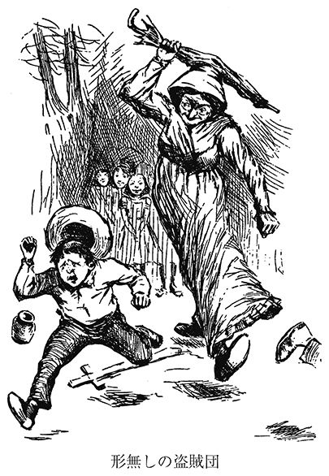
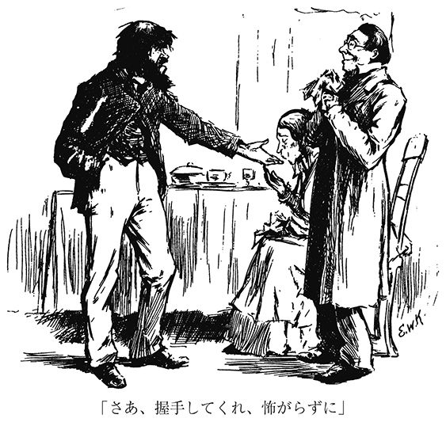
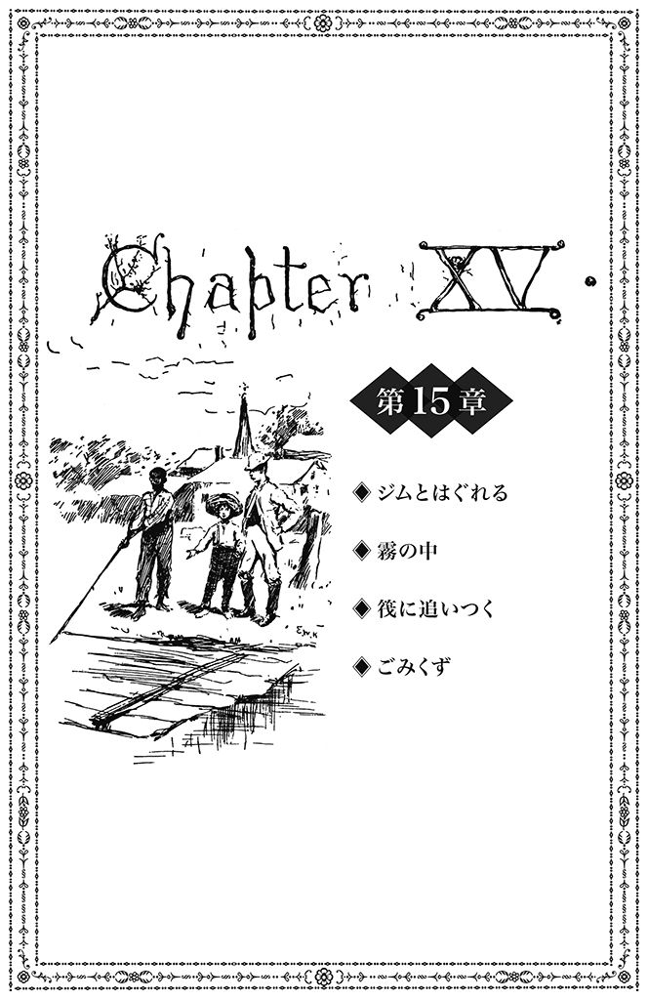

| ハックルベリー・フィンの冒険（上） | |
| トウェイン | |
| (2014) | |
ハックルベリー・フィンの冒険（上）
トウェイン
土屋京子訳
Title: THE ADVENTURES OF
HUCKLEBERRY FINN
1884
Author: Mark Twain
Illustrations by Edward Windsor Kemble
目次
第１章 ハックを真人間にする／ミス・ワトスン／トム・ソーヤーが呼びにきた
第５章 父ちゃんがもどってきた／ごりっぱな親／飲んだくれの改心
第６章 サッチャー判事を訴える／逃亡計画／父ちゃんの政談／酒乱
第８章 森の一夜／溺死体を浮かせる大砲／島を探検／なんだ、ジムじゃねえか！／逃亡奴隷／しるし／「バラム」
第11章 セアラ・ウィリアムズ／捜索の状況／言い逃れ／ゴーシェン
第12章 筏の旅／ものを借りる／難破船／三人の殺し屋／ボートを探せ
第16章 「へぼ歌、ひっこめ！」／元祖アーカンソーの荒くれ者／災いの申し子／エドの怪談話／チャールズ・ウィリアム・オルブライト／自由への期待／天然痘／ケイロ通過／蒸気船に当たられる
第17章 夜半の客／アーカンソーの農場／室内装飾／スティーヴン・ダウリング・ボッツ／弔詩量産
第18章 カーネル・グレンジャーフォード／貴族／宿怨／忘れもの／筏を取りもどす／材木山の銃撃戦／豚肉とキャベツの煮こみ
第19章 昼間は隠れて／天文学的考察／えせ禁酒運動／ブリッジウォーター公爵／悲運の王太子
第20章 ハックの身の上話／作戦を練る／伝道集会で稼ぐ／インド洋の海賊／公爵の印刷詐欺
第21章 剣劇の稽古／ハムレットの独白／町をぶらつく／さびれた町／酔いどれボグズ／射殺事件
第22章 シャーバーン／サーカスに忍びこむ／曲芸に見とれる／アーカンソーにつける薬
（下巻目次）
第23章 「だましたな！」／王様比べ／ジムのホームシック
第24章 ジム、リア王になる／「乗りなされ」／根掘り葉掘り／忌中
第25章 「来たのか？」／「頌栄」の大合唱／公明正大に／葬儀のオージー／叔父さんにお任せします
第26章 王様が通う教会／一七人の牧師／みごとな謝罪／盗み聞き／金貨を横取り
第27章 葬式／「ネズミでした」／問いつめられる／売り急ぎの儲けぞこない
第28章 イギリスへの旅／「人でなしめ！」／「出かけててもらえますか？」／「あなたのために祈るわ」／新種のおたふく風邪／対抗馬あらわる
第29章 どっちが本物？／金貨の所在／筆跡鑑定／棺桶を掘り上げろ／逃走
第30章 王様に吊るし上げられる／王様と公爵の対決／酔いつぶれて元の鞘
第31章 いやな予感／ジムがいない！／「いいや、おいら、地獄に行く」／公爵をかつぐ／「サイラス・フェ――」
第32章 静まりかえった田舎町／人違い／ピンチ／なりすましたはいいけれど
第33章 奴隷泥棒／南部流のもてなし／長い食前のお祈り／タールと羽根のリンチ
第34章 あの小屋だ！／華々しい計画／避雷針をよじのぼる／魔女がとりついた
第35章 脱獄の作法／ミステリアスな仕掛け／盗みの厳格なる要件／中国まで穴を掘る
第36章 避雷針のつもり／囚人の心得指南／子々孫々の代まで／どんだけカネを積まれても
第37章 シャツがない／スプーンを数える／出航命令／魔女のパイ
第38章 紋章／名監督トム／「何が名誉なもんかね」／涙で花を育てる
第39章 ネズミ／にぎやかすぎる寝床／身代わりの藁人形
第40章 釣り／自警団集結／命からがらの逃走／医者を呼びにいく
第41章 医者／サイラスおじさんと鉢合わせ／ホチキスのばあさん／サリーおばさんの心痛
第42章 負傷したトム／医者の話／トムの種明かし／ポリーおばさん現わる／「手紙を出しなさい」
おしまいの章 晴れて自由の身／囚人の駄賃／これでおしまい
解説 石原 剛
年譜
訳者あとがき
©Kyōko Tsuchiya 2014
◎ご注意
本作品の全部または一部を無断で複製、転載、改竄、公衆送信すること、および有償無償にかかわらず、本データを第三者に譲渡することを禁じます。
個人利用の目的以外での複製等の違法行為、もしくは第三者へ譲渡をしますと著作権法、その他関連法によって処罰されます。
警告
この話に何らかの主題を見出さんとする者は、訴えられるであろう。教訓を見出さんとする者は、追放されるであろう。構想を見出さんとする者は、射殺されるであろう。
著者の命により
兵站部長Ｇ・Ｇの名において布告する
注釈
本書においては、幾種類もの訛が使われている。すなわち、ミズーリ州の黒人訛。アメリカ南西部僻地の最も極端な訛。パイク郡のごくふつうの訛、およびその四つのバリエーション。これらは行き当たりばったりで書き分けたものではなく、当てずっぽうで書いたものでもない。それぞれの訛に精通する著者自身の確かな蘊蓄を傾けて、念入りに書き分けたものである。
このようなことを特記するのは、さもなくば、多くの読者諸氏が、本書の登場人物はみな似たような話し方をしようとしているものの成功していないようだ、と思うやもしれぬからである。
著者
おいらのことなんか、みんな、知らねえだろうな。『トム・ソーヤーの冒険』って本を読んだんじゃねえかぎりは。けど、そんなこと、どうだっていいんだ。その本はマーク・トウェインって人が作った本で、だいたいは、ほんとのことが書いてある。ちょいと膨らましたとこもあるけど、だいたいは、ほんとのことだ。そんなのは、どうってこっちゃねえ。噓ぐらい言うさ、誰だって。ときどきは。噓言わねえのはポリーおばさんか、ダグラス未亡人か、あと、メアリぐらいかな。ポリーおばさんってのはトムのポリーおばさんのことで、おばさんとメアリと未亡人の話は、みんな、その本に出てくる。その本は、ほとんどがほんとのことだけど、さっきも言ったみてえに、ちょいと膨らましたとこもある。
そんで、本のおしまいのとこがどういう話になってたかっていうと、トムとおいらは盗賊が洞窟に隠したカネを見つけて大金持ちになった。一人六〇〇〇ドルずつ、ぜんぶ金貨で。金貨を積み上げてみたら、すっげえたくさんあった。そんで、サッチャー判事がカネを預かって、利子つけて他人に貸して、おいらたちは一日一ドルずつもらえることになった。毎日、一年じゅう。どうすりゃいいのかわかんねえぐらいのカネだ。ダグラス未亡人は、おいらを自分ん家の子にしてちゃんとした人間に直すんだって言った。けど、いっつも家ん中で暮らさなきゃなんねえのは、きつかった。だって、未亡人ときたら、何でもかんでもいやんなるぐらい規則正しくて、きちんとしてんだもん。で、もうこれ以上がまんできねえってなったとこで、おいら、逃げだした。昔のぼろを着て、砂糖の大樽のねぐらにもどって、自由になって、ああよかったって思った。けど、トム・ソーヤーのやつがおいらの居場所を見つけて、これから盗賊団を始めるけど未亡人のとこにもどってちゃんとしてないと盗賊団に入れてやらないぞ、って言うから、おいら、未亡人のとこにもどった。
未亡人はおいらの顔見て泣いて、哀れな迷える子羊だとか、ほかにもいろんな悪口で呼んだけど、悪気は一個もねえんだ。そんで、未亡人がおいらにまた例の新しい服を着せたもんだから、おいら、また汗かくばっかしで、きゅうくつでしょうがなかった。そのうちに、また前と同じことが始まった。未亡人は晩めしどきになるとベルを鳴らすから、すぐ行かなくちゃなんねえ。テーブルについても、いきなり食いはじめちゃダメで、未亡人がうなだれて食いもんのことで何かちょっとぶつぶつ言うのを聞いてなくちゃなんねえ。けど、食いもんにはべつに何も悪いとこはねえんだ。何でもかんでも別々に料理してあるってこと以外は。残飯の樽だったら、そうじゃねえんだけど。ぜんぶごちゃまぜになって、汁がまじりあって、もっとうまくなるんだけどな。
晩めしのあと、未亡人は本を出してきて、おいらにモーゼとパピリスの話（１）を聞かしてくれた。おいら、その拾われたガキがどうなったのか、ものすごく知りたかったけど、そのうち、未亡人の話から、そのモーゼってのがずっと昔に死んじまったやつだってことがわかって、どうでもよくなった。おいら、死んだ人間なんか興味ねえもん。
そのうち、おいら、タバコが吸いたくなって、未亡人に吸わしてくれって頼んだんだけど、未亡人はダメだって言った。タバコは悪い習慣で、きたならしいから、やめなくちゃダメだ、って。いるんだよな、こういう連中。何もわかってねえくせして、悪く言うんだ。モーゼみてえに親戚でも何でもねえし死んじまって誰の役にも立ちゃしねえ者のことをあれこれ心配するくせして、おいらがちょっとしたいことしようとすると、思いっきりケチつける。しかも、未亡人は、嗅ぎタバコはやるんだ。もちろん、それは構わねえんだ。だって、自分がやってんだから。
未亡人の妹のミス・ワトスンはガリガリのオールドミスで、眼鏡かけてて、ちょっと前に未亡人ん家に来ていっしょに住むようになったんだけど、こんどはこのミス・ワトスンがおいらを座らして、スペリングの本を教えてやるって言いだした。一時間ぐらいしぼられたとこで、未亡人が、もうそのぐらいにしといてあげたら？って助け舟出してくれた。おいらも辛抱ぎりぎりだった。そのあとは、一時間ぐらい、うんざりするほど退屈で、おいら、じっとしてらんなかった。ミス・ワトスンは、「ハックルベリー、そんなところに足をのせてはいけません」とか、「ハックルベリー、姿勢が悪いですよ、背中をしゃんと伸ばして座りなさい」とか言った。かと思うと、こんどはすぐに、「そんなふうにあくびしたり伸びをしたりしてはいけません、ハックルベリー。なぜ、ちゃんとお行儀よくできないの？」って言う。そのあと、ミス・ワトスンは地獄の話をいっぱいした。おいら地獄に行ってたらよかったのにな、って言ったら、ミス・ワトスンが怒った。けど、おいら、悪気で言ったんじゃねえんだ。とにかく、どっかへ行っちまいてえって意味。こことは違うどっかに行きてえだけで、べつに行き先は地獄じゃなくてもよかったんだ。けど、ミス・ワトスンは、そんなこと言うなんて性根が曲がってる、あたしゃ口が裂けてもそんなことは言わない、天国に行けるようにがんばるんだ、って言った。おいらとしちゃ、ミス・ワトスンが行こうとしてんのと同じ場所に行っても何もいいことねえから、がんばらねえことに決心した。けど、口には出さねえようにしといた。だって、言ったら面倒になるだけで、何もいいことねえからさ。
いったんしゃべりだしたら、ミス・ワトスンの天国の話は次から次へ続いた。天国じゃ、みんな何もしねえで一日じゅうハープ弾いて歌ってりゃいいんだと。ずっと、ずうっと、永遠に。おいら、あんまりいい場所だとは思わなかった。そんなこと、ひとっつも口には出さなかったけどさ。そんで、トム・ソーヤーは天国に行くと思うかって聞いたら、ミス・ワトスンは、とうていそうは思えませんって言った。よかった。だって、おいら、トムと同じとこがいいもん。
ミス・ワトスンがああだこうだ言うから、おいら、だんだんうんざりして、ひとりぼっちな気分になってきた。そのうちに黒ん坊たちが呼ばれてはいってきて、お祈りして、そのあとみんな寝にいった。おいらはろうそくを持って自分の部屋に上がってって、ろうそくをテーブルに置いた。それから窓ぎわの椅子に座って何か楽しいこと考えようとしたけど、ぜんぜんダメだった。さびしすぎて、こんなんなら死んじまったほうがいいや、って思うぐらいだった。空に星がきらきらしてて、森で葉っぱがものすごく悲しそうにざわざわ鳴ってて、遠くでフクロウの声が聞こえた。誰か死んだ人のことをホー、ホー、って言ってんだ。ヨタカと犬の声もした。もうすぐ死ぬ人のことを鳴いてんだ。風が何かこっそり伝えてこようとしてんだけど、何なのかわかんなくて、ぞ～っと寒くなった。そのうちに、森の奥のほうで幽霊がたてる音がした。幽霊が何か心にひっかかってることを伝えたいんだけど、わかってもらえなくて、それで墓ん中で安らかになれねえもんだから、ああやって毎晩悲しそうな音を出すんだ。もう、気分は沈むし、怖くなるし、ほんと、誰かここにいてくれりゃいいのにって思った。そのとき、クモが肩にはいのぼってきて、はじき飛ばしたら、ろうそくの火ん中に飛んでって、どけてやる間もなしにチリチリってしぼんじまった。誰に言われなくたって、それがものすごく悪いしるしで何か運の悪いことが起こる前ぶれだってことはわかってたから、おいら、怖くなって、服が脱げちまいそうなぐらいガタガタ震えた。で、椅子から立ち上がって、その場で三回ぐるぐる回って、そのたんび胸に十字を切った。そのあと、髪の毛をちょこっと糸でしばった。魔女がとりつかねえように。けど、自信はなかった。だって、そのまじないは、馬の蹄鉄を見つけたけどドアの上に打ち付けとくのを忘れてなくしちまったとき用のまじないで、クモを殺しちまったときに運の悪いことが起こらねえようにする効き目があるって話は聞いたことなかったから。
おいらはまた椅子に座って、ガタガタ震えながら、パイプを出して一服吸った。家ん中は死んだみてえに静まってて、もう未亡人にも気づかれねえだろうと思ったから。だいぶん時間がたったあと、村の時計がゴーン、ゴーン、ゴーン......って一二回鳴るのが聞こえて、そのあとまたし～んとなった。さっきよりもっとし～んとしてた。と思ったら、小枝の折れる音がした。下の木立の暗がりん中だ......。何か動いてる......。おいら、じ～っと座ったまんま耳をすました。すぐに、下のほうで、やっと聞こえるぐらいの「ミュー、ミュー」って声がした。いいぞ！ おいらもできるだけ小さい声で「ミュー、ミュー」をやってから、ろうそくの火を消して、窓から這い出て、納屋の屋根に下りた。そっから地面にすべりおりて、木のあいだを這ってったら、やっぱし思ったとおり、トム・ソーヤーが待ってた。
１ 赤子のモーゼがパピルスの籠に入れられてナイル河畔の葦の茂みに捨てられていたところをファラオの王女に拾われたくだり（旧約聖書「出エジプト記」第二章）をさしている。

おいらたちは未亡人ん家の菜園の裏手にある木立ん中の小道を抜き足差し足で進んでった。頭で木の枝をひっかけねえように、腰を低くして進んだ。台所のそばを通ったとき、おいら、根っこに蹴っつまずいてころんで音たてちまった。おいらたちはその場にしゃがんで、じっと動かねえようにした。ミス・ワトスンのでかい黒ん坊でジム（１）ってのがいるんだけど、そいつが台所の戸口に座ってた。うしろが明るかったんで、おいらたちのほうからは、けっこうはっきり見えた。ジムは立ち上がって、首を伸ばして、一分ぐらい聞き耳たててたけど、そのうち、「そこにおるのは誰だね？」って言った。
ジムはもうしばらく聞き耳たてたあと、抜き足差し足でこっちへ来て、おいらとトムのちょうど真ん中に立った。ほとんど手でさわれそうなぐらい近くだった。何分も、何分も、音ひとつしねえまんま過ぎて、そのあいだじゅうずっと、おいらたちはすぐそばにいた。そのうちに、おいら、足首んとこがかいくなってきた。けど、かかなかった。そしたら、こんどは耳がかいくなってきた。その次は、背中のど真ん中がかいくなってきた。ボリボリできなくて死ぬかと思うぐらいかいかった。そういうことは、それからあとにも何べんかあった。偉いさんがそばにいるときとか、葬式んときとか、眠くねえのに眠ろうとしてるときとか。ボリボリやっちゃいけねえときにかぎって、あっちゃこっちゃ千もの場所がかいくなるんだ。そのうちに、ジムが声を出した。
「もし、誰だね？ どこにおるだね？ いま、たしかに聞こえただぞ。よし、そんならこうするだ......わし、ここに座って、また音が聞こえるまで、ずうっと耳をすまして聞いとるでな」
ジムは地面に座りこんだ。おいらとトムのあいだに。背中を木にもたれて、足を前に伸ばして。片方の足がもうちょいでおいらの足にさわりそうになった。おいら、こんどは鼻がかいくなった。あんまりかいくて、目から涙が出てきた。けど、かかなかった。そしたら、そのうち鼻ん中がかいくなった。その次は、鼻の下がかいくなった。もう、じっとしゃがんでるなんて無理に思えてきた。そういうなさけねえ状態が六分か七分ぐらい続いたかな。もっとすんげえ長い感じがしたけど。もう、あっちゃこっちゃ一一個もかいいとこがあって、あと一分もがまんできねえと思ったけど、歯をぎゅっと食いしばってがまんしようと思ったちょうどそんとき、ジムの息が深くなった。と思ったら、いびきが聞こえてきた。そしたら、すぐに、かいいのはおさまった。
トムが口で小さい音を出して合図してきて、おいらたちは四つん這いのまんま、そっから離れた。三メートル離れたとき、トムがひそひそ声で、おもしろいからジムを木に縛りつけちまおうぜ、って言った。おいら、やめとけって言った。ジムが目ぇさまして騒いだら、おいらが自分の部屋にいねえことがバレちまうから。そしたら、トムがこんどは、ろうそくの数が少し足りないから台所にしのびこんで何本か取ってこようって言いだした。おいら、やめとこうって言ったんだけど。ジムが目ぇさまして台所にもどってくるかもしんねえから、って。けど、トムは、危ないからこそやりたいんだ、って言う。そんで、おいらたちは台所にしのびこんで、ろうそくを三本くすねた。トムはテーブルの上に代金として五セント置いてきた。で、外に出たんだけど、おいらは早くそっからずらかりたくてしょうがねえのに、トムときたら、どうしてもジムんとこまで這ってもどって何かいたずらしてやるんだって聞かねえから、おいら、待ってた。すっげえ長く思えた。何もかもすっげえし～んとしてて、心細かった。
トムがもどってきたらすぐに、おいらたちはまた庭のフェンスぞいにさっきの小道を進んでって、そのうち、未亡人ん家の裏手のとんがった丘のてっぺんに着いた。トムは、ジムがかぶってた帽子を取って頭の上の枝にひっかけてきた、って言った。ジムはちょっと動いたけど目をさまさなかった、って。あとんなって、ジムは、魔女どもに魔法をかけられてわけわかんなくなってるあいだに背中に乗られてミズーリ州をあっちゃこっちゃ乗り回されたんだ、って話をしゃべりまくった。ジムをさんざん乗り回したあと、魔女はまたジムを木の下に座らして、誰のしわざかわかるように帽子を木の枝にひっかけてったんだ、って。次にジムがその話をしゃべったときには、魔女どもにニューオーリンズまで乗り回された、ってことになってた。そんで、そのあとも、しゃべるたんびに話がどんどんでかくなってって、そのうちとうとう、魔女どもに世界じゅう乗り回されて息もたえだえで背中が鞍ずれだらけになってもどってきた、って話になってた。ジムはそのことをすっげえ自慢して、ほかの黒ん坊どもなんかてんで相手にしなくなった。何キロも遠くのあっちゃこっちゃから黒ん坊どもがジムの話を聞きに訪ねてきて、ジムはこのあたりじゃいちばん顔ききの黒ん坊になった。よく、見かけねえ顔の黒ん坊どもが口をぽか～んと開けて突っ立って、ジムのことを何かふしぎなもんでも見るみてえに上から下まで眺めたりしてたもんだ。黒ん坊ってのは、いっつも台所の火のそばの暗がりに集まって魔女の話をしてんだけど、誰かが物知り顔で自慢そうにしゃべってるとこへジムがはいってくると、「ふん！ おめえに魔女の何がわかる！」って言うもんだから、その黒ん坊は何も言えなくなって、すごすごと引き下がるしかねえってわけ。ジムはいっつも例の五セント玉をひもで首から吊るしてて、これは悪魔の手からじきじきにもらったお守りで、これに向かってまじないの言葉をとなえりゃ万病を治せるし、いつでも魔女を呼び出せるんだ、って言ってた。けど、そのまじないの言葉が何なのか、ジムはぜったい言わなかった。黒ん坊たちがあっちゃこっちゃからやってきて、ありったけのもんをジムに渡してその五セント玉を見してもらうんだけど、誰もさわろうとはしなかった。悪魔の手がさわった五セント玉だから。ジムは召使いとしちゃろくすっぽ使いもんになんねえやつになっちまった。ってのは、悪魔の姿を見たとか魔女に乗り回されたとか言って生意気になりすぎたから。
丘のてっぺんまで登りつめたとこから、おいらとトムは村を見下ろした。明かりが三つ四つチカチカ見えた。きっと、病人がいる家なんだろうな。頭の上で星がものすごくキラキラ光ってた。下を見ると、村のそばに川が流れてて、幅が一キロ半もあって、恐ろしく静かで堂々と流れてた。丘を下りて、古い皮なめし小屋に行ったら、ジョー・ハーパーや、ベン・ロジャーズや、あと二、三人が隠れて待ってた。おいらたちは小さいボートの舫い綱をといて、それに乗って川を四キロ下って、丘の横っ腹にでかい地滑りの跡があるとこまで行って、そこで岸に上がった。
そんで、木がもじゃもじゃ生えてるとこまで行って、トムが全員に秘密を守るって誓わしたあとで、丘に開いてる穴の場所を教えた。木がいちばんびっしり生えてるとこ。みんなでろうそくに火ぃつけて、四つん這いで穴にはいってった。二〇〇メートルぐらい進んだら、洞窟の広くなってるとこに出た。トムは、あっちゃこっちゃの通路をさぐってたけど、そのうち、穴があるなんてぜんぜんわかんねえような壁の下にもぐってった。みんな、あとについて狭いとこを通ってったら、ちょっとした部屋みてえになってるじめじめ湿った冷やっこい場所に出て、そこで止まって、トムが言った。
「それでは、これから盗賊団を結成し、これを『トム・ソーヤー一味』と呼ぶことにする。この盗賊団に加わりたい者は、誓いを立て、血で署名しなくてはならない」
みんな、やる気まんまんだった。そんで、トムが紙に書いてきた誓いの文を出して、読んだ。そこには、みんな盗賊団に忠誠を誓うこと、ぜったいに秘密をもらさないこと、って書いてあった。あと、もし誰かが盗賊団のメンバーに何かしたら、そいつとそいつの家族を殺すように命じられたメンバーは誰でもその命令を実行しなくてはならない、相手を一家皆殺しにして死体の胸に盗賊団のしるしである十字のマークを刻みつけるまでは食事をしてもいけないし眠ってもいけない、あと、盗賊団のメンバー以外はそのマークを使ってはならない、もし使ったら、そいつを訴えるし、それでもまた使ったら、殺さなくてはならない、あと、盗賊団のメンバーの誰かが秘密をしゃべったら、そいつはのどを搔き切られて、死体を燃やされて、灰をばらまかれて、その名前はメンバーのリストから血で塗りつぶされて、その名は二度とふたたび盗賊団の中で口にされることはなく、永久に呪われ忘れ去られるであろう。
みんな、みごとな誓いの言葉だって感心して、自分で考えたのかってトムに聞いた。自分で考えたとこもあるけど、それ以外は海賊の本や盗賊の本に書いてあったことで、一流の盗賊団ってのはみんなこういう誓いを立てるものなんだ、ってトムが言った。
盗賊団の秘密をもらしたメンバーは家族も殺されるってことにしたらいいんじゃないか、って誰かが言った。トムがいい考えだって言って、鉛筆でそのことを書き足した。そんとき、ベン・ロジャーズが言った。
「なあ、ハック・フィンは？ 家族がいないけど、どうするんだ？」
「おやじさんがいるだろ？」ってトム・ソーヤーが言った。
「いるけど、どこにいるんだか、ぜんぜんわかんないじゃん、最近。前はよく酔っぱらって皮なめし小屋でブタといっしょにのびてたけど、ここ一年かもっと長いこと、このあたりじゃ姿を見かけてないよ？」
みんなで話しあいになって、おいら、仲間からはずされそうになった。みんな家族か誰か殺せる人間がいねえと不公平だってことで。どうしたらいいか、誰も思いつかなくて、困っちまって、黙って座ってた。おいら、泣きそうだった。けど、そんとき急にいい考えが浮かんで、ミス・ワトスンがいる、ミス・ワトスンを殺せばいいや、って言ったら、みんなも、「うん、うん、それがいい、そんならハックもはいれる」って言った。
それから、みんなピンで自分の指を刺して、血を出して、署名した。おいらも、紙に自分のマークをつけた。
「ところでさあ」ベン・ロジャーズが言った。「この盗賊団ってのは、何をやるんだ？」
「強盗と人殺しにきまってんだろ」ってトムが言った。
「けど、何を強盗するんだ？ 家とか？ 家畜とか？」
「ちっ！ 家畜とかそういうもんを盗むのは、強盗じゃなくてコソ泥だろ」ってトム・ソーヤーが言った。「ぼくたちはコソ泥じゃないんだ。そんなんじゃ格好つかないよ。ぼくたちは追いはぎをやるんだ。街道で馬車や駅馬車を襲うんだ、覆面つけて。そんで、人を殺して時計やお金を奪うんだ」
「いつも人を殺さなきゃだめなのか？」
「もちろん。それがいちばんいいんだ。そうじゃない考えの専門家もいるけど、たいていは殺すのがいちばんいいってことになってる。たまには、この洞窟に連れてきて身代金を奪うまでつかまえとく、っていう場合もあるけどね」
「ミノシロキン？ 何だ、それ？」
「わかんない。でも、そうやるもんなんだ。本にそう書いてあったもん。だから、当然、身代金は奪わないと」
「だけど、何なのかわかんないのに、どうやって奪うんだよ？」
「いいんだってば。とにかく奪わなくちゃいけないんだよ。本に書いてあるって言っただろ？ 本に書いてあるのと違うふうにやりたいのか？ それでぜんぶ台無しになってもいいのか？」
「そりゃ、口で言うのはけっこうだけどさ、トム・ソーヤー、やり方がわかんないのに、いったいぜんたいどうやってミノシロキンを奪えるんだよ？ そこんとこを教えてほしいね。おまえはミノシロキンって何だと思うわけ？」
「う～ん、わかんない。でも、たぶん、身代金を奪うまでつかまえとくってことは、そいつが死ぬまでつかまえとくってことだと思う」
「そんならいいや、そんなら話はわかる。なんで最初っからそう言わないんだよ？ そんじゃ、死ぬまでつかまえとくんだな？ それも大変そうだな。めしは食うし、しょっちゅう逃げようとするだろうし」
「馬鹿言うなよ、ベン・ロジャーズ。見張りがついてるのに、どうやって逃げるんだ？ ちょっとでも動いたら撃ち殺されるんだよ？」
「見張りね。そりゃ、けっこうだ。つまり、誰か一晩じゅう眠らずに起きてなきゃならないってことだな。見張り番に。そんなの馬鹿げてるよ。なんで、連れてきたらすぐに棍棒でぶんなぐってミノシロキンしないんだ？」
「だって、本にそう書いてないからだよ。ベン・ロジャーズ、おまえ、ちゃんとしたやり方でやる気がないのか？ どうなんだ？ そこが肝腎なんだよ。本を書いた人たちのほうが正しいやり方をわかってるって思わないのか？ それとも、おまえのほうが詳しいわけ？ 冗談じゃないよ、ちゃんと正しいやり方で身代金を奪わなきゃだめだよ」
「わかったよ、べつにいいけどさ。でも、とにかく、馬鹿げたやり方だと思うけどね。それとさ、女たちも殺すのか？」
「おいおい、ベン・ロジャーズ、もしぼくがおまえぐらい物を知らなかったら、口を閉じとくけどね。女を殺す？ とんでもない、そんなこと本のどこにも書いてないよ。女は洞窟に連れてきて、礼儀正しく扱うんだ。そしたら、そのうちに女たちが盗賊に恋をして、もう家になんか帰りたがらなくなるのさ」
「ふうん。そういうことならそれでいいけど、おれは信じないね。それじゃ、あっという間に洞窟が女たちやミノシロキンされるのを待ってる男たちでいっぱいになっちゃって、盗賊の居場所がなくなっちゃうよ。けど、いいよ、続けて。おれはべつに何も言うことはないから」
ちびのトミー・バーンズは眠っちまってたんだけど、みんなに起こされたら怖がって泣きだして、家に帰りたい、母ちゃんのとこに帰りたい、もう盗賊なんかなりたくない、って言った。
そんで、みんなが泣き虫って呼んでからかったもんだから、トミーが怒って、いますぐ秘密をぜんぶばらしてやるって言った。けど、トムが五セントやって黙らして、それじゃみんな家に帰って、来週また集まって強盗と人殺しをやろう、って言った。
ベン・ロジャーズが、そんなにしょっちゅうは抜け出せない、日曜日しかダメなんだ、だからこんどの日曜日に始めよう、って言った。けど、ほかのみんなが、日曜日にやるのはまずいんじゃないかって言って、そういうことになった。で、できるだけ早くみんなで集まって日を決めようって話になって、トムを盗賊団の第一の頭に選んで、ジョー・ハーパーを第二の頭に選んで、家に帰った。
おいらは納屋によじのぼって、窓からこっそり部屋にもどった。夜が明けるちょい前ぐらいだった。新しい服はろうそくの獣脂と泥でべとべと、おいらは疲れてくたくただった。
１ 『トム・ソーヤーの冒険』第２章に登場する子供の黒人奴隷「ジム」とは別人物。
朝、服のことでミス・ワトスンにこっぴどく叱られた。けど、未亡人はおいらを叱らずに服についた獣脂や泥を落としてくれて、すげえ悲しそうな顔しただけだったんで、おいら、できれば少しのあいだは良い子にしてようかと思った。そのあと、ミス・ワトスンはおいらを押し入れん中に連れてってお祈りしたけど（１）、べつに何も起こんなかった。ミス・ワトスンは、毎日お祈りをしなさい、そうすれば何でもお願いしたことがかなうから、って言った。けど、そうはなんなかった。おいら、やってみたもん。いちどは釣り糸が手にはいったけど、釣り針がついてなかった。釣り針がなけりゃ、役に立ちゃしねえ。釣り針をお願いしますって三回か四回お祈りしたけど、どうしてか、効き目がなかった。そんで、ある日、ミス・ワトスンにおいらのかわりにお祈りをやってみてくれって頼んだら、ミス・ワトスンはおいらのことを馬鹿って言った。なんで馬鹿なのか、理由は教えてくんねえし、おいらもぜんぜんわかんなかった。
あるとき、おいら、森ん中に行って、尻を下ろして、このことをうんと長いこと考えた。もしお祈りで欲しいもんが手にはいるんなら、なんで教会のウィン執事はブタ肉の相場ですった金を取りもどせねえんだ？ なんで未亡人は盗まれた銀の嗅ぎタバコ入れを取り返せねえんだ？ なんでミス・ワトスンは太れねえんだ？ つまりお祈りは効き目がねえってことだ、っておいらは思った。で、未亡人のとこに行って、そう言った。そしたら未亡人は、お祈りによって得られるのは「心の恵み」なのですよ、って言った。おいらには難しすぎてわかんなかったけど、未亡人は、こういうことだって説明してくれた。早い話が、おいらはほかの人たちを助けて、ほかの人たちのためにできるだけのことをしてやって、いっつもほかの人たちのことを気にかけて、自分の得は一個も考えちゃいけねえんだってこと。「ほかの人たち」ん中には、ミス・ワトスンもはいってるらしい。おいら、森へ行って、ああでもねえこうでもねえって長いこと考えたけど、どう考えても得になりそうにゃ思えなかった（「ほかの人たち」が得するのを別にすりゃ、って話）。そんで、けっきょく、もうそんなこと考えるのはやめて忘れちまおうと思った。ときどき、未亡人はおいらを脇へ呼んで神さまのことを話してくれて、そんときはよだれが出そうなぐらいうめえ話だと思うんだけど、その次の日とかに、こんどはミス・ワトスンがおいらをつかまえて、ぜんぶぶち壊しにした。おいらの考えるとこじゃ、たぶん、神さまは二つあるんだな。でもって、未亡人の神さまに当たりゃ、しょうもねえ人間でも運が向くかもしんねえけど、ミス・ワトスンの神さまに当たったら最後、何もいいことなしってこと。おいら、いろいろ考えて、未亡人のほうの神さまにつきてえもんだと思った。むこうがそれでいいんならの話だけど。でも、むこうにとっちゃ、何も得はなさそうだしな。おいらなんか無学だし、下の下だし、根性も曲がってるし。
父ちゃんはここ一年以上も姿を見た人がいなくて、それはおいらにしてみりゃありがてえことだった。おいら、父ちゃんなんか二度と会いたくなかった。父ちゃんは、酔いつぶれてねえときはいっつもおいらをぶん殴ったり、つかまえてひどい目にあわしたから。おいらのほうも、父ちゃんが近くをうろついてるときは、たいてい森に逃げてたけど。ちょうどそのころ、父ちゃんが川で溺れ死んでんのが見つかったって話を聞いた。村から二〇キロぐらい上のとこだって話だった。とにかく、その死体は父ちゃんだってことになってた。大きさがちょうど父ちゃんと同じだったし、服がぼろぼろだったし、髪の毛もめったにねえぐらい長かったし。たしかに、どれも父ちゃんそっくりだった。けど、人相からは何もわかんなかったって。長いこと水につかってたせいで、顔なんて呼べるようなもんじゃなくなってたから。死体はあおむけに浮いてたって聞いた。村の人たちが死体を引きあげて川岸に埋めた。けど、おいらが安心してられたのも長くはなかった。ってのは、あることを思いついたから。死んだ男はあおむけに浮かぶもんじゃなくてうつぶせに浮かぶもんだってことを、おいら、よ～く知ってた。ってことは、その死体は父ちゃんじゃなくて、男の服を着た女だったってことだ。そんで、おいらはまた心配になった。そのうちいずれ父ちゃんは姿を見せるだろうって、おいらは思った。そうなってほしくねえけど。
それから一カ月ぐらい、ときどき盗賊ごっこをやった。そのあと、おいらは盗賊団をやめた。ほかのみんなもやめた。おいらたちは何も強盗しなかったし、誰も殺さなかった。したつもりになっただけ。森ん中から飛び出してブタ追いの男たちを追っかけたり、荷車に畑作物を積んで市場へ行く女たちを追っかけたりしたけど、何も分捕りゃしなかった。トム・ソーヤーはブタのことを「金塊」って呼んで、カブやなんかの野菜を「宝石」って呼んで、みんなで洞窟に行ってワイワイ手柄話したり、何人殺したとか胸にしるしを刻んだとか自慢しあったけど、それが何の足しになんのか、おいらにはわかんなかった。あるとき、トムは誰かに松明を持たせて村じゅう走り回らした。「鬨の声」とかいって、盗賊団に集まれっていう合図なんだとさ。そんで、トムは、スパイから秘密の知らせが届いた、あしたスペイン人の商人と金持ちのエイラブ人（２）の一行がゾウ二〇〇頭とラクダ六〇〇頭と一〇〇〇頭以上のラバにダイヤモンドを満載して「洞窟の谷」で野営することになっている、護衛は兵士たった四〇〇人である、われわれは商隊を「待ち伏せ」（ってトムは言った）して皆殺しにして荷物を分捕るぞ、って言った。各自、刀と銃の手入れを怠らず明日に備えるように、ってトムは言った。トムときたら、カブを積んだ荷車ひとつ襲うときだって、刀や銃をしっかり研いどけって言うんだ。刀や銃ってったって、ただの細長い板きれとほうきの柄で、そんなもん、へとへとになるまで研いだって、もとどおりの板きれとほうきの柄で、これっぽっちだってそれ以上のもんになるわけじゃねえのにさ。おいら、そんなたくさんのスペイン人とエイラブ人をやっつけれるとは思えなかったけど、ラクダとゾウが見たかったから、次の日の土曜日、待ち伏せに行った。突撃の命令で、おいらたちは森から飛び出して丘を下って突撃した。けど、スペイン人もエイラブ人もいなくて、ラクダもゾウもいなくて、いたのは日曜学校のピクニックに来てる生徒で、しかも一年生のチビたちばっかしだった。おいらたちはピクニックを蹴散らして、谷間でチビたちを追いまわした。分捕り品はドーナッツとジャムだけだった。ベン・ロジャーズはぬいぐるみ人形を分捕って、ジョー・ハーパーは讃美歌の本と教会のパンフレットを分捕ったけど。そのうちに日曜学校の先生が走ってきて、おいらたちは分捕り品を全部放り出して退却した。ダイヤモンドなんか一個も見かけなかったんで、トム・ソーヤーにそう言ったら、そんなことないよ、いっぱいあったじゃないか、って言う。エイラブ人もいたし、ゾウやなんかもいた、って言う。じゃ、なんで見えなかったんだ？って、おいらは聞いた。トムは、おまえ何にも知らないんだな、『ドン・キホーテ』って本を読んでれば聞かなくたってわかるはずだ、って言った。それはぜんぶ魔術のせいなんだ、って。ほんとは何百人って兵隊がいたし、ゾウも財宝もあったけど、魔術師って名の敵がいて、そいつらが商隊を日曜学校のチビたちに変えちまったんだ、って。いやがらせで。そうか、わかった、そんなら魔術師どもと戦えばいいんだな、っておいらは言った。トム・ソーヤーはおいらのことをボケナスって言った。

「だってさ、魔術師ってのは、たくさんの魔人を呼び出せるんだよ？ おまえなんか、あっという間もなしにズタズタにされちゃうんだよ？ 魔人ってのは、木と同じぐらい背が高くて、教会と同じぐらい太いんだから」
おいらは言った。「そんなら、その魔人ってやつを何人かこっちの味方にすりゃいいじゃねえか。そしたら、残りをやっつけれるんじゃねえか？」
「どうやって味方にするんだよ？」
「さあ、知らねえけど。連中は、どうやって魔人を味方にするんだ？」
「そりゃ、古いブリキのランプとか鉄の指輪とかをこするのさ。そうすると雷や稲妻が起こって、煙がもくもく上がって、すごい勢いで魔人が出てくるんだよ。そんで、何でも命令されたことをあっという間にやるんだ。魔人は散弾製造塔（３）を根こそぎ持ち上げるんだってお茶の子だし、それで日曜学校の校長先生とか誰でも殴り倒しちゃうんだ」
「誰がそんな大暴れしろって命令するんだ？」
「そりゃ、ランプとか指輪をこすった人さ。魔人はランプや指輪をこすった人の家来で、何でもご主人様の言うとおりにしなくちゃいけないんだ。長さが六〇キロ以上もある宮殿をダイヤモンドで作れって言われて、そんでその宮殿をチューインガムとか何でも好きなものでいっぱいにしろって言われたら、それとか中国の皇帝の娘を花嫁にするから連れてこいって言われたら、そのとおりにしなくちゃいけないんだ。しかも、翌朝の日の出までに、だよ？ それに、その宮殿をどこでもご主人様の望むところにほいほい運ばなくちゃならないんだからね」
「ふうん。魔人ってのはまぬけな連中だな」って、おいらは言った。「宮殿なんか、作ったら自分のもんにしときゃいいのに、そんなふうにくれてやっちまうなんてさ。それにだよ、もしおいらがその魔人だったらさ、古いブリキのランプなんかこすられたぐらいでのこのこ出ていったりなんかしねえけどな」
「何むちゃくちゃ言ってんだよ、ハック・フィン。ランプをこすられたら、四の五の言わずに即座に参上しなくちゃいけないんだよ」
「へ、てめえは木と同じぐらい背が高くて、教会と同じぐらい太いのに、か？ わかったよ、そんなら出てきてやるよ。けど、そいつを国じゅうでいちばん高い木のてっぺんに追っぱらってやる」
「ちぇっ、おまえと話しても埒があかないよ、ハック・フィン。おまえ、何にもわかってないんだもん。救いようのない脳足りんだな」
おいら、ぜんぶのことを二、三日ばかし考えてみた。で、ほんとかどうか確かめようと思って、古いブリキのランプと鉄の指輪を持って森へ出かけてって、こすって、こすって、こすりまくった。うまくいったら宮殿を建てさして売っぱらおうと思って。けど、ぜんぜんダメだった。魔人なんか出やしねえ。つまりは、どれもこれもみんなトム・ソーヤーの噓ってことだな、って思った。トムはエイラブ人とかゾウとか信じてたのかもしんねえけど、おいらの考えは違う。ありゃ、日曜学校の話とそっくりのうさんくせえ感じがした。
それから三、四カ月が過ぎて、すっかり冬になった。おいらはほとんどの日は学校に行って、言葉のつづりや字の読み書きがちっとはできるようになった。九九も、ロク・シチ・サンジュウゴってとこまではできるようになったけど、そっから先は永遠に生きてたってできるようにゃならねえだろうな。どっちにしろ、算数には興味ねえし。
最初、おいら、学校なんかだいっきらいだった。けど、だんだんそのうちに、がまんできるようになった。どうしようもねえぐらい退屈になったときは、学校をさぼった。で、次の日に罰で尻をたたかれると、さっぱりして気が晴れた。そんなわけで、学校は長く通ってるうちに楽になってきた。未亡人のやり方にもだんだん慣れてきて、むこうもおいらにあんまりうるさく言わなくなった。家ん中で暮らしてベッドで眠ったりすんのはきゅうくつだらけだったけど、外が寒くなる前は、ときどき家から抜け出して森ん中で眠ったりしてたし、それで息抜きできた。昔のまんまがいちばん良かったけど、新しい暮らしも少しは好きになってきた。未亡人は、おいらは時間はかかるけど確実に良くなってるし、すごくがんばってる、って言った。おいらのことを恥ずかしいなんて思ってないって言った。
ある日、朝めしのときに、おいら、塩入れをひっくりかえしちまった。で、急いでこぼれた塩をつまんで左肩の後ろへ投げて悪運が来ねえようにしようと思ったんだけど、ミス・ワトスンのほうが早くて、おいらの手を払いのけて、「手をひっこめなさい、ハックルベリー。なんで、あなたはいつも粗相ばかりするの」って言った。未亡人がとりなしてくれたけど、そんなんじゃ悪運は防げやしねえ。おいら、知ってるもん。朝めしのあと、おいらはびくびく心配しながら学校に出かけた。いつ悪運が降ってくるんだろう、どんな悪運が降ってくるんだろう、って思いながら。悪運が降りかかんねえようにする方法もあるけど、今回のはそういうのが効かねえやつで、だから、おいらは何もしねえまんま、暗い気分で用心しながらのろのろ歩いてった。
家の前の庭を突っ切って、踏み越し段をのぼった。板張りの高いフェンスをこの段のとこで越せるようになってる。地面には新しい雪が二、三センチ積もってて、人の足跡があった。足跡は石切り場から登ってきて、踏み越し段のとこでしばらく立ってて、そのあと庭のフェンスぞいに続いてた。変だな、こんだけうろついてたくせに、中にはいってこねえなんて。わけわかんねえや。なんか、すごく気になった。足跡をたどって行こうと思ったけど、まず、しゃがんで足跡をよ～く見た。最初は気がつかなかったけど、そのうち気がついた。左足の靴底にでかい釘で悪魔を追っ払うための十字がつけてあった。
おいらはすぐ立ち上がって、一目散に丘を駆け下りた。しょっちゅう後ろをふりかえったけど、誰も見えなかった。おいらは最短時間でサッチャー判事ん家に着いた。
判事は、「おやおや、どうしたね、そんなに息を切らして。利息を取りに来たのかね？」って言った。
「違うんです」おいらは言った。「利息、あるんですか？」
「ああ、あるよ。半年分がきのうの晩にはいってきたところだ。一五〇ドルちょっとある。大金だ。きみの六〇〇〇ドルと合わせて投資に回しておこうか？ きみに渡したら、使ってしまうだろう？」
「違うんです、おいら、使いたくなんかねえんです。おいら、そんなの、ぜんぜんいらねえんです。六〇〇〇ドルのほうも。もらってほしいんです、判事さんにあげます、六〇〇〇ドルも、ぜんぶ」
判事はびっくりした顔になった。どういう意味か、わかんねえみてえだった。
「何だって？ きみ、それはどういう意味なんだい？」
おいらは、「頼むから何も聞かねえでください。もらってくれる......でしょ？」って言った。
判事は、「話がよくわからないんだが。何かあったのかね？」って言った。
「もらってほしいんです。そんで、何も聞かねえでほしいんです。そしたら、おいら、噓つかずにすむから」
判事は少し考えてたけど、こう言った。
「そうか、そうか、わかったぞ。きみは、わたしに全財産を売りたいと言っているんだね？ もらってほしいのではなくて。それなら、話はわかる」
それから、判事は紙に何か書いて、もっぺん読みなおしてから言った。
「これでいい。ほら、ここに『対価として』と書いてある。つまり、わたしがきみから買って、その代金を支払った、という意味だ。きみに一ドルをあげよう。さあ、ここに署名をして」
おいらは名前を書いて、判事ん家を出た。
ミス・ワトスンの奴隷のジムは、握りこぶしぐらいの大きさの毛玉を持ってた。雄牛の四番目の胃ん中から出てきたやつで、ジムはその毛玉でよく魔法をやってた。ジムに言わせると、その毛玉ん中には霊がはいってて、何でもわかるんだって。それで、おいらはその晩ジムんとこへ行って、父ちゃんがもどってきたらしい、雪の上に足跡があったから、そんで教えてほしいんだけど、父ちゃんは何するつもりなのか、それと、父ちゃんはずっといるつもりなんだろうか？って聞いた。ジムは毛玉を取り出して、その上で何か言葉を言ったあと、毛玉を高いとこから床に落とした。毛玉はボタッと落ちて、ほんの二、三センチぐらい転がった。ジムはもういっぺんやってみて、そのあと、またもういっぺんやってみたけど、毛玉はそっくり同じことをした。ジムは両膝をついてかがみこんで、毛玉に耳をくっつけて聞いた。けど、ダメだった。毛玉のやつ、しゃべりたくねえらしい、って。ときどき、カネをやらんとしゃべらねえだよ、ってジムは言った。おいら、すりへった偽物の二五セント玉ならあるけど、ってジムに言った。銀の下から真鍮がのぞいてっから使い物にはなんねえし、真鍮がのぞいてなかったとしても、どう見たって通用しそうにねえ、だって、あんましすりへってて、さわった感じがつるつるだから、出すたんびにバレちまうだろう、って（判事からもらった一ドルのことは黙っといた）。ひでえ偽物だけど、毛玉が相手なら通用するかもしんねえ、本物との違いなんかわかんねえだろうからって、おいらは言った。ジムは偽コインのにおいをかいで、歯で嚙んで、こすってみたあと、なんとか毛玉を言いくるめれると思うって言った。あと、生のジャガイモを割った中にはさんで一晩おいときゃ次の朝には真鍮も見えねえようになるし、つるつるの感じもしねえようになるはずだ、そうすりゃ村でも通用するだろうし、まして毛玉が相手ならだいじょうぶだ、とも言った。たしかに、ジャガイモを使えばいいってことは、おいらも知ってた。そんときは忘れてただけ。
ジムは二五セント玉を毛玉の下に置いて、床にかがんで、もういっぺん聞いた。そんで、こんどは毛玉もしゃべる気になっとるだよ、って言った。なんなら一生ぶんの運勢だって教えてくれる気らしいって言うから、おいら、やってくれって言った。そんで、毛玉がジムにしゃべって、ジムがおいらにしゃべった。
「おめえさんのおとっつぁんは、まだ、どうすっか、決めてねえ。どっか行っちまおうかと思うこともありゃ、ここに居すわろうと思うこともある。いちばんええのは、のんびり構えて、おとっつぁんの好きに任しとくことだ。おとっつぁんのまわりにゃ、天使が二人飛んでおる......一人は白く光っとって、もう一人は黒い。白いのは、おとっつぁんを正しいほうに向ける。ちっとのあいだはな。そうすっと、こんどは黒いのがやってきて、ぜんぶ台無しにしちまう。おとっつぁんが最後に白のもんになるか、黒のもんになるか、いまんとこは、まだわからねえ。けども、おめえさんはだいじょうぶだ。おめえさんは一生のあいだにたくさんひでえ目にあうけども、ええこともたくさんある。ケガもするだろうし、病気もするだろうけども、いっつも、きっと良くなる。おめえさんの一生には、娘っこが二人見える。一人は金髪で、もう一人は黒い髪で、一人は金持ちで、もう一人は貧乏だ。おめえさんは初め貧乏なほうと結婚するけども、そのうちに金持ちのほうと結婚する。水にはなるだけ近づかんほうがええ。それから、危ない橋は渡らんことだ。縛り首の相が出とるからな」
その晩、ろうそくの明かりをつけて自分の部屋に上がってったら、なんてこった、部屋に父ちゃんがいた！

ドアを閉めてふりかえったら、父ちゃんが座ってた。前は、おいら、いっつも父ちゃんが怖くてしょうがなかった。さんざ、ぶん殴られたから。いまでも怖いような気がしてたけど、すぐに、そうでもねえってわかった。けど、最初だけはギョッとして、息がヒクッってなった。父ちゃんが現れるなんて思ってなかったから。けど、そのあとすぐ、父ちゃんのことなんかもうたいして怖くなくなったってわかった。
父ちゃんはもうすぐ五〇歳で、見た目もそんな感じだった。髪の毛は長く伸びて、もしゃもしゃで、べとべとで、顔におおいかぶさってた。そんで、目がぎらぎら光って、ツタの奥からのぞいてるみてえだった。髪の毛はぜんぶ真っ黒で、白髪はぜんぜんなくて、伸びてもつれほうだいのひげも真っ黒だった。顔は、ぜんぜん血の気がなかった。顔の見えてるとこは、って意味だけど。真っ白で、それもふつうに色が白いのとは違って、気もち悪くなるような白、むしずが走りそうな白だった。アマガエルみてえな白。魚の腹みてえな白。服は、ぼろとしか言いようのねえもんを着てた。片っぽの足首をもう片っぽの膝にのっけてて、そっちの足にはいてる靴（１）はぱっくり開いて足の指が二本見えてて、ときどきむずむず動いてた。帽子は床に落っこちてた。てっぺんがつぶれた古い黒のつば広帽で、鍋蓋みてえな代物だった。
おいら、そこに立ったまんま、父ちゃんを見てた。父ちゃんは、座ったまんま、おいらを見てた。椅子をちょっと後ろに傾けて。おいら、ろうそくを置いた。窓が押し上げてあったから、納屋からよじのぼってきたんだってわかった。父ちゃんはおいらを上から下までじろじろ見てたけど、そのうち、こう言った。
「えらくパリッとしたもん着てんじゃねえか。ずいぶんと偉くなったもんだな。え？」
「どうかな」おいらは言った。
「生意気な口きくんじゃねえ。おれが留守のあいだに、すっかりお高くなりやがって。鼻っ柱へし折ってやるから、おぼえとけ。学校にも行ってるって話じゃねえか。読み書きできるんだと？ 父親より偉いと思ってやがんだろう、父親が読み書きできねえから。てめえ、根性たたきなおしてやる。だいたい、読み書きみてえなクソの役にも立たんことを吹きこみやがったのは、どこのどいつだ？ え？ 誰に言われた？」
「未亡人。未亡人に言われた」
「未亡人だと？ ふん。誰だ、その未亡人ってやつによけいなこと吹きこみやがったのは？」
「べつに誰も」
「ふん。よけいな世話焼きやがって。目にもの見せてやる。いいか、てめえ、学校なんかさっさとやめちまいやがれ。ったく、ガキぃつかまえて、父親に向かって気取った口きいたり偉そうなツラしたりしやがるような知恵なんぞつけやがって。このおれさまが目にもの見せてやる、ってんだ。いいか、てめえ、二度と学校なんか近づくんじゃねえぞ。ひでえ目にあわせるからな。てめえのおっかあは、字なんぞひとっつも読めんかった。書けもせんかった。そうやって死んでったんだ。うちの一族は、みんな読み書きなんか知らねえまんま死んでくんだ。おれもそうだ。なのに見ろ、てめえ、うぬぼれやがって。このおれが許すと思ってんのか、てめえ。え？ おい、何か読んで聞かしてみろ」
おいらは本を取って、ワシントン将軍と戦争のとこを読みはじめた。三〇秒も読まねえうちに、父ちゃんが手で本をバシッと払いのけて、部屋のむこうまでぶっ飛ばした。父ちゃんは言った。
「やっぱりそうか。読めるんだな。てめえから聞いたときは噓かと思ったが。いいか、てめえ、お高くとまってんじゃねえぞ。おれが許さねえ。見張っててやる。クソ生意気なツラしやがって。学校なんか行きやがったら、しこたまぶん殴ってやるからな。ったく、そのうち教会にも行きかねやしねえ。こんな息子、見たことねえわ」
父ちゃんは、青と黄色で乳牛や子どもが描いてある絵をつまみ上げて、言った。
「こりゃ何だ？」
「勉強がよくできたから、学校でもらった」
父ちゃんはその紙をひっちゃぶいて、言った。
「おれがもっといいもんくれてやらあ、革の鞭をな」
父ちゃんは一分ぐらいぶつぶつガミガミ言ってたけど、そのあと、こう言った。
「しゃれたにおいプンプンさせやがって、この生意気が。ベッドがあって、シーツがあって、鏡があって、床にはカーペットときやがる。てめえの父親は皮なめし小屋でブタといっしょに寝っころがってるってのによ。こんな息子は見たことねえ。お高くとまりやがって。そのうち鼻っ柱へし折ってやるから、おぼえときやがれ。ったく、どうだ、この態度は。気取りやがって。おまえ、金持ちなんだって？ え？ どうなんだ？」
「そんなの、噓だよ」
「この野郎、てめえ、口のきき方に気をつけろってんだ。こっちが下手に出りゃ、いい気になりやがって。生意気ぬかすんじゃねえ！ 村に来て二日になるが、どこ行ったって、てめえが金持ちになったって話でもちきりだ。川下のほうまで聞こえたぞ。だから、もどってきたんだ。あした、そのカネを持ってこい。おれがもらってやる」
「カネなんか、ねえよ」
「噓つくな。サッチャー判事が持ってんだろう。判事から取ってきて、おれによこせ」
「カネなんか持ってねえって言ってんだよ。サッチャー判事に聞いてみりゃいいよ、そう言うから」
「ああ、そんなら聞きにいってやる。こっちへ渡してもらおうじゃねえか。渡せねえってんなら、理由を聞かしてもらわねえとな。おい、てめえ、いまポケットにいくら持ってる？ そいつをよこせ」
「一ドルしかないよ、それにこれは――」
「つべこべぬかすな。出せ」
父ちゃんは一ドル銀貨を取りあげて、本物かどうか嚙んで確かめたあと、これから村へ下りてってこれでウイスキーを買うんだって言った。きょう一日ごぶさただったから、って。納屋の上に出たあと、父ちゃんはもっかい窓から首つっこんできて、おいらがお高くとまってるとか父親より偉くなりたがってるとか罵った。やっと行っちまったと思ったら、またもどってきて、窓からのぞきこんで、学校のこと忘れんなよ、見張ってるからな、やめなかったらひでえ目にあわせるぞ、って言った。
次の日、父ちゃんは酔っぱらってサッチャー判事のとこへ行って、判事にねじこんで金を出させようとしたけど、うまくいかなかったもんで、訴えてやるってすごんだらしい。
サッチャー判事と未亡人は裁判所に訴えて、おいらを父ちゃんから引き離して判事か未亡人のどっちかをおいらの後見人にしようとした。けど、裁判所の判事ってのがちょうど村に来たばっかしのやつで、父ちゃんのこと知らねえもんだから、裁判所はできるかぎり家庭に介入したり家族を引き離したりしてはならないとか言って、子どもを父親から引き離すことには賛成できないって言った。そんで、サッチャー判事と未亡人は手を引くしかなかった。
父ちゃんは、そりゃもう得意だった。そんで、おいらに、カネ作ってこなかったら青タンだらけになるまで鞭でひっぱたいてやるって言った。おいら、サッチャー判事から三ドル借りてきた。父ちゃんはそのカネを取りあげて、酔っぱらって、あっちゃこっちゃで悪態ついたり大声出したりして騒ぎまくったあげくに、真夜中近くまでブリキのフライパンぶったたいて村じゅう歩きまわった。で、ブタ箱に放りこまれて、次の日に裁判所に引っぱり出されて、また一週間のブタ箱をくらった。けど、父ちゃんは、上等じゃねえか、てめえの息子はてめえのもんだ、好きなようにいたぶってやらあ、って言った。
父ちゃんが出所すると、新しい判事は、自分がこの男を真人間にしてやろうと思うって言って、父ちゃんを自分ん家に連れてって、ちゃんとしたきれいな服を着せて、朝めしも昼めしも晩めしも家族といっしょに食わして、要するに父ちゃんをちやほやした。そんで、晩めしのあと、判事は父ちゃんに禁酒のこととかいろいろ話して聞かしたら、父ちゃんが泣きだして、おれはバカだった、人生を無駄にしちまった、けど、これからは心を入れかえて他人に後ろ指さされねえ人間になりてえ、だから判事さんよ、おれを軽蔑しねえで力を貸してくれ、って言った。判事は、その言葉を聞けただけであなたを抱きしめてあげたいぐらいだって言って泣いて、判事の奥さんなんか、もういっぺん泣いた。父ちゃんは、自分はこれまでずっと誤解されてきたんだって言った。判事は、父ちゃんの言うことを信じるって言った。父ちゃんは、クズ扱いされてきた人間が欲しいのは同情なんだって言った。判事は、そのとおりだって言った。そんで、二人はまた泣いた。寝る時間になったら、父ちゃんは立ち上がって、手ぇ出して、こう言った。
「どうか、みなさんよ、おれの手を取ってくれ、握ってくれ。この手はブタの手だったが、これからは違う。新しい人生を始めた人間の手だ。もう死んだって二度ともとの人生にゃもどらねえ。聞いてくれたか？ おれが言った言葉を忘れんでくれ。この手は、もうきれいな手だ。さあ、握手してくれ、怖がらずに」

ってわけで、みんな交代で握手して、泣いた。判事の奥さんなんか、父ちゃんの手にキスまでした。そのあと、父ちゃんは誓いの言葉にサインした――っていうか、マークをつけた。判事は、これこそ歴史に残る神聖なる瞬間だ、とかなんとか言ったそうだ。そのあと、父ちゃんはりっぱな寝室に案内された。客用の部屋だ。夜中になって、父ちゃんはやたら酒が飲みたくなって、部屋の窓からポーチのひさしの上に抜け出して、支柱を伝って地面に下りて、新しい上着を売っぱらったカネで強い酒を一びん買って、部屋によじのぼってもどって、いつものように大酒を食らった。そんで、夜が明けるころ、ぐでんぐでんに酔っぱらってまた部屋から抜け出して、ポーチから転げ落ちて左腕を二カ所折って、そのまんま凍え死ぬとこだったのを、日の出のあと誰かが見つけてくれた。家の人たちが部屋を見にいったら、足の踏み場もねえぐらいめっちゃめちゃだったとさ。
判事はそりゃ怒って、こういう人間を更生させるには猟銃で撃つほかに手がないんじゃないかって言ったんだとさ。
１ ハックの父親をはじめとして、当時、田舎暮らしの男性の多くはブーツをはいていた。未舗装の泥道が多かったからである。
いくらもたたねえうちに父ちゃんはふつうに動きまわれるようになって、サッチャー判事を相手に例のカネをよこせって言って裁判所に訴えた。おいらのことも追っかけまわした。学校をやめねえから。二回ぐらい父ちゃんにつかまってしこたまぶん殴られたけど、おいらはあいかわらず学校に行ってて、たいていは父ちゃんから隠れたり走って逃げたりしてた。前はべつにそんなに学校なんか行きたくなかったけど、いまは父ちゃんにさからうために行こうと思ってた。裁判はのろのろで、いつまでたっても始まりそうになかった。そんで、おいらはときどき判事から二ドルとか三ドルとかカネを借りて、父ちゃんに渡してた。でないと、革の鞭でひっぱたかれるから。カネがはいるたんび、父ちゃんは飲んだくれた。そんで、飲んだくれるたんび、村で騒ぎを起こした。騒ぎを起こすたんび、父ちゃんはブタ箱に放りこまれた。父ちゃんらしい。父ちゃんってのは、要するに、そういう人間だった。
あんまりしょっちゅう父ちゃんが未亡人ん家のまわりをうろつくもんだから、しまいに未亡人が、いいかげんにしないと面倒なことになりますよ、って言い渡した。父ちゃんが怒ったのなんの。ハック・フィンが誰のもんか教えてやるって言って、春になったある日、おいらを待ち伏せしてつかまえて、ボートに乗っけて五キロぐらい川をさかのぼって、イリノイ側に渡った。そこは木がわさわさ生えてて家なんか一個もねえ場所で、古い丸太小屋が一個あるだけで、木がびっしり生えてるから、そこに小屋があるって知ってて見なけりゃわかんねえような場所だった。
父ちゃんはいっつもおいらをそばから離さなかったから、逃げるチャンスなんかぜんぜんなかった。おいらたちはその古い小屋に住んで、父ちゃんは夜はいっつも戸に鍵をかけて、その鍵を頭の下に置いて寝た。父ちゃんは鉄砲を持ってた。たぶん盗んだんだと思う。おいらたちは魚を釣ったり猟をしたりして食いつないでた。ときどき、父ちゃんは小屋に鍵をかけておいらを閉じこめといて、五キロ下の渡し場んとこにある店まで行って、魚だの獣だのと交換でウイスキーを手に入れて帰ってきて、飲んだくれて、おいらを殴った。そのうちに未亡人がおいらの居場所を見つけて、人をよこしておいらを連れもどそうとしたけど、父ちゃんが鉄砲でその男を追っ払った。そのうちにおいらは小屋の暮らしに慣れて、それが好きになった。鞭で殴られるのだけは、やだったけど。
丸太小屋の暮らしはのんびり気楽で、一日じゅうごろごろしてりゃいいし、タバコ吸ったり魚釣ったりして、本も読まなくていいし、勉強もしなくていい。そうやって二カ月かもうちょっと過ぎたら、おいらの服はぼろぼろで泥だらけになった。もう、いまじゃ、なんで未亡人ん家の暮らしがそんなにいいと思ったのか、自分でもわかんなかった。顔だの手だの洗わなくちゃなんねえし、めしは皿から食わなくちゃなんねえし、髪もとかさなくちゃなんねえし、決まった時間に寝て、決まった時間に起きて、いっつも七面倒くさい本の勉強させられて、朝から晩までミス・ワトスンに小言ばっかし言われて。もう、あんな暮らしにゃもどりたくなかった。汚い罵り言葉も、未亡人がいやがるからやめてたけど、いまはまた使いはじめた。父ちゃんはべつに文句言わなかったから。いろいろ考えてみると、森ん中で暮らすのも悪くなかった。
けど、そのうちに、父ちゃんがしょっちゅうヒッコリーの枝でおいらをぶつようになって、だんだんがまんできなくなってきた。からだじゅう、みみずばれだらけだった。それに、父ちゃんは、しょっちゅうおいらを小屋に閉じこめてどっか行っちまうようになった。おいらを閉じこめたまんま三日も帰ってこなかったこともあった。ものすごく心細かった。父ちゃんはきっと溺れ死んだんだ、おいら二度とこっから出らんねえんだ、って思った。怖かった。なんとかしてこっから出ようと思った。それまでだって何べんも小屋から出ようとしたけど、方法が見つかんなかった。犬が通れるぐらいの窓もなかったし、煙突は狭すぎて通れねえし。戸は分厚いオークの板だったし。父ちゃんは用心深くて、出かけるときは小屋にナイフとかを置いてかねえようにしてた。何かねえかと思って、小屋ん中を一〇〇回は探したと思う。ほとんどいっつも探してた。ほかに時間のつぶしようもなかったし。けど、とうとう、いいもんを見つけた。錆びた古いノコギリの刃。柄はついてなかった。梁と屋根の下見板のあいだにはさまってんのを見つけた。おいらは刃に脂を塗りつけてから、仕事に取りかかった。小屋のいちばん奥にあるテーブルの後ろの丸太の壁に、すきまから吹きこむ風でろうそくの火が消えちまわないように鞍下用の古い毛布が釘で打ちつけてあったんだけど、おいら、テーブルの下にもぐりこんで、その毛布をめくって、いちばん下の段の太い丸太をノコギリで切り取ろうって考えた。自分が通り抜けれるぐらいの大きさに。かなり時間がかかった。もうちょいってとこで、父ちゃんの鉄砲の音が森ん中から聞こえた。おいらは仕事の跡が見えねえようにして、毛布をもとどおりに垂らして、ノコギリを隠した。そのあとすぐ、父ちゃんがはいってきた。
父ちゃんは機嫌が良くなかった。つまり、いつもの父ちゃんだったってこと。村へ行ったけど何ひとつ思うように運ばなかったって言ってた。父ちゃんが頼んだ弁護士の話じゃ、裁判に勝ってカネを取れる見こみはありそうだけど、それは裁判が始まればの話で、裁判をどんどん先延ばしにする方法はいくらでもあって、サッチャー判事はそういう手をいっぱい知ってる。それに、人の話によるともう一個裁判が始まりそうで、それはおいらを父ちゃんから引き離して後見人の未亡人に渡すための裁判なんだって。そんで、こんどは未亡人のほうが勝つだろうって村の人たちは言ってるらしい。それ聞いて、おいら、焦った。だって、もう未亡人ん家にもどってきゅうくつをがまんしてちゃんとした暮らしとやらをさせられるのなんか、ごめんだったから。そのうち、父ちゃんは悪態をつきはじめた。考えつくありとあらゆるもんとありとあらゆる人を罵った。そのあと、どっか飛ばしたとこがあっちゃいけねえってんで、最初っからもうひととおり罵り通した。そのあと仕上げに、全体的に何もかもひっくるめて罵りまくった。名前を知らねえ人たちのことも、「どいつもこいつも」って言って、みんな片っ端から罵りたおした。
未亡人め、ガキを取り返せるんならやってみろ、って父ちゃんは言った。おれは見張ってるからな、ふざけた真似しやがったら、こっから一〇キロぐれえも離れた場所を知ってっから、そこにガキを閉じこめてやる、そこならどんなに探したって見つかりっこねえ、って言った。それでまた心配になったけど、それはほんの一分ぐらいだけ。そうなる前に、おいら、逃げ出すつもりだったから。
父ちゃんはおいらに、仕入れてきたもんをボートから小屋まで運べって言った。トウモロコシ粉二五キロ入りの袋。片腹分のベーコン。弾薬。ウイスキーの一五リットル壜。銃の弾込めに使う古本一冊と新聞紙二つと麻くず。おいらは荷物をひと山運んだあと、ボートにもどって舳先に尻を下ろして、ひと休みした。さっきの計画をもういっぺん考えなおして、鉄砲と釣り糸を持って森の奥へ逃げようと思った。ひとっ所にじっとしてないで、あっちゃこっちゃ夜のあいだに移動して、猟や釣りで食いつないで、父ちゃんにも未亡人にも見つかんねえぐらい遠くまで逃げようと思った。父ちゃんがしこたま飲んで酔っぱらったら、その晩のうちに丸太を切り取って逃げようと思った。たぶん、父ちゃんは酔いつぶれるだろう......。夢中で考えてたら時間を忘れちまって、おい眠ってんのか！溺れてんのか！って父ちゃんがどなる声が聞こえた。
荷物をぜんぶ小屋に運びおわったら、もう暗くなってきた。おいらが晩めしを作ってるあいだ、父ちゃんはひと口ふた口やってるうちに酒が回ってきて、また毒づきはじめた。父ちゃんは村で酔いつぶれて一晩じゅうドブん中に寝っころがってたから、ひでえ姿だった。まるでアダムかってぐらい、全身泥まみれだった（１）。酒が回ってくると、父ちゃんはいつも政府にいちゃもんをつける。今回も、こんな調子だった。
「これが政府だと？ 目を開けてよく見やがれってんだ。息子を父親から引っぱりはがす法律なんぞ作りやがって。自分の息子だぞ！ さんざっぱら苦労して、さんざっぱら気をもんで、さんざっぱらカネかけて育てた息子だぞ！ やっとこさ一人前に育って、やっとこさ稼げるようになって、親がちっとは楽さしてもらおうってときになって、そいつを法律で取り上げるってか！ それが政府だと？ 笑わせやがる！ そんだけじゃねえ。法律まで、あのおいぼれサッチャーの味方して、おれの財産を取り上げやがる。これが法律のやることか。財産が六〇〇〇ドル以上もあろうって男をこんな掘っ建て小屋に押しこみやがって、ブタだって着ねえような服を着せて。これが政府だと？ 笑わせやがって。こんな政府じゃ、人の権利なんざ踏んだり蹴ったりだ。こんな国、こっちから出てってやらあ。おう、連中にもそう言ってやった。サッチャーのおいぼれ野郎に、面と向かって言ってやった。聞いた人間は五人や一〇人じゃねえぞ。証人だっている。いいか、おれはこう言ってやった、こんな国なんぞさっさとおさらばしてやらあ、二度と近寄るもんか、ってな。おう、その通りに言ってやった。こうも言ってやった――この帽子を見ろ、これが帽子と呼べる代物か、てっぺんが持ち上がりゃ残りがあごの下までぶら下がりやがる。こんなもん、帽子なんて呼べやしねえ、ストーブの煙突に頭つっこんだみてえなもんだ。見やがれ、このおれさまがこんな帽子かぶって。この村一番の金持ちなのに、ちゃんと権利が認められねえからだ！
おう、ごりっぱな政府だとも。笑っちまうね。いいか、こういう話もある。オハイオから来た自由人の黒ん坊がいやがった。ムラート（２）で、白人と同じぐれえ白かった。見たこともねえぐれえ真っ白なシャツ着やがって、ピカピカの帽子かぶりやがってよ、村の誰よか上等の服着てやがった。金鎖のついた金時計も持ってやがった。銀の握りのついたステッキまで持ってやがった。州で指折りの白髪のお大尽とくらあ。しかも、だ。おまけに、こいつは大学の教授で、ありとあらゆる国の言葉をしゃべれて、何でも知ってやがるときたもんだ。そんだけじゃねえ。そいつには投票する権利もあるってんだ、故郷のオハイオに帰りゃ。冗談も休み休み言いやがれってんだ。この国は、どうなってんだ？ その日は選挙の日で、おれは投票に行くつもりだった。へべれけに飲みすぎて投票所にたどりつけんかっただけの話さ。けど、この国で黒ん坊に投票させる州があると聞いたとたん、おれはやめたね。二度と投票なんぞするもんかってんだ。ああ、そう言ったとも。聞いたやつは五人や一〇人じゃねえぞ。この国がどうなろうが知ったことか。死ぬまで二度と投票なんかしねえぞ。黒ん坊のくせに調子づきやがって。野郎、道で行き合ったら、こっちがど突いてやらなきゃ道も譲らねえに違えねえ。おれはみんなに言ってやった、なんでその黒ん坊は競りにかけられねえんだ、って。そこが知りてえもんだ、って。したら、みんなが何てったと思う？ この州に六カ月以上いねえと競りにはかけられねえ、あいつはまだ来て六カ月になってねえんだ、だと！ いいか、一事が万事こういうことだ。自由人の黒ん坊はこの州に六カ月以上いねえと競りにかけられねえって、これが政府か？ どのツラ下げて政府だなんてぬかしやがる？ どのツラ下げて政府のふりしやがる？ 政府のつもりになってやがる？ いまいましい盗人の白シャツの自由人の黒ん坊野郎が野放しになってるってのに、とっつかまえるまで丸々六カ月も指くわえて見てるしかねえなんて、そんな馬鹿げた話があるか――」
父ちゃんは罵るのに夢中で、あやしくなった足もとを見てなかったもんだから、塩漬け豚肉の樽に蹴っつまずいてひっくり返って、両足のすねをすりむいて、そのあとの悪態はますますものすっげえもんになった。だいたいはその黒ん坊と政府を罵ってたんだけど、ついでに豚肉の樽にも罵りちらした。父ちゃんは片っぽのすねを抱えて片足けんけんして、こんどはもう一方のすねを抱えて片足けんけんして、小屋ん中をけんけん飛び回ったあげくに、いきなり左足で樽を思いっきり蹴とばした。けど、それはうまくなかった――ってのは、そっちの足は靴の先がぱっくり開いて指が二本外にのぞいてるほうの足だったから。父ちゃんは髪の毛が逆立ちそうなすんげえ叫び声上げて、土の上に倒れてつま先を握ったまんまごろごろ転がって、そんときの悪態ときたら、それまでのどんな悪態よりすげえ悪態で、父ちゃんは自分でもあとでそう言ってた。ソーベリー・ヘイガンがいちばん盛んだったころの悪態を聞いたことがあるけど、おれのはそれよか上等だった、って。たぶん、大げさに言ってたと思うけど。
晩めしのあと、父ちゃんはウイスキーの壜を抱えて、こんだけありゃ二回酔いつぶれて一回幻覚が見えるぐれえ飲めるな、って言った。父ちゃんがいっつも言うせりふだ。このぶんなら父ちゃんは一時間もすりゃぐでんぐでんに酔いつぶれるだろうから、そしたら鍵を盗むか丸太をノコギリで切って逃げようと思った。父ちゃんはさんざっぱら飲んで、そのうち毛布の上に伸びちまった。けど、おいらの思ったようにはいかなかった。父ちゃんはぐっすり眠りこまねえで、もぞもぞ動きつづけてた。長いこと、うなったり、うめいたり、バタバタ暴れまわったりしてた。そのうち、おいらのほうが眠くなってきて、どんなにがんばっても目を開いてらんなくなって、知らねえうちに、ろうそくも消さねえまんま、ぐっすり寝こんじまった。
どのぐらい眠っただろう、いきなり恐ろしい叫び声がして、おいらは飛び起きた。見ると、父ちゃんがすげえ形相であっちこっちに飛び跳ねながら、ヘビだ！ヘビだ！ってわめいてた。ヘビが足を這い上がってくるって言ったと思ったら、次には跳び上がってギャー！って叫んで、一匹がほっぺたに食いついたって言った。けど、ヘビなんか一個も見えなかった。父ちゃんは小屋ん中をぐるぐるぐるぐる走りだして、「取ってくれ！ 取ってくれ！ 首に食いついてやがる！」って大声でわめいた。あんな狂った目つき、はじめて見た。そのうちすぐに父ちゃんは疲れて、はあはあ息しながら倒れこんで、ものすんげえ速さでゴロゴロころげ回って、そこらにあるもんをあっちこっちに蹴り飛ばして、何もねえとこに殴りかかったりつかみかかったりして、悪魔どもにつかまったって言ってわめきまくった。そのうちに父ちゃんは疲れはてて、しばらくじっと転がったまんまうなってた。そのあと、もっとじっと動かなくなって、声も出さなくなった。森の遠くのほうでフクロウやオオカミの声が聞こえて、ぞっとするぐらい静かだった。父ちゃんは小屋のすみっこに転がってたけど、少ししたら半分起き上がって、首を傾けて何か音を聞くみてえなかっこうして、すっげえ低い声で言った。
「ズン、ズン、ズン、ズン......聞こえるぞ......死人の足音だ。ズン、ズン、ズン、ズン......おれをつかまえにきたんだ。おれは行かねえぞ。あ、来やがったな！ おれにさわるな！ やめろ！ 手を放せ！ おおぉ、冷てえ手だ。放せってんだ！ 放っといてくれ！」
そのあと、父ちゃんは四つん這いになって、放っといてくれ、頼む、って言いながら逃げ回って、毛布にくるまって古いマツのテーブルの下にころげこんで、頼む、頼む、って言いながら泣きだした。毛布の下から泣き声が聞こえた。
そのうち、父ちゃんはテーブルの下から這い出して、いきなり立ち上がった。正気の顔じゃなかった。父ちゃんはおいらを見て追っかけてきた。手にでかいポケットナイフを握って、死神の使いめ、殺してやる、おれをつかまえにこれないように殺してやる、って言いながら、小屋の中をぐるぐるぐるぐる追っかけてきた。父ちゃんやめてよ、おいらハックだよ、って言っても、父ちゃんはキキキキって笑いながら、わめきちらして、罵りまくって、おいらを追いまわした。一度なんか、急ターンして父ちゃんの脇の下をくぐりぬけようとしたら、父ちゃんに上着の背中んとこをふんづかまれて、もうダメだと思ったけど、稲妻みてえな早業で上着を脱いで助かった。そのうち、父ちゃんはぐったり疲れて、戸に背中をもたれたまんま座りこんで、一分だけ休んだらてめえを殺してやる、って言った。父ちゃんはナイフを自分の下に置いて、ひと眠りして元気になったらケリつけてやるからな、って言った。
そんで、すぐに父ちゃんは眠っちまった。おいらは座るとこが網代編みになってる古い椅子を持ってきて、できるだけ音をたてねえようにそうっと上に乗って、鉄砲を下ろして（３）、㮶杖をつっこんで弾丸がはいってんのを確かめてから、それをカブの樽の上に置いて、父ちゃんに狙いをつけて、樽のうしろに尻を下ろして、父ちゃんが動きだすのを待った。時間がのろのろ止まったみてえで、ちっとも進まなかった。
１ 神が土から人（アダム）を形づくったこと（旧約聖書「創世記」）を言っている。
２ 白人と黒人の混血。
３ 鉄砲は戸口の上など高いところに架けて保管することが多かった。
「起きろ！ 何してやがる！」
おいらは目を開けて、あたりを見回して、ここはどこだろうって考えた。もう日が昇ったあとで、ぐっすり眠っちまってたらしい。父ちゃんが目の前に立って見下ろしてた。機嫌が悪そうで、顔色も悪かった。
「鉄砲なんか下ろして、何やってんだ？」
どうやら、父ちゃんは自分が何やってたのか、わかってねえみてえだった。
「誰か、はいってこようとしたんだよ。そんで、おいら、鉄砲構えてたんだ」
「なんでおれを起こさねえ？」
「起こそうとしたけど、父ちゃん、起きてくんねえんだもん。びくとも動かねえし」
「ふん、ならいい。そんなとこで無駄口たたいてねえで、さっさと外に出て、朝めしの魚がかかってっかどうか見てこい。おれもすぐ行く」
父ちゃんが小屋の鍵を開けたんで、おいらは外に出て、川べりを上流に向かって歩いてった。でかい木の枝なんかが流れてくる。細かい木の皮も。川が増水しはじめたんだ。村にいたら、稼ぎどきなんだけどな。六月の増水期は、いっつもいいことがある。川の水が上がってくると、薪の束だの筏だのが流されてくるから。一ダースもの材木をつないだ筏が流されてくることもあった。そいつをつかまえて貯木場や製材所に売りにいけば、いいカネになる。
おいらは片っぽの目で父ちゃんのほうを見ながら、もう片っぽの目で川を流れてくるもんを見ながら歩いてった。そしたら、すぐにカヌーが流れてきた。きれいなカヌーで、長さが四メートルかもうちょいあって、喫水が浅くて、アヒルみてえにぷかぷか浮かんでた。おいらは頭から水に飛びこんだ。服着たまんま、カエルみてえに。そんで、カヌーに向かって泳ぎだした。たぶん、中に誰か寝そべってんだろうと思った。そうやって人をだますやつがいるから。誰かがボートで近くまで寄って見にいくと、ガバッと起き上がって、だまされたやつのことを笑うんだ。けど、今回はそうじゃなかった。ほんとに流されてきたカヌーだった。おいらはカヌーによじのぼって、岸まで漕いできた。これ見たら父ちゃん喜ぶだろうな、って思った。一〇ドルで売れるだろうから。けど、岸に着いてみたら、父ちゃんはまだそこらにゃいなかった。で、おいらはツタやヤナギでびっしり覆われてる細い水路みてえなとこにカヌーを入れながら、いいこと思いついた。こいつをうまく隠しとこう、そしたら、逃げるとき、森ん中を逃げるんじゃなくてカヌーで川を下れる、七、八〇キロばかし下ったとこで野宿しながら暮らせば歩いて逃げるよりずっと楽だぞ、って。
そこは丸太小屋のすぐ近くで、しょっちゅう父ちゃんの足音が聞こえたような気がしてびくびくもんだったけど、とにかくカヌーを隠して、そのあと茂みから出てヤナギのあいだからすかして見たら、父ちゃんが小道のちょっと先で鉄砲構えて鳥を狙ってるとこだった。ってことは、何も見てなかったってことだ。
父ちゃんが来たとき、おいら、せっせと流し釣りの糸をたぐってた。父ちゃんはおいらがぐずぐずしてるって少し文句言ったけど、川に落ちたから遅くなったんだって言い訳しといた。おいらの服が濡れてんの見たら、父ちゃん、どうせいろいろ聞いてくるだろうから。針にかかってたナマズ五匹をはずして、おいらたちは小屋にもどった。

朝めしのあと、二人ともくたくただったんで、また寝っころがって眠りなおしたんだけど、そんときに、おいら、考えた。父ちゃんや未亡人がおいらを追っかけようと思わねえように細工できりゃ、運まかせにただ逃げるより、逃げたことに気づかれねえ前に遠くまで行っちまえるだろう、って。用心するにこしたことはねえからな。しばらくは何の方法も思いつかなかったけど、そのうち父ちゃんが起き上がって、また水をがぶ飲みしながら、「こんどまた誰かがうろついて来やがったら、おれを起こすんだぞ。わかったか。どうせろくな相手じゃねえ。おれが撃ち殺してやったのに。次はちゃんと起こすんだぞ、わかったか」って言った。
そんで、父ちゃんはまたぶっ倒れて眠っちまった。けど、父ちゃんが言ったことで、おいらはいいアイデアを思いついた。よし、これで誰もおいらのことを追っかけてこねえようにできるぞ、って。
一二時ごろ、おいらたちは起き出して、川べりを上流に向かって歩いた。川はぐんぐん増水してて、材木がたくさん流されてきてた。そのうちに、材木筏のバラけた一部が流れてきた。九本の材木がしっかり組んである。おいらたちはボートを出して、その筏を岸まで引っぱってきた。そのあと、昼めしを食った。父ちゃん以外の人間なら、一日が終わるまでねばって、川を流れてくるもんをもっとたくさんつかまえようって考えるはずだけど、父ちゃんは違う。材木九本もありゃ当座は十分だから、さっさと村へ運んでってカネにしちまおうって考えるんだ。それで、三時半ごろ、父ちゃんはおいらを小屋に閉じこめて鍵をかけて、ボートに材木筏をつないで出かけた。その晩はたぶん帰ってこねえだろうと思った。父ちゃんがだいぶ遠くまで行ったと思えるぐらい待ってから、おいらはノコギリを出して丸太切りの続きにとりかかった。そんで、父ちゃんが向こう岸に着く前に、おいらはもう穴から外に出てた。父ちゃんと筏は、川のはるか遠くにほんの小さな点になって見えた。
おいらはトウモロコシ粉の袋を持ち出してカヌーの隠し場所まで運んで、ツタやら木の枝やらをかきわけて、カヌーに積みこんだ。そのあと、ベーコンのかたまりも同じようにカヌーに積んだ。ウイスキーの壜も。コーヒーと砂糖も、ありったけ。弾薬も、弾込め用の紙や麻くずも。バケツとひさご（１）も、ひしゃくとブリキのカップも、例のノコギリの刃も、毛布二枚も、フライパンも、コーヒーポットも持ち出した。釣り糸も、マッチも、とにかく一セントでも値打ちのあるもんはぜんぶ持ち出して、小屋をすっからかんにしてやった。斧もほしかったけど、斧は外の薪山んとこに置いてあるやつ一個だけしかなくて、そいつは理由があって持ってけねえ。最後に鉄砲を持ち出して、それでぜんぶだった。
穴から這い出たりものを運び出したりしたせいで地面がかなりすりへってたから、おいら、できるだけうまく外から土をばらまいて、地面の踏みかたまった場所やおがくずが落ちたとこを隠した。そのあと、切り取った丸太をもとの場所にはめて、下に石を二個かまして、外からも石一個で押さえて、動かねえようにした。丸太のそこんとこはちょうど上に反ってて、地面から浮いてたから。これで、一、二メートル離れたとこから見りゃ、そこを切ったって知らねえかぎりは、ぜんぜん気づかねえはずだ。それに、ここは小屋の裏っ側だから、誰もこんなとこまで見にこねえだろうし。
カヌーのあるとこまではずっと草むらだから、足跡は残らねえ。おいら、通ったあとをたどって、ちゃんと確かめた。岸に立って川面を見渡したけど、こっちも問題なし。で、鉄砲を持って森にちょっとはいったとこで鳥でも撃とうと思ったら、野生化したブタがいた。ブタってのは、農場から逃げ出すと、川べりの低地ですぐに野生化する。おいらはそのブタを仕留めて、小屋のほうへ運んだ。
それから、こんどは斧で小屋の戸をぶっ壊した。斧でぶん殴って、ぶった切って、かなりめちゃめちゃに壊した。そんで、さっきのブタを運んできて、部屋の奥のテーブルのへんまで持ってきてから、斧でのどを叩き切って、そのまんまそこの地面に血が落ちるようにした。地面ってのは、ほんとに地面。小屋の床は踏み固めた土間で、床板なんか張ってなかったから。そのあと、おいらは古い袋を持ってきて、そん中にでかい石を引きずれるだけたくさん入れて、その袋をブタんとっからずるずる引きずって、戸口から出て、森ん中を通って、川まで引きずってって、川に放りこんだ。袋は沈んで見えなくなった。これで、何かが地面の上を引きずられてったように見えるはずだ。トム・ソーヤーがいりゃ、よかったな。あいつなら、こういうことを面白がって、いろいろしゃれたアイデアを出すだろうに。こういうことにかけちゃ、トム・ソーヤーみてえに話を派手にできるやつはいねえから。
最後に、おいらは自分の髪の毛を引っこ抜いて、斧に血をべったりつけて、裏っ側に髪の毛をくっつけて、それを部屋の隅に放った。そのあと、ブタを上着でくるんで（血をこぼさねえように）抱き上げて、小屋からかなり下のほうまで運んで、川に捨てた。もう一個、いいこと思いついた。おいらはカヌーに積んであったトウモロコシ粉の袋とノコギリ刃を取ってきて、そいつを小屋まで運んで、袋をもとあった場所に置いてから、袋の底にノコギリで穴を開けた。ナイフやフォークはなかったから。父ちゃんは料理とかぜんぶ折りたたみナイフでやってたし。それから、おいらはトウモロコシ粉の袋を持って草むらやヤナギのあいだを通って小屋から一〇〇メートルぐらい東のほうにある沼まで運んだ。沼ってのは幅が七、八キロでイグサがいっぱい生えてる浅い水たまりで、季節によっちゃカモもいる。沼の水は反対側から小さい川になって流れ出てって、その先は何キロも続いてて、どこにつながってんのかわかんねえけど、川にはつながってなかった。トウモロコシ粉は袋からちびちびこぼれてずうっと沼まで続いてきてた。おいらはそこに砥石も落っことしといた。偶然っぽく見えるように。そのあと、トウモロコシ粉の袋の穴をひもで縛って粉がこぼれねえようにしてから、ノコギリ刃といっしょにカヌーに持ってもどった。
もう暗くなりかけてた。おいらはカヌーを川岸のヤナギの陰になるとこまで出して、月が昇るのを待った。カヌーをヤナギの木に舫っといてから、ちょっと何か食ったあと、カヌーん中に寝そべって、パイプを吹かしながら、この先の計画を考えた。みんなは袋に石を入れてひきずった跡をたどって川岸まで行ったあと、川をさらっておいらを捜すはずだ。それから、トウモロコシ粉のあとをたどって沼まで行って、沼から流れ出てく小川をたどって、おいらを殺して物を盗った強盗どもの行方を追うだろう。川をさらう目的はおいらの死体だけだから、すぐにあきらめて、そのあとはもうおいらのことは捜さなくなるはずだ。いいぞ、それならあとはどこで足を止めてもだいじょうぶだ。ジャクソン島でもいい。あそこならよく知ってるし、誰も来ねえし。それに、夜中にカヌーで村にもどって、こっそり歩きまわって要るもんをくすねることもできるし。そうだ、ジャクソン島にしよう。
おいらはすっかり疲れて、知らねえうちに眠っちまった。目がさめたとき、しばらく自分がどこにいるのかわかんなくて、カヌーん中で起き上がって、ちょっとびくびくしながらあたりを見回した。そんで、思い出した。川はむこう岸まで何キロもありそうに見えた。月がすっげえ明るくて、岸から何百メートルも離れたとこを音もなしに流れてく真っ黒い流木が数えれるぐらいだった。何もかもがし～んと静まりかえって、夜すっげえ遅い感じがした。っていうか、そういうにおいがした。夜遅いにおいって、わかるかな？ 言葉でどう言やいいのか、わかんねえけど。
おいらはでかいあくびをして、伸びをして、舫い綱を解いて出発しようとしたちょうどそんとき、川のほうから音が聞こえた。聞き耳をたてたら、すぐに何の音かわかった。鈍い音。同じ調子のくりかえし。静かな夜にオールを漕いでるときの、オール受けがきしむ音だ。ヤナギの枝のあいだからのぞいたら、思ったとおり、川のむこうのほうにボートが見えた。何人乗ってるかは、わかんねえ。どんどん近づいてくる。ボートがおいらの真横に来たとき見たら、一人しか乗ってねえのがわかった。父ちゃんかもしんねえと思った。今晩帰ってくるとは思わなかったけどな。ボートは川の流れに乗って少し下流まで行ってから、方向を変えて岸ぞいの流れのゆるいとこをさかのぼってきて、こっちから鉄砲を伸ばしゃ届きそうなぐらい近くを通ってった。やっぱ父ちゃんだった。違えねえ。それに、オールを漕ぐ手つきから見ると、しらふみたいだった。
おいらはぐずぐずしてねえで、すぐに川岸の暗がりを伝いながら、そうっと大急ぎでカヌーを出した。四キロぐらい下ったあたりで、四、五〇〇メートルぐらい川の真ん中のほうへ出た。もうすぐ渡し場にさしかかるから、誰かに見られたり声かけられたりしねえように。そのあとは、流木のあいだにまじって、カヌーん中に寝ころんで、流れにまかせた。カヌーの底に寝そべって、のんびりパイプを吹かしながら空を見上げたら、雲ひとつない夜空だった。月夜にこうやって寝っころがって見上げると、空はほんとに深く見える。いままで知らなかった。それに、こういう夜は、声が水の上を遠くまで渡ってくる。渡し場で人が話してんのが聞こえた。ひとこと、ひとこと、ぜんぶ聞きとれた。一人が、だんだん日が長くなって夜が短くなってきたな、って言った。もう一人が、だけど今夜は短くねえぞ、って言って、二人とも笑った。その男がもういっぺん同じこと言って、二人がまた笑った。そのあと、二人はもう一人の連れを起こして、その話を聞かして笑った。けど、起こされたほうの男は笑わなかった。何かぴしゃっと言い返して、放っといてくれって言った。一人目の男が、この話をカミさんに聞かしてやろう、って言った。きっとおもしろがるぞ、でも前にもっとウケた話に比べりゃたいしたことねえな、って言った。誰かが、もうすぐ三時だ、早く夜が明けねえかな、日の出まで一週間も待ちたくねえや、って言った。そのあとは声がだんだん遠くなって、言葉が聞き取れなくなった。けど、何か言ってる声だけは聞こえてて、ときどき笑い声も聞こえた。けど、すごく遠い感じがした。
渡し場よりだいぶ下流まで来た。起き上がったら、四キロぐらい先にジャクソン島が見えた。木がびっしり生えてて、川の真ん中にでっかく黒くどっしり見えて、明かりをぜんぶ消した蒸気船みてえだった。いちばん先っぽの砂洲は、影も形もなかった。水の下に沈んでんだ。
たいして時間もかからずにジャクソン島に着いた。流れがすっげえ速かったんで、島の先っぽのとこをビューンと通り過ぎたあと、水のよどんでるとこにはいって、イリノイ側の岸にカヌーをつけて、前から知ってる岸の深くえぐれた場所にカヌーを入れた。ヤナギの枝をかきわけねえと、はいってけねえ場所。ここに舫っとけば、外からはぜんぜん見えねえはずだ。
岸に上がったあと、島の先っぽんとこに転がってる丸太に尻を下ろして、広い川や黒い流木を眺めた。遠く、五キロ離れたとこに村が見えた。明かりが三つ四つチラチラ光ってた。一キロ半ぐらい上流からものすっげえでかい材木筏が流れてきた。筏の真ん中にランタンが見えた。おいら、滑るように近づいてくる筏をずっと見てた。ちょうどおいらの真横ぐらいに来たとき、「船尾のオールに着け。針路、右へ！」って声が聞こえた。まるで、おいらのすぐ横で言ったみてえにはっきり聞こえた。
空が灰色になりかけてきた。おいらは森の中にはいって横になった。朝めしの前にひと眠りしようと思って。
１ ヒョウタンで作った容器。

目がさめたときには太陽が高いとこまで昇ってて、八時を過ぎてる感じだった。おいらは涼しい日陰の草むらに寝っころがって、いろんなことを考えた。ぐっすり眠れたし、ほっとしたし、満足な気分だった。一個か二個のすきまからお天道さんが見えたけど、まわりはほとんどでかい木に囲まれてて、森ん中は薄暗かった。葉っぱのあいだからこぼれてきた光がそばかすみてえに地面にちらばってて、それがチラチラ動くんで、上のほうはそよ風が吹いてんだってわかった。木の枝にリスが二匹とまって、おいらに向かって何か愛想よくしゃべりかけてきた。
ものすご～くだら～んとして、気もちよくて、起きて朝めし作る気がしなかった。そんで、またちょっと眠りかけたとき、川のほうで「ド～ン！」って低い音が鳴ったような気がした。起き上がって、片ひじついて聞いてたら、すぐにまた音が鳴った。飛び起きてって葉っぱのあいだからのぞいたら、遠くの川上のほうで水面にいくつも煙が見えた。渡し場の真横ぐらいんとこ。あと、人がいっぱい乗った渡し船も出てて、流れにまかしてこっちへ下ってくるとこだった。何やってんのか、おいら、わかった。「ド～ン！」って音がして、渡し船の横っ腹から白い煙が吹き出すのが見えた。つまり、水面に向かって大砲をぶっぱなして、おいらの死体を浮き上がらせようとしてるんだ（１）。
おいら、かなり腹ぺこだったけど、火をおこすわけにゃいかなかった。煙が見えちまうかもしんねえから。そんで、おいらはそこに座ったまんま大砲の煙を眺めて「ド～ン！」を聞いてた。そこらあたりは川幅が一キロ半ぐらいあって、夏の朝にはいつも景色がすげえきれいだから、みんながおいらの死体を捜してるとこを眺めてるだけでもけっこう楽しかったけど、でもやっぱ何か食いもんがありゃいいのにな～って思った。そんとき、思い出した。いつもこういうときには、パンのかたまりに水銀を入れて川に浮かべるはずだ。そうすると、そのパンが溺れた死体の沈んでるとこに行ってピタリと止まるってことになってるから。そうだ、見張ってて、そいつがおいらのとこへ流れてきたらつかまえれるかどうかやってみよう、って思った。そんで、島のイリノイ側に場所を変えて運だめしのつもりで待ってたら、やった～！ 二山つながったでかい食パンが流れてきた。長い枝を使ってもうちょいで届きそうだったんだけど、足が滑って、パンは流れてっちまった。もちろん、おいら、流れが岸にいちばん近くなるとこで待ちかまえてた。そんぐらい、わかってるさ。そのうち、もう一個流れてきて、こんどはうまくつかまえた。栓してあるとこをはずして水銀のかたまりを振り落としてから、かぶりついた。金持ちがパン屋で買う上等のパンだ。おいらたちが食うような安物のトウモロコシパン（２）とは大違いだ。
おいら、葉っぱのあいだにいい場所見つけて、倒木に腰かけて、パンをむしゃむしゃ食いながら渡し船を眺めて、そりゃもう満足だった。そんとき、ある考えがひらめいた。未亡人とか牧師さんなんかは、このパンがおいらを見つけてくれますようにってお祈りしたはずで、そんで、パンはちゃんとおいらを見つけた。ってことは、あれはやっぱ本当に効き目があるってことだ。つまり、未亡人とか牧師さんみてえな人がお祈りしたときには効き目があるってこと。けど、おいらがやってもダメだ。ちゃんとした人でねえと効き目がねえんだろうな。
おいらはパイプに火をつけて、のんびりタバコを吹かしながら見物を続けた。渡し船は流れにまかして川を下ってくる。近くまで来たら、誰が乗ってんのか見えるだろうな。パンと同じ流れに乗って、すぐそばまで来るはずだから。渡し船がだいぶ近づいてきたとこで、おいらはパイプの火を消して、パンを拾い上げたあたりまで行って、川岸の少し開けたとこに転がってる丸太の陰に寝ころんだ。木の股からのぞいたら、川が見えた。
渡し船が近づいてきた。すっげえ近くまで、板を渡しゃ歩いて渡ってこれそうなとこまで近づいてきた。ほとんどみんな乗ってた。父ちゃん、サッチャー判事、ベッキー・サッチャー、ジョー・ハーパー、トム・ソーヤー、トムん家のポリーおばさん、シッドにメアリ、あと、ほかにもたくさん。みんな人殺しのことをペチャクチャしゃべってたけど、船長が、「さあ、しっかり目を凝らしてくださいよ。ここが流れが岸にいちばん近くなる場所です。このあたりに打ち寄せられて水際のしげみにひっかかっているかもしれません。そう願いたいものです」って、みんなに声をかけた。
おいらは、そう願いたくねえけどな。みんなは船のこっち側に押し寄せて、手すりから乗り出して、おいらの顔のほとんど真ん前でじ～っと思いっきり目を開けて見てた。おいらのほうからはみんなの顔がはっきり見えるけど、むこうからはおいらが見えねえんだ。そんとき、船長が「下がって！」って声をはりあげたとたん、大砲がおいらの顔の真ん前でものすんげえ勢いで爆発して、おいら、音のせいで耳は聞こえねえし、煙のせいで目もほとんど見えねえし、死んだかと思った。もし大砲に砲丸がはいってたら、お望みどおり、おいらの死体が見つかるとこだったな。とにかく、おいらはぶじだった。やれやれ。渡し船はそのまんま下ってって、島のいちばん太いとこを過ぎて見えなくなった。ときどき大砲の音が聞こえてたけど、だんだん遠くなって、そのうち一時間もしたら何も聞こえなくなった。島は長さが五キロある。みんな、島の尻っぽまで行って、あきらめたんだろう......と思ったら、まだあきらめなかったらしくて、島の尻っぽを回ってミズーリ側をさかのぼりはじめた。こんどは蒸気を出しながら上ってきた。そんで、ときどき大砲をぶっぱなしてた。おいらは島のそっち側へ行って、また眺めた。島の先っぽのちょうど真横まで来たとこで大砲はおしまいになって、船はミズーリ側の岸めざして村へ帰ってった。
これで、もうだいじょうぶだ。ほかには誰もおいらを捜しにゃこねえだろう。おいらはカヌーから荷物を下ろして、森の奥にいい野営地を作った。毛布をテントがわりにして、その下に荷物を置いて。こうやっとけば、雨に濡れずにすむ。そのあとナマズをつかまえて、ノコギリ刃で腹を裂いて、日が沈むころに火をおこして晩めしを食った。そのあと、朝めし用の魚がかかるように釣り糸をしかけといた。
暗くなったあと、おいらはたき火のそばに座ってタバコを一服した。すごく満足な気分だった。けど、そのうち何かさびしくなってきたんで、川岸まで行って尻を下ろして、水が打ち寄せる音を聞いたり、星や流れてくる材木や筏を数えたりしたあと、寝ることにした。さびしいときは、これがいちばんだ。眠っちまえば、もうさびしくないし、すぐに忘れちまうから。
そんなふうにして三日と三晩が過ぎた。何も変わったことはなくて、毎日同じ。その次の日、おいらは島ん中を探検に出かけた。おいらはこの島の大将だ。言ってみりゃ、この島はぜんぶおいらのもんだ。だから、すみからすみまで知っとこうと思った。ほんとは、時間をつぶしたかったからだけど。イチゴがいっぱい見つかった。熟してて、うまかった。緑色のサマーグレープもあったし、緑色のラズベリーもあった。緑色のブラックベリーも、ちょうど実がつきはじめたとこだった。そのうち、みんな食えるだろう。
そのあとも森の奥深いとこを歩きまわって、そろそろ島の尻っぽに近いあたりかなってとこまで来た。鉄砲は持ってきたけど、何も撃ってなかった。護身用だから。野営地の近くで何か仕留めようかとは思ってたけど。ちょうどそんとき、もう少しででかいヘビを踏みそうになった。ヘビは草や花のあいだを抜けてするする逃げてった。おいら、それを追っかけてって撃とうとした。そうやって走ってたとき、いきなり、まだ煙の立ってるたき火のあとを踏んだ。
心臓が肺まで飛び上がったかと思った。もう探検どころじゃねえ。おいらは鉄砲の撃鉄を下ろして、足音を立てねえようにしながら全速でいま来た道をもどった。葉っぱがいっぱい茂ってる中に隠れて、しょっちゅう立ち止まって、耳をすました。けど、自分の息が大きすぎて、ほかは何も聞こえなかった。また少しこそこそ歩いては、耳をすました。何度も、何度も。木の根株がありゃ人に見えたし、足で踏んだ枝がパキンと折れただけでも息がまっぷたつにぶった切られて、その半分の、それも少ないほうの半分しか吸えねえような気がした。
野営地にもどったとき、おいら、すっかり元気も根性も失せちまってたけど、ぐずぐずしてる場合じゃねえぞって思って、荷物が人目につかねえようにぜんぶまたカヌーに積んで、たき火も消して灰を蹴散らして去年の古いたき火みたく見えるようにして、そのあと木にのぼった。
木の上にいたのは二時間ぐらいだったかな。けど、何も見えなかったし、何も聞こえなかった。千回ぐらい、何か聞こえたり見えたりしたような気はしたけど。いつまでも木の上にいるわけにもいかねえから、けっきょく下りたけど、ずっと茂みの奥に隠れてまわりを見張ってた。だから、食えたのはベリーと朝めしの残りもんだけだった。
夜になるころにゃ、もうかなり腹ぺこだった。それで、すっかり暗くなったあと、月が昇る前に、岸からカヌーを出してイリノイ側に渡った。四、五〇〇メートルぐらいかな。そんで、森にはいって、晩めし作って、そこで一晩過ごそうかと思いかけたとこへ、パッカ、パッカ、パッカ、パッカ、音が聞こえてきて、馬が近づいてくる音だと思った。そのあと、人の声も聞こえてきた。おいら、大急ぎで道具をぜんぶカヌーにもどしたあと、森ん中をそうっと通って見に行った。たいして行かねえうちに、男の声が聞こえた。
「ここらで野営したほうがいいな、適当な場所があれば。馬がもういっぱいいっぱいだ。まわりをチェックしよう」
おいら、すぐさまカヌーを出して、そうっと水をかいて進んだ。そんで、また前の場所にもどってカヌーを舫って、そのまんまカヌーん中で寝ることにした。
あんまし眠れなかった。考えることがいっぱいあって。目をさますたんび、誰かに首根っこをふんづかまえられてるみてえな気がした。だから、眠ってもぜんぜん休めなかった。そのうちに、いつまでもこんなことやってらんねえぞって思いはじめた。おいらのほかにこの島にいるやつが誰なのか見つけてやろうじゃねえか、ぜったい見つけてやるぞ、って思った。そしたら、いっぺんに気分がましになった。
おいらはパドルを握って、岸からほんの一、二歩ぐらい離れただけの木の陰になってる暗がりをゆっくり流していった。月が昇ってて、木陰から出ると昼間と同じぐらい明るかった。一時間近く、そうやってそろそろ進んだ。何もかも、岩みてえにびくとも動かねえでぐっすり眠静まってた。このころには、島のほとんど尻っぽのとこまで来てた。涼しい風がそよそよ吹きはじめて、もうすぐ夜が明けるんだってわかった。おいらはパドルでカヌーの向きを変えて舳先を岸に着けた。それから、鉄砲を持ってそうっとカヌーを下りて森の端っこにはいってって、倒木に尻を下ろして葉っぱのあいだからすかしてみた。月が沈んでくのが見えて、川面が真っ暗になってきた。けど、すぐに梢の上に白っぽい帯が見えてきて、夜が明けてきたんだってわかった。おいらは鉄砲を持って、前にたき火を踏んだ場所へそろそろ近づいてった。一分か二分ごとに立ち止まって、聞き耳をたてながら。けど、どういうわけか運が悪くて、なかなかたき火の場所が見つかんなかった。でも、そのうち、木のあいだから遠くにちらっと火が見えた。おいらは慎重に少しずつ進んでった。そばまで近づいて、見たら、地面に男が寝っころがってた。おいら、びっくり仰天した。男は頭に毛布を巻きつけてて、その頭がほとんどたき火ん中につっこみそうになってた。おいらは茂みの陰の、男から二メートルぐらいんとこに座って、じ～っと見てた。だんだん夜が明けて灰色になってきた。そのうちに、男があくびして、伸びして、毛布をどけたら、なんだミス・ワトスンの奴隷のジムじゃねえか！ おいら、うれしくなって、「よお、ジム！」って言いながら茂みから出ていった。
ジムは飛び上がって、むちゃくちゃおびえた目でおいらを見た。と思ったら、地面にひざまずいて、両手を合わして、こう言った。
「お願えだ、許してくだせえ。お願えだ！ わし、幽霊さんには何も悪いこたしてねえだよ。わし、いっつも、死んだ人のことはだいじに思っとるし、できるだけのことはしとりますだ。おめえさん、川ん中にもどってくれろ、もとんとこに。このジムめに悪さをせんでくだせえ、ジムはいっつもおめえさんの友だちだっただよ」
おいらが死んでねえってことは、そんなに手こずらずにわかってもらえた。おいら、ジムに会えて、ほんとうれしかった。これなら、もうさびしくねえや。おいらがここにいること、おまえが人にバラすとは思ってねえからな、って、おいらはジムに言った。おいら、そのあとずっとしゃべってたけど、ジムはただそこに座っておいらを見てるばっかしで、何も言わねえ。で、おいらは言った。
「もうすっかり朝だよ、朝めし食おうぜ。火をでかくしてよ」
「火なんぞでかくしてイチゴみてえなクズを料理しても、しょうがあるめえに。おめえさん、鉄砲持っとるだな？ なら、イチゴよりええもんが獲れるか」
「イチゴみてえなクズって、そんなもん食ってたの？」
「ほかに何もねえだよ」
「ジム、おまえ、いつからこの島にいたの？」
「いつからって、おめえさんが殺されたあとの夜、ここに来ただよ」
「なんだって？ そんな前から？」
「んだ」
「そんで、ずっとそんなひでえもんしか食ってねえの？」
「んだ。ほかには、何も」
「それじゃ、腹ぺこもいいとこだろ？」
「馬一頭だって食えそうなぐれえだ、ほんとに。おめえさんは、どんぐらい島におっただね？」
「殺された夜からずっとだよ」
「ほんとか？ ほんなら、何食っとっただ？ けど、鉄砲があるか。そうだ、鉄砲がある。そりゃ、ええ。じゃ、何か獲ってきてくれるか、わし、火をおこしとくで」
おいらたちはカヌーの近くまで行って、森ん中の少し開けた草むらでジムが火をおこしてるあいだに、おいらがトウモロコシ粉だのベーコンだのコーヒーだのコーヒーポットだのフライパンだの砂糖だのブリキのカップだの運んできた。ジムはすごくびっくりしてた。おいらがぜんぶ魔法で出したと思ったらしい。おいら、でかいナマズもつかまえてきた。ジムがナイフではらわたを出してフライにした。
朝めしができたんで、おいらたちは草の上にくつろいで、あつあつのを食った。ジムは思いっきりがっついてた。飢え死にしそうに腹ぺこだったんだ。腹がいっぱいになったんで、おいらたちは寝っころがってのんびりした。
そのうち、ジムが言った。
「それにしても、ハック、あの小屋で殺されたんがおめえさんでなけりゃ、いったい誰だっただ？」
おいら、ぜんぶ説明してやった。ジムは、うめえこと考えたもんだ、って言った。トム・ソーヤーだってこれよりうめえ仕掛けは思いつかんかっただろう、って。で、こんどはおいらが聞いた。
「ジムはなんでこんなとこへ来たんだ？ どうやって来たの？」
ジムはすげえ困った顔になって、しばらく何も言わなかったけど、そのうち、こう言った。
「言わんほうがええと思うだよ」
「なんで？」
「事情があるだよ。けど、わしがしゃべっても、ハック、誰にも告げ口しねえか？」
「するもんか」
「なら、おめえさんを信用するだよ、ハック。わし......わし、逃亡しただよ」
「ジム！」
「ええか、おめえさん言ったな、告げ口しねえって。言ったな、ハック、告げ口しねえって？」
「ああ、言った。たしかに言ったよ。だから約束は守るよ。誓って守る。他人から最低の奴隷制度廃止論者って呼ばれても、通報しなかったからって軽蔑されても、そんなのかまうもんか（３）。おいら、言わねえよ。それに、どっちみち村にはもどらねえんだし。だから、ぜんぶ聞かしてくれよ」
「なら、しゃべるが、こういうことだっただよ。奥様――ってのは、あのミス・ワトスンのことだけども――奥様は、わしに小言ばっか言いなさるし、人使いも荒いだけども、いっつも、わしをオーリンズ（４）に売っぱらうようなことはしねえと言うておった。けども、このところお屋敷に奴隷商人がしょっちゅう出入りするようになって、わし、だんだん心配になってきた。したら、ある晩、ドアのそばまでこそっと行ってみたら、だいぶんと遅い時間だったけども、ドアがちゃんと閉まっとらんで、奥様がダグラス未亡人にわしをオーリンズに売ろうと思うって言いなさるんが聞こえた。売りたかねえけども、八〇〇ドルの値がついた、そんな大金を言われちゃしかたねえ、って。未亡人は止めようとしとったけども、わしはぜんぶまで聞かずに大急ぎで飛び出した、っちゅうわけだ。
わし、飛び出して、丘を一目散に駆け下りて、どっか村の上のほうの川岸でボートを盗もうと思っただけど、まんだ人がうろうろしとったで、川岸の桶職人のおんぼろ工場に隠れて、人がおらんようになるのを待っただよ。ほんで、一晩じゅう、そこにおった。ず～っと誰かかんか、そこらをうろついとったで。ほんで、朝の六時ごろになったら、こんどはボートが動きだして、八時か九時ごろにゃ、どのボートもおめえさんのおとっつぁんの話でもちきりだった。おとっつぁんが村に来て、おめえさんが殺されたって言っとる、っちゅう話だっただよ。最後のほうのボートは、人殺しの場所を見に行く人たちでいっぱいだった。ときどき、ボートが岸に着いてひと休みしてからまた渡ってくもんで、そんときの話から、わしも人殺しのことをぜんぶ知っただよ。おめえさんが殺されたっちゅう話を聞いたときは、えらく気の毒なこったと思っただよ、ハック。いまは、もう気の毒ではねえけどもな。
わし、一日じゅう、かんなくずの下に隠れとった。腹はへったけども、心配にはならんかった。っちゅうのは、奥様と未亡人は朝めしのあとすぐ伝道集会に出かけることになっとって、一日じゅう留守のはずだったで。二人とも、わしが夜明けごろに牛を連れて出るのを知っとるで、お屋敷にわしがおらんでも不思議はねえし、夜暗くなったあとまでわしがおらんことにゃ気づかんだろうで。ほかの召使いどもも、わしがおらんでも気にすんめえ、みんな奥様たちが出かけたとたん、休みだっちゅうんで一目散にどっか行っちまうでな。
そんで、暗くなってから、わし、川ぞいを上のほうへ歩いて、三キロかもうちょい歩いて家のねえとこまで行った。どうするかは、もう考えてあっただよ。歩いて逃げりゃ、犬に跡つけられるだ。ボートを盗んで川を渡りゃ、ボートがねえのがわかって、そうなりゃ向こう岸のどこらへんに上がったか知れて、そっから跡をつけられちまう。だで、わしは、筏がええと思った。筏なら跡は残らんでな。
そのうち、岬を回って明かりがこっちへ近づいてきた。わし、水にはいってって、丸太んぼにつかまって、川の半分よりもっと先まで泳いでった。流木にまじって頭を低くして、流れに逆らうようにして筏が来るまで泳いどった。そんで、筏の船尾まで泳いでって、つかまった。空が曇って、ちっとのあいだだいぶ暗かったで、わし、筏によじのぼって板の上に伏せただよ。男どもはみんな真ん中のランタンのとこに集まっとった。川は水かさが増えてけっこうな流れになっとったで、わしの考えじゃ、朝の四時ごろには四〇キロぐれえ下まで行けるだろうと思った。そこでお天道さんが出るちょいと前にまた川にはいって、そっから岸まで泳いでイリノイっ方の森に逃げようと思っただよ。
けども、ツキが無かったな。もうちょいで島にさしかかるっちゅうとこで、男がランタン持って船尾のほうへ歩いてきただよ。ぐずぐずしとる場合ではねえ。わし、そうっと筏から下りて、島に向かって泳ぎだした。だいたいどこでも島に上がれるもんだと思っとったが、そうはいかんかった、土手が急で。いい場所が見つからんまんま、島の尻っぽ近くまで来ちまっただ。森にはいったあと、わし、もう筏には乗らねえと決めた。ああもランタンを動かされたんでは、たまんねえだよ。わし、帽子ん中にパイプと安タバコとマッチを入れてきただが、それが濡れんかったもんで、まあ、だいじょうぶだったけどな」
「それじゃ、肉もパンもずっと食ってないの？ ドロガメとかつかまえりゃよかったのに」
「つかまえる？ どうやって？ そうっと近づいてきゃつかまる、っちゅうもんでもなかろうが？ それに、どうやって岩でカチ割るだ？ それも夜中に？ わし、昼間に土手へ出てくわけにゃいかねえだよ」
「そりゃそうだ。たしかに、いっつも森ん中に隠れてなくちゃなんねえもんな。大砲の音、聞こえた？」
「ああ、聞こえたとも。おめえさんを捜しとるんだってわかっとっただよ。ここを通ってくのが見えただ。しげみの奥から見とっただよ」
ひな鳥みてえなのが何羽かそばに来て、一メートルか二メートル飛んじゃ地面に下りるってことをくりかえしてた。これはもうすぐ雨が降るっちゅうしるしだ、ってジムが言った。ヒヨコがそういうふうに飛ぶときは雨が来るしるしだで、ほかの鳥のひなでも同じだろう、同じ鳥だで、って。おいらがひな鳥をつかまえようとしたら、ジムがやめとけって言った。人が死ぬからって。むかし、ジムの父ちゃんがひでえ病気で寝てたとき、子どもたちが鳥をつかまえたことがあって、ジムのばあちゃんが父ちゃんは死ぬよって言ったら、ほんとに死んだんだって。
あと、ジムは、昼めしに使う材料を数えちゃダメだ、縁起が悪いから、って言った。日が落ちたあとにテーブルクロスをふるうのも縁起が悪いって言った。それから、ミツバチを飼ってて、もしその人が死んだら、次の朝の日の出までにミツバチどもにそのことを知らせてやんねえと、弱って蜜を集めなくなって死んじまうんだって。ミツバチは馬鹿は刺さねえってジムは言ってたけど、おいら、それは信じねえな。だって、おいら、自分で何べんもやってみたことあるけど、いっぺんも刺されたことなんかねえもん。
ジムの話は聞いたことがあるやつもあったけど、ぜんぶは聞いたことなかった。ジムは、いろんなしるしのことを知ってる。ほとんど何でも知ってるって言ってた。しるしってのはみんな縁起の悪いことに関係あるやつばっかしみてえだけど、縁起のいいことのしるしはねえのかって、おいら、ジムに聞いてみた。そしたら、ジムはこう言った。
「ほんの少ししかねえし、それに、そんなこと知ったとこで役に立ちゃしねえだ。縁起のええことが起こるかもしれんっちゅうことなんか、知ってどうするだね？ それに出くわさんようにしてえだか？」 そんで、ジムはこう言った。「腕や胸が毛深いのは、金持ちになるっちゅうしるしだ。そういうしるしなら、ちっとは役に立つだよ。ずっと先のことだでな。はじめのうち長いこと貧乏する運命だけどもいつかは金持ちになるっちゅうしるしが出とるのを知らんかったら、がっかりしておっ死んじまうかもしれんでな」
「ジムは腕や胸が毛深い？」
「そんなこと聞いてどうするだ？ 見りゃわからんかね？」
「なら、ジムは金持ちか？」
「いんや。けど、前は金持ちだっただ。そんで、もういっぺん金持ちになるだよ。前は一四ドル持っとったけども、相場に手ぇ出して、すってんてんになっただ」
「何の相場？」
「はじめは家畜だったな」
「家畜って？」
「そりゃ牛にきまっとるだよ。雌牛に一〇ドルつぎこんだだ。けど、もう、家畜にはこんりんざい手ぇ出さねえだ。その雌牛は、手に入れたとたんに死んじまっただよ」
「それで一〇ドルなくしたんだ」
「いんや、ぜんぶはなくさんかった。なくしたのは九ドルぐれえだ。皮と脂を売ったカネが一ドルと一〇セントになったで」
「じゃ、五ドルと一〇セント残ったわけだ。ほかにも何かにつぎこんだの？」
「ああ。ミスター・ブラディッシュんとこに一本足の黒ん坊がおろうが？ あの男が銀行を作って、一ドル預けりゃ年の終わりにもう四ドルもらえる、っちゅうことを言った。そりゃもう黒ん坊はみんな預けにいっただよ。けど、どいつもたいしたカネは持っとらんかった。たくさん持っとったのは、わしだけだった。で、わしは四ドルよりよけいにもらわんと話にならん、と言うてやった。でなけりゃわしが自分で銀行を始める、と言うてやっただ。もちろん、その黒ん坊はわしに銀行を始められちゃ困るだよ、二つも銀行作るほど客はおらん、っちゅうてな。そんで、わしが五ドル預けたら年の終わりに三五ドル払う、っちゅう話になった。
そんで、わしはカネを預けた。三五ドルになったら、そいつをまた何かにつぎこんで増やそうと思っとっただ。そこへ、ボブっちゅう名前の黒ん坊がおってな、そいつが材木運ぶのに使う平底船をつかまえたんだが、ご主人様はそのことを知らねえんだってもんだから、わしはその船を買い上げて、年末になったら三五ドル渡してやるって言うただよ。ところが、その夜に平底船が盗まれて、次の日に一本足の黒ん坊が銀行は破産だと言うた。そんで、わしら誰もカネを取れんかった、っちゅうわけだ」
「あとの一〇セントは、どうしたの？」
「そいつは使っちまおうと思っただが、わし、夢を見ただよ。カネはバラムっちゅう名前の黒ん坊にくれてやれ、っちゅうお告げだった。『バラムのロバ（５）』っちゅうあだ名の男だが、こいつがうすら馬鹿でな......けど、こいつは運のええ男だっちゅう評判で、わしのほうはどう見ても運が悪かった。夢のお告げは、バラムに一〇セントを投資させるがええ、そうすりゃ儲けを出してくれる、っちゅうことだった。そんで、バラムにカネを預けたら、こいつが教会に行って牧師の話を聞いて、貧しい者にカネを恵んだ者は主にカネを貸したのと同じだ、そんでそのカネは一〇〇倍になってもどってくる、っちゅうことを聞いたもんで、わしの一〇セントを貧しい者に恵んでやって、どういうことになるだか見ておっただよ」
「そんで、ジム、どういうことになったの？」
「どうもこうもなりゃしねえ。わしのカネはもどってこんかったし、バラムにもカネはもどってこんかった。わし、こんりんざい、カネは保証がなけりゃ貸しゃしねえだ。一〇〇倍になってもどってくるだと？ 牧師め！ わし、あの一〇セントだけでももどってくりゃ、そんでたくさんだ、御の字だ」
「でもさ、ジム、いつかまた金持ちになるんなら、べつにいいんだろ？」
「まあ、そうだ。それに、考えてみりゃ、わし、いまだって金持ちだ。わしはわしの持ちもんだし、八〇〇ドルの値がついたんだでな。そのカネがありゃ、わし、ほかは何もいらんけどもなあ」
１ 当時は、水面に大砲を撃つと沈んでいる溺死者が浮かんでくると信じられていた。また、パンのかたまりの中に水銀を詰めて水に浮かべると溺死者が沈んでいる場所まで流れていって水面にとどまる、とも信じられていた。
２ トウモロコシを粗く碾いた粉を丸めて焼いただけのパン。
３ 当時の南部の法律では、逃亡奴隷を逮捕することは役人の義務であり、すべての白人に逃亡奴隷を逮捕する権限が与えられていた。奴隷の持ち主は、逃亡奴隷をつかまえてくれた人に礼金を支払う義務があった。持ち主不明の奴隷は競売にかけられた。他人の奴隷を盗む行為には重い刑罰が科され、白人が黒人奴隷と親しくするだけでも世間から非難された。逃亡に失敗した奴隷は、さらに苛酷な深南部の州へ売られることも多かった。
４ ニューオーリンズのこと。
５ 聖書「民数記」第二二章、バラムとロバの話に由来する。
島のちょうど真ん中へんに、見に行きてえ場所があった。探検してるときに見つけた場所。おいらたちは出発して、すぐその場所に着いた。ってのは、島は長さが五キロたらずで、幅は四、五〇〇メートルしかねえから。
その場所はけっこう長くて急な丘っていうか山みたくなってて、高さが一〇メートルちょいぐらいあって、てっぺんまで登るのがたいへんだった。斜面がすごく急で、木がいっぱい茂ってたから。あちこち歩きまわりながら登ってくうちに、岩に囲まれたかなりでかい洞窟を見つけた。丘のてっぺんに近いとこの、イリノイ側。洞窟は部屋を二つか三つ合わせたみてえな大きさで、ジムでもまっすぐ立てるぐらいだった。中は涼しかった。ジムはすぐに持ちもんを運んでこようって言ったけど、おいらは、しょっちゅう登ったり下ったりするのはやだなあって言った。
ジムは、カヌーをいい場所に隠して持ちもんをぜんぶ洞窟に運んじまえば、誰かが島に来ても大急ぎで逃げこめるし、犬がいなけりゃぜったい見つからねえから、って言った。それに、さっきのひな鳥が言っとったようにこれから雨が降るだぞ、持ちもんが濡れてもええだか？って。
そんで、おいらたちはもどってカヌーを洞窟からちょうど真横ぐらいのとこまで漕いできて、持ちもんをぜんぶ運び上げた。そのあと、近くにカヌーを隠せる場所を見つけた。ヤナギがびっしり茂ってるとこ。それから、釣り針にかかってた魚をはずして、また釣り針を仕掛けてから、昼めしのしたくを始めた。
洞窟の入り口は大樽を転がしてはいれるぐらいでかくて、足もとんとこが片っ方ちょいと外に張り出してて、そこは平らで、たき火をするのにちょうどいい感じだった。それで、そこに火をおこして昼めしを作った。
洞窟ん中にカーペットがわりに毛布を敷いて、そこで昼めしを食った。ほかの持ちもんは、ぜんぶ洞窟の奥にきちっと片づけた。そのあとすぐ、空が暗くなって、雷が鳴って、稲妻が光りはじめた。ひな鳥が言ったとおりだった。あっという間に雨が降りだして、それもすんげえ勢いで降ってきて、あと、見たことねえぐらいの風も吹いた。これこそ夏の嵐ってやつだ。空がどす黒くなって、外が何もかも暗い藍色になって、すっげえきれいだった。たたきつけるみてえなどしゃ降りの雨で、ほんのちょっと離れたとこの木もぼやけてクモの巣がかかったみてえに見えた。と思ったらビューンって風が吹いてきて、木がしなって、葉っぱが裏返って白いとこが見えて、そのあともっとすんげえ突風が来て、木の枝をむちゃくちゃに揺さぶって、そんで空の藍色がいちばん濃くなったと思ったとこへシュッ！って天国みてえな明るい光が照らして、一瞬だけ木のてっぺんがあっちゃこっちゃに折れそうに揺さぶられてんのが見えて、嵐ん中なのに、すんげえ遠くまで、いままでより何百メートルも遠くのほうまで見えた。と思ったら、また罰当たりみてえに真っ暗になって、バリバリバリッって恐ろしい音で雷がはじけて、そのあとゴロン、ゴロン、ゴロンって空をず～っと遠くまで、この世の裏っ側まで転がってくみてえな音が聞こえた。からっぽの樽を階段の上から突き落としたみてえな音。それも、すっげえ長い階段をドシンバタンはねながら転がって落ちてくみてえな音だった。
「ジム、この場所いいね」おいらは言った。「ここにいなかったら、えらいことになってただろうな。魚、もう一個取って。あつあつのトウモロコシパンも」
「ジムのおかげでなけりゃ、ここにはおらんかっただよ。下のほうの森ん中で、めしも食えずにずぶぬれになっとったに違えねえだよ、ハニー。ヒヨコは雨が降るときを知っとるだよ。ひな鳥も同じだ」
川は一〇日も一二日も水かさが増えつづけて、とうとう川岸からあふれた。島の低いとこやイリノイ側の低地は深さ一メートルぐらいも水に浸かって、イリノイ側は川幅が何キロも広がった。けど、ミズーリ側は前と同じ川幅で、七、八〇〇メートルのまんまだった。ってのは、ミズーリ側の川岸は高い壁みてえな崖になってっから。
昼間、おいらたちはカヌーに乗って島ん中をあっちゃこっちゃ漕ぎまわった。外はお天道さんがやけつきそうに照ってても、森の奥は日陰ですごく涼しかった。カヌーで木のあいだをくねくね曲がりながら進んだ。ときどき、ツタがびっしり茂りすぎてて、あともどりして別の道を行かなくちゃなんねえこともあった。折れて倒れた古い木には、どの木にもウサギやヘビなんかが乗っかってた。島が水びたしになってた一日か二日のあいだは、動物はみんな腹がへってるせいでおとなしくて、カヌーで近づいてきゃつかまえれるぐらいだった。ヘビやカメは別だけど。ヘビやカメは水ん中へ逃げちまうから。おいらたちの洞窟がある丘の上は、動物たちでいっぱいだった。その気になりゃ、いくらでもペットにできそうなぐらいだった。
ある晩、おいらたちは流れてきた材木筏の一部をつかまえた。小さいけど、ちゃんとしたマツ材の筏だった。幅が三メートル半、長さは五メートルたらずで、上っ面が一五、六センチばかし水面から出てて、しっかり平らに作ってあった（１）。昼間にもときどき材木が流れてくのが見えたけど、それは見送った。昼間に姿を見せるのはまずいから。
別の夜、島の先っぽのほうにいたとき、夜が明けるちょっと前だったけど、木造の家が西っ側を流れてくるのが見えた。二階建ての家で、かなり傾いてた。おいらたちはカヌーで近づいてって、家に乗り移った。二階の窓から。けど、まだ暗すぎて何も見えねえから、家にカヌーを舫っといて、カヌーん中で夜が明けるのを待つことにした。
島の尻っぽ近くまで流されるころには、だんだん明るくなってきたんで、窓から家ん中をのぞいてみた。ベッドが見えて、テーブルがあって、古い椅子が二つあって、床にいろんなもんが散らばってた。壁には服がかかってた。床のいちばん奥のすみっこに何か転がってた。男のように見えた。ジムが声をかけた。
「もし？ も～し～⁉」
けど、そいつは動かなかった。おいらももっかいでかい声で呼んだけど、そんとき、ジムが言った。
「あれは眠っとるんではねえ、死んどるだよ。ここで待ってな、わし、見てくるから」
ジムは家ん中にはいってって、かがみこんで見てから、言った。
「死人だ。違えねえ、死んどるだよ。すっぱだかだ。背中から撃たれただな。死んで二日三日はたっとる。はいって来、ハック、けど、こいつの顔は見んほうがええ。恐ろしい死に顔だ」
おいら、死人なんか、ちらっとも見なかった。ジムは男にぼろ布をかぶせた。そんなことしなくたっていいのに。だって、おいら、ぜんぜん見たくなかったから。床には、手あかまみれの古いトランプがいっぱい散らばってた。古いウイスキー壜もたくさんあった。黒い布で作った覆面が二つ落ちてた。壁じゅうにわけのわかんねえ言葉や絵がいっぱい木炭で書きつけてあった。古い汚れたキャラコのドレスが二つと、日よけのボンネットと、女用の下着が壁にかけてあった。男の服もかかってた。おいらたちはそれをみんなカヌーに積みこんだ。何かの役に立つかもしんねえから。男の子用のあちこち色焼けした古い麦藁帽も床に転がってたから、おいらがもらうことにした。ミルクがはいってた壜もあって、赤ん坊が吸うように布きれの栓もついてた。割れてなかったら持って帰るとこだったけど。みすぼらしい古い衣裳箱と蝶番のこわれた古い馬巣織のトランクもあった。両方とも蓋が開けっぱなしで、値打ちのありそうなもんは何もはいってなかった。いろんなもんがとっ散らかってるとこを見ると、ほとんど何もかんも置きっぱなしで急いで出てったみてえだった。
手にはいったのは、古いブリキのランタンと、柄のない肉切り包丁と、どこの店でも二五セントは下らねえ新品のバーローナイフ（２）と、たくさんの獣脂ろうそくと、ブリキのろうそく立てと、ひさごと、ブリキのカップと、ベッドにかかってたぼろぼろのキルトと、縫い針やらまち針やら蜜蠟やらボタンやら糸やらなんやかやがはいったきんちゃく袋と、手斧と、釘と、おいらの小指ぐらいもある太い釣り糸と、それにくっついてる馬鹿でかい釣り針と、バックスキン一枚と、犬用の革の首輪と、蹄鉄と、ラベルのついてない薬壜。で、ちょうどずらかろうとしてたときに、おいらはけっこういい馬櫛を見つけて、ジムはぼろぼろのフィドル（３）の弓と木の義足を見つけた。義足はストラップが取れちまってたけど、それ以外はりっぱな義足だった。ただ、おいらには長すぎて、ジムには短すぎた。それに、もう片っ方の義足も探しまわったんだけど、見つかんなかった。
そんなわけで、まずまずの収穫だった。家から離れるころには島より四、五〇〇メートルぐらい下流まで流されてて、もうすっかり夜が明けてたから、おいらはジムをカヌーん中に寝かして、上からキルトをかぶした。カヌーん中で座ってたら、遠目からでも黒ん坊ってわかっちまうから。おいらはイリノイ側の岸まで漕いでって、そのあいだに一キロ近く流されたけど、岸ぞいの水がよどんでるとこをそうっと漕いで川をさかのぼって、人に出くわしたり見られたりせずに、ぶじに島にもどった。
１ 当時のミシシッピ川には、北部の上流域で伐採された材木を下流へ運ぶための材木筏が多く見られた。広さ数千平方メートルにも及ぶ大きな筏も多く、材木を組んだ上に製材した板を張り、筏上には居住用の小屋も作られて、数十人が乗り組んでいた。
２ 一九世紀にアメリカで大量生産されたジャックナイフ。
３ バイオリン。
朝めしのあと、おいらは死んでた男の話をしたかったし、なんで殺されるはめになったのか当てっこしてみようって言ったんだけど、ジムはいやがった。そういうことは縁起が悪いって。それに、その男が化けて出るかもしんねえから、って。ちゃんと埋めてもらえなかった死人は、ちゃんと土ん中に埋めてもらった死人より化けて出やすいんだって。そうかもしんねえと思ったから、おいら、それ以上何も言わなかったけど、やっぱしついつい考えちまって、誰がその男を撃ち殺したんだろうかとか、なんで撃ち殺したんだろうかとか、知りてえなと思った。
取ってきた服を調べてみたら、毛布地で作った古いコートの裏地に銀貨で八ドル縫いこんであるのが見つかった。たぶん、あの家におった連中はコートを盗んできたんだろう、ってジムは言った。カネが縫いこんであるとわかっとったら置いてきゃしねえはずだから、って。きっとあの男を殺したのもその連中かもよ、って、おいら言ったんだけど、ジムはその話をいやがった。おいら、こう言ってやった。
「縁起が悪いなんて、よく言うよ。おととい、おいらが丘のてっぺんでヘビの抜け殻見つけて持ってきたとき、ジム、おまえ、何てった？ ヘビの皮を手でさわるほど縁起の悪いことはねえって言っただろ？ それが見ろよ！ おいらたち、こんだけのもんを手に入れて、それに八ドルも見つけた。これを縁起が悪いって言うんなら、おいら、毎日縁起が悪くてもいいや」
「おめえさんはわかっとらんだよ、ハニー、わかっとらんだよ。そんな生意気こくもんでねえ。悪いことはそのうち起こる。ええかね、そのうち起こるだよ」
たしかに、そのうち、悪いことが起こった。この話をしたのは火曜日だったんだけど、金曜日の昼めしを食ったあと、丘のてっぺんの草っ原でごろごろしてたとき、タバコが切れたんで、おいらが洞窟へ取りに行った。そんとき、洞窟ん中にガラガラヘビがいた。おいらはヘビを殺して、そいつをジムの毛布の足もとに置いといた。いかにも生きてるみてえに、とぐろ巻かして。ジムが見つけてびっくりしたらおもしろいと思って。けど、夜までに、おいら、ヘビのことなんかすっかり忘れてて、おいらが明かりつけてるあいだにジムが毛布の上にどかっと尻を下ろしたとたん、そこにいたヘビの連れ合いがジムに嚙みついた。
ジムはギャッ！って言って飛び上がった。明かりをつけて最初に見えたのは、ヘビのやつがとぐろを巻いて、もういっぺん飛びかかろうとしてるとこだった。おいら、すぐに棒でヘビをやっつけた。ジムは父ちゃんのウイスキー壜をひっつかんで、がぶ飲みしだした。
ジムははだしだったんで、ヘビはかかとに嚙みついた。それはみんな、おいらが馬鹿で、死んだヘビを置いとくとかならず連れ合いがやってきてそのまわりにとぐろ巻くもんだってことを忘れてたせいだ。ジムは、ヘビの頭をちょん切って遠くへ放り投げて、そのあと胴の皮をはいで肉を一切れ火であぶってくれ、って言った。おいら、言われたとおりにやった。ジムはそれを食って、これが毒消しの役に立つんだって言った。あと、ヘビの尾っぽのガラガラいうとこをはずして、それをわしの手首に結んでくれ、って言った。それも毒消しの役に立つんだって。そのあと、おいらは黙って洞窟を出て、ヘビの死骸を遠くの茂みへ放り投げた。ぜんぶおいらのせいだってこと、ジムに知られたくなかったから。できれば。
ジムはウイスキーを壜からグビグビ飲んで、ときどき頭がおかしくなって、のたうちまわったりわめいたりした。そんで、正気にもどったら、またウイスキーを壜からグビグビ飲んだ。ジムの足はかなりでかく腫れあがって、もものほうまで腫れた。けど、そのうち酒が回ってきて、これならだいじょうぶそうだっておいらは思った。それにしても、おいら、父ちゃんのウイスキーよりかヘビに嚙まれるほうがましだな。
ジムは四日と四晩、寝こんだ。そのあと、腫れがすっかり引いて、また動けるようになった。おいら、もう二度とヘビの抜け殻を手で持ったりしねえって心に決めた。どんだけ縁起悪いことか、よくわかったから。これで次からはわしの言うことを信じる気になったかね、ってジムが言った。そんで、ヘビの皮をさわるのはものすごく縁起の悪いことだから、まだこれだけじゃ終いになるめえ、って言った。ヘビの抜け殻を手でさわるぐれえなら左肩ごしに新月を見上げるのを一〇〇〇回やったほうがまだましだ、とも言った。おいらもそういう気分になってきてたけど、でも、おいら、昔っから、新月を左肩ごしに見るぐらいそそっかしくて馬鹿なことはねえって、いつも思ってた。昔、老いぼれのハンク・バンカーがそれをやったことがあって、そのことを吹聴してたけど、二年もしねえうちに酔っぱらって散弾製造塔から墜落して、ぺちゃんこになっちまった。あんまり薄っぺらくなっちまったんで、棺桶がわりに納屋の扉二枚ではさんで埋葬したんだとさ。おいら、自分の目で見たわけじゃねえけど、父ちゃんがそう言ってた。どっちにしても、新月を左肩ごしに見るなんて馬鹿なことしたせいだ。
そんなふうにして日が過ぎて、だんだんと川の水がまた土手の下まで下がった。おいらたちが最初にやったのは、例のでかい釣り針に皮をはいだウサギをつけて仕掛けといて、人間ぐらいでっかいナマズを釣ったことだった。長さが二メートル近くもあって、重さは一〇〇キロもあった。もちろん、手に負える代物じゃねえ。二人まとめてイリノイまではねとばされちまう。おいらたちは座って、ナマズが大暴れしてのたうちまわって溺れ死ぬまで、じ～っと待ってた。ナマズの腹ん中からは、真鍮のボタンと、丸い玉と、いろんながらくたが出てきた。丸い玉を手斧で割ってみたら、中から糸巻きが出てきた。きっと長いこと腹ん中にはいっとるあいだに、いろんなもんがこびりついて丸くなったんだろう、ってジムは言った。たぶん、ミシシッピ川で釣れた魚ん中でいちばんでかい魚だったと思う。ジムも、これよりでけえやつは見たことねえって言ってた。村に持ってったら、いいカネになっただろうな。村の市場でこういう魚をキロいくらで売ってて、みんな買うから。ナマズの肉は雪みてえに真っ白くて、フライにするとうまいんだ。
次の朝、おいら、そろそろ退屈になってきたから何かシャキッとすることしてえなあ、川をこっそり渡って村がどういうことになってるか見てこようかな、って言ってみた。ジムも賛成だった。けど、暗闇にまぎれて行って、よく用心したほうがええぞ、って言った。そのあと、ジムはいろいろ考えて、こないだ取ってきた古着を着て女の子のかっこうをしたらどうかって言った。そいつはいい考えだった。それで、キャラコのドレスの丈を詰めて、ズボンのすそを膝んとこまで折り上げて、ドレスを着てみた。ジムが背中のフックをかけてくれたら、けっこうぴったしだった。頭には日よけ用のボンネットをかぶって、あごの下でひもを結んだ。こうしときゃ、おいらの顔をのぞきこもうとしたって、ストーブの煙突ん中をのぞくみてえなもんだ。こんなら誰も気がつくめえ、昼間でも、ってジムが言った。おいら、一日じゅう女のかっこうに慣れるように稽古したら、そのうちけっこううまくできるようになった。ただ、歩き方が女子みてえではねえ、ってジムは言った。あと、ドレスをまくり上げてズボンのポケットに手ぇつっこむのはやめねえとダメだ、って。おいら、気をつけるようにしたら、少しましになった。
暗くなってすぐ、おいらはイリノイ側の岸からカヌーで川上に向かって出発した。
渡し場より少し下のあたりから村をめざして川を横切ったら、流れに流されて、村のいちばん下のへんに着いた。おいらはカヌーをつないで、堤防ぞいに歩いてった。明かりが見えた。長いこと誰も住んでなかった小屋だ。誰が住みついたんだろう？ おいらはそうっと近づいてって、窓からのぞいた。四〇歳ぐらいの女の人がマツのテーブルに置いたろうそくの明かりで編み物してた。見たことねえ顔だった。よそ者だな。この村でおいらの知らねえ顔はねえから。これは運がいいぞって思った。おいら、弱気になりかけてたから。村に来たのはまずかったかな、声でおいらだってバレるかもしんねえぞって思って。けど、こんな小さい村なんだから、よそ者でも二日も住んでりゃ、おいらの知りてえことはぜんぶ耳にはいってるだろう。そんで、おいらはドアをノックして、おめえは女の子なんだってことを忘れねえようにするんだぞ、って自分に言い聞かした。
「おはいり」女の人が言った。おいら、はいった。
「お座り」女の人が言った。
おいら、座った。女の人はよく光る小さい目でおいらを上から下まで眺めたあと、「あんた、名前は？」って聞いた。
「セアラ・ウィリアムズ」
「どこらへんの子？ この近所に住んでるの？」
「違います、フッカーヴィルです、一〇キロちょっと下の。ずっと歩いてきたんで、くたくたなんです」
「それじゃ、おなかもすいてるんじゃないの。何か用意してあげようね」
「いえ、おなかすいてないです。さっき、ものすごくおなかすいて、三キロ下の農家に寄ったから、もう、おなかすいてないです。だから、こんなに夜遅くなったんだけど。母ちゃんが病気になっちゃって、おカネがなくていろいろ困ってるんで、おじさんのアブナ・ムーアさんに頼みにいくとこなんです。おじさんはこの村の上の端に住んでるって母ちゃんが言うから。この村、来たの初めてなんだけど、アブナ・ムーアって、知ってますか？」
「いや、知らないねえ。とは言っても、あたしゃ、まだこの村の人たちをみんな知ってるわけじゃないんだよ。越してきて二週間もたってないからね。村の上の端までは、かなりあるよ。今夜はうちに泊まっておいで。ボンネットを取りなさいな」
「いや、ちょっとだけ休んで、また行くつもりなんで。暗いのは怖くないから」
女の人は、あんたを一人で行かせるわけにはいかない、うちの人があと一時間半もすりゃ帰ってくるだろうから、そしたらいっしょに行かせるわ、って言った。そのあと、女の人はその亭主の話を始めて、それから川上のほうに住んでる親類の話をして、そのあと川下のほうに住んでる親類の話をして、昔は暮らしがもっと楽だったって話をして、知らなかったからしょうがないけどこんな村に越してくるんじゃなかった、もとの場所にいればよかったって話をして、次から次へ話をするんで、おいら、こっちこそ村で何がどうなってんだか知りたくて来たのにこんな家に寄るんじゃなかった、って思いはじめた。けど、そのうち、女の人はうちの父ちゃんと殺人事件の話をしはじめて、そっからはおいらも聞く気まんまんになった。女の人は、おいらとトム・ソーヤーが六〇〇〇ドル見つけた話をして（ただし一万ドルになってたけど）、父ちゃんがどんなろくでなしかって話をさんざんして、それから、おいらがどんなろくでなしかって話をして、そんで最後にやっとこさ、おいらが殺された話にたどりついた。
おいら、「誰がやったんですか？ その話、フッカーヴィルでもけっこう聞いたけど、ハック・フィンを殺したのが誰かは、まだわかんなかったんです」って言った。
「誰がやったのか知りたがってる人間は、この村にもたくさんいると思うよ。フィンの親父が自分でやったんだろうって人もいるけどね」
「うそ......ほんとに？」
「最初は、みんな、そう思ったんだよ。本人は知らないだろうけど、リンチされて吊るされるとこだったんだよ。けど、夜になる前に、ジムって名前の逃亡奴隷がやったんだろうって話になってね」
「え、だって、ジ――」
おいら、そこでやめた。黙ってたほうがいいと思ったから。女の人はどんどん話を続けて、おいらが口をはさみかけたことなんか気づいてねえみてえだった。
「その黒ん坊は、ハック・フィンが殺されたその晩に逃亡したんだよ。いま、懸賞金がかかってるんだけどね――三〇〇ドル。フィンの親父にも懸賞金がかかってるよ――二〇〇ドル。フィンの親父は人殺しの翌朝に村へ来て、事件のことを知らせて、捜索の渡し船にもいっしょに乗ってたんだけど、そのあとプイッとどっかへいなくなっちゃったんだよ。で、日暮れごろには、みんながハックの親父を吊るそうって言いだしたんだけど、どっかへいなくなっちゃったからさ。そしたら、次の日になって、黒ん坊が逃げたっていうじゃないか。人殺しがあった日の夜一〇時からあと姿を見た者がいないってことがわかった。そんならその黒ん坊のしわざだろうって話になってね。そうこう騒いでるうちに、次の日になったらフィンの親父がもどってきて、わあわあ泣きわめきながらサッチャー判事のとこへ押しかけて、その黒ん坊を追っかけてイリノイじゅう探すんだからカネをよこせって騒いでさ。判事がいくらかおカネを渡したら、その晩、フィンの親父は酒を飲んで酔っぱらって、真夜中過ぎまでえらく物騒な感じの二人組といっしょにうろついてて、そのあと二人組といっしょにどっか行っちまった。それっきりもどってこないんだけど、みんな、ほとぼりがさめるまではもどってこないだろうって思ってるよ。親父が息子を殺しといて強盗のせいだって思わせるように仕組んだんだろうってのが大方の見るとこだね。そうすりゃ、時間のかかる裁判なんかやらなくたってハックのおカネを自分のもんにできるからね。それぐらいのことはやりかねない男だって、みんな言ってるよ。一筋縄の男じゃないらしいから。一年も姿を消してりゃ、あとはだいじょうぶさ。何も証拠がなくなるからね。そのころには騒ぎもおさまって、親父はハックのおカネをやすやすと手にできるってわけよ」
「なるほど......。そうかもしんないですね。じゃ、みんな、黒ん坊がやったって思わなくなったんですか？」
「いやいや、みんなってわけじゃないよ。黒ん坊がやったと思ってる人もたくさんいるよ。でも、黒ん坊はそのうちつかまるだろうし、そしたら、脅かせば白状するだろうから」
「え、まだ追っかけてるんですか？」
「あんた、よくよく世間知らずだねえ！ 三〇〇ドルものお金、そうそう転がってるもんじゃないでしょ？ 黒ん坊はまだ遠くまで行ってないって踏んでる人もいるんだよ。あたしもそうだけどね。あたしゃ黙ってるけど。二、三日前、たまたま隣の丸太小屋に住んでる年寄夫婦と話してたら、あのむこうのジャクソン島って島にはほとんど誰も行きゃしないって言うじゃないか。誰も住んでないんですかって聞いたら、誰も住んでないって言う。あたしゃ、それ以上は黙ってたけど、考えてみたんだよ。一日か二日ぐらい前、たしか島の先っぽのほうで煙が上がってるのを見たし。だから、その黒ん坊ってのはあそこに隠れてるんじゃないかと思ってね。とにかく、あそこを人狩りしてみる価値はあると思うんだよ。それっきり煙は見てないから、もう逃げちまったのかもしれないけどね、その黒ん坊だったとしたら。けど、うちの人が行くことになってるんだ、連れを一人誘って。うちの人、川上のほうに出かけてたんだけど、きょうもどってきて、二時間ばかり前に家に帰ってきたから、あたしゃ、いの一番でその話をしたんだよ」
おいら、心配でじっとしてらんなくなった。何か手を動かさなくちゃいらんなくって、テーブルの上にあった針を取って糸を通そうとしたんだけど、手が震えちまって、うまくいかなかった。女の人が話をやめたんで、顔を上げたら、変な顔してちょっと笑いながらこっちを見てた。おいらは針と糸を置いて、話に夢中なふりをした。実際、そうだったんだけど。
「三〇〇ドルって、すごいカネですね。母ちゃんにそのカネがあったらなあ。おばさんの旦那さん、今夜行くんですか？」
「そうだよ。さっき話した連れといっしょに、いま村へ行ってるとこ。ボートを借りに。あと、銃ももう一丁借りれないか、って。真夜中すぎに島へ行くんでしょうよ」
「日が昇るまで待ったほうが、よく見えるんじゃないですか？」
「そりゃそうだけど、それじゃ黒ん坊のほうだってよく見えるわけでしょ？ 真夜中すぎなら、黒ん坊は眠りこんでるかもしれないし、木のあいだを縫っていきながらたき火を探すのだって、暗い夜のほうが見つけやすいでしょうよ。火をたいてればの話だけど」
「はあ、思いつかなかった......」
女の人はさっきからずっと変な顔しておいらを見てて、おいら、落ち着かなかった。そのうち、女の人が言った。
「名前、何てったっけ？」
「メ......メアリ・ウィリアムズ」
なんか、最初に言ったのはメアリじゃなかったような気がして、おいら、そのまんまうつむいてた。なんか、セアラって言ったような......。まずいことになったなって思った。むこうからもそう見えたと思う。何かしゃべってくれりゃいいのに。黙って座ってる時間が続いて、おいら、ますます落ち着かなくなった。けど、やっと女の人が口を開いた。
「あんた、さっきはいってきたとき、セアラって言わなかった？」
「言いました。セアラ・メアリ・ウィリアムズなんです。セアラがファーストネームなんです。セアラって呼ばれることもあれば、メアリって呼ばれることもあるんです」
「へえ、そうなの」
「そうなんです」
少しほっとしたけど、とにかく、もう、こっからずらかりたかった。おいら、まだ顔を上げれなかった。
そのうち、女の人はまたしゃべりだして、暮らしがきついとか、うちはひどく貧乏だとか、ネズミがわがもの顔で走りまわって困るとか、あれやこれやあれやこれやしゃべって、おいら、また安心しはじめた。ネズミは、たしかにそのとおりだった。しょっちゅう部屋のすみっこの穴からネズミが顔を出してた。女の人は、自分ひとりでいるときは手もとにすぐ投げつけれる物を置いとかないと油断もすきもありゃしないって言った。そんで、鉛の棒（１）をねじって丸めたのを見して、いつもはうまく投げれるんだけど、一日か二日前に腕の筋を違えちまったんで、きょうはちゃんと投げれるかどうかわからないって言った。でも、女の人はネズミが顔出したとこを狙って、さっと鉛のかたまりを投げつけた。けど、大きくはずれて、「あいたっ！」って腕を痛そうにして、こんどはあんたが投げてみて、って言った。おいら、女の人の亭主がもどってくる前にずらかりたかったんだけど、もちろん、そんなそぶりは見せねえようにしてた。そんで、おいらは鉛のかたまりを受け取って、ネズミが鼻先をのぞかしたとたん投げつけてやった。ネズミのやつ、よけなかったら大けがするとこだった。すごく上手じゃないの、次はきっとやっつけれるわね、って女の人は言った。そんで、立ってって鉛のかたまりを拾ってもどってきて、それから毛糸のかせ（２）も持ってきて、糸巻きを手伝って、って言った。おいらは両腕を前に出して、女の人はおいらの腕に毛糸のかせをかけたあと、自分のことや亭主のことを話してたんだけど、急に、「ネズミ、見張ってて。ほら、この鉛、すぐ投げれるように膝の上に持っといて」って言った。
そんで、言うのと同時に鉛のかたまりをおいらの膝の上にぼとんと落とした。おいら、両足をさっと閉じて受けとめた。女の人はそのまんましゃべりつづけてたけど、一分ぐらいでしゃべるのをやめて、毛糸のかせをはずして、おいらの顔を真正面から見た。べつに怒ってる顔じゃなかったけど。
「ちゃんと言ってごらん、本当の名前は何なの？」
「ど、どういうこと......ですか？」
「あんたの本当の名前よ。ビルなの？ トム？ それとも、ボブ？」
おいら、木の葉みてえにぶるぶる震えてたと思う。どうしたらいいか、わかんなかった。
「お願いです、哀れな女の子をからかわねえでください。邪魔だったら、すぐ出ていき――」
「いいえ、出ていかなくていいの。そこに座ってなさい。痛い目にあわせるつもりはないんだから。告げ口もしないし。あたしのことを信じて、本当のことを言いなさい。黙っててあげるから。それと、助けてあげるから。うちの人も力になるわよ、必要なら。あんた、奉公先から逃げてきたんでしょ？ ね？ そんなの何でもない、たいしたことじゃないわよ。奉公先でひどい目にあって、逃げ出すことにしたんでしょ？ いいのよ、告げ口なんかしないから。さ、ぜんぶ話してごらん。いい子だから」
そんで、おいらは、こうなったらもう女のふりを続けてもしょうがねえからぜんぶ吐き出してすっかりしゃべります、けど、約束は破らねえでください、って言った。それから、自分の父ちゃんと母ちゃんはもう死んじまってて、法律で自分は川から五〇キロはいったとこの年寄りで意地悪な農夫のとこに行かされて、あんまりひどい扱いをされるんでがまんできなくなって、農夫が二日ばかり出かけたすきに、このときだと思って娘の古い服を盗んで逃げてきた、そんで三日かけて五〇キロを歩いてきた、夜のあいだに歩いて昼間は隠れて眠った、逃げるときに持ち出したパンと肉がたっぷりあったから腹はぜんぜんすかなかった、って話した。おじさんのアブナ・ムーアさんとこに行けば助けてくれると思って、このゴーシェンの町をめざして歩いてきたんです、って。
「ゴーシェンだって？ ここはゴーシェンじゃないよ、セントピーターズバーグだよ。ゴーシェンはあと一五キロ上だよ。ここがゴーシェンだなんて、誰が言ったの？」
「けさ夜明けに出会った男の人です、ちょうどいつもみたく森にはいって寝ようとしてたときに。この先で道が二股に分かれてるから右の道を行きな、八キロでゴーシェンに着くよ、って」
「きっと酔っぱらってたんだね、その人。あんた、まるっきり逆を教わったんだよ」
「たしかに酔っぱらってるみたいだったけど、もういいんです、行かなくちゃ。そしたら夜が明ける前にゴーシェンに着けるから」
「ちょっと待ちなさい。何か軽いお弁当を作ってあげるから、持っていきなさいな」
で、女の人は弁当を作りながら、こう言った。
「聞くけど、寝そべってる乳牛が立ち上がるときは、前と後ろとどっちから先に立つ？ さっと答えて。考えちゃだめ。どっちから先に立つ？」
「後ろ足からです」
「じゃ、馬は？」
「前足からです」
「木にたくさんコケが生えるのは、幹のどっち側？」
「北っ側」
「雌牛が一五頭、丘の斜面に放牧されてたら、同じ方向を向いて草を食うのは何頭？」
「一五頭ぜんぶです」
「ふうん。どうやら、たしかに農場暮らしはしてたみたいだね。まだあたしをかつごうとしてるのかと思ったけど。それで、あんた、本当の名前は何ていうの？」
「ジョージ・ピーターズです」
「そう。その名前、ちゃんとおぼえときなさいよ、ジョージ。帰るまでにまた忘れて、エレグザンダーです、なんて言ったあげくに、ジョージ・エレグザンダーって名前なんです、なんて言い逃れしなくてもいいようにね。それから、そのキャラコの古着で女の子のふりするのも、やめなさい。あんた、女の子の真似、下手だわ。男の目ならごまかせるかもしれないけど。いいかい、針に糸を通すときは、針で糸を迎えにいくんじゃないの。針は止めといて、糸のほうを針に通すんだよ。女の人は、みんなそうするもんだよ。男はみんな逆にやるけどね。それと、ネズミでも何でも、何か狙ってものを投げるときは、かかとを浮かして、手を頭の上のほうに思いっきり不器用に構えて、狙ったネズミを二メートルぐらいはずすことだね。腕全体をまっすぐ固めたまんま投げるんだよ、肩が軸受けで腕が一本の軸になってるみたいに。それが女の子の投げ方だよ。手首やひじをきかせてサイドスローで投げるのは、男の子の投げ方だよ。それから、もう一つ。女の子は、スカートの上に飛んできた物を受けるときは足を広げるもんだよ。両足を閉じて受けたりはしないよ、さっき鉛のかたまりを受けたときにあんたがやったみたいに。あんたが男の子だってのは、針に糸を通そうとしたときにわかったよ。あとのことは、それを確かめるために仕掛けたってわけ。さ、それじゃ、おじさんのとこへ行きなさい、セアラ・メアリ・ウィリアムズ・ジョージ・エレグザンダー・ピーターズ。もし何か困ったことになったら、あたしに連絡するんだよ。あたしはミセス・ジュディス・ロフタスっていうの。できるだけのことはして助けてあげるよ。川ぞいの道をずっとまっすぐ行きなさい。それから、次のときは靴と靴下も持って出ることだね。川ぞいの道は石が多いから、ゴーシェンに着くまでには足がひどいことになってるかもよ」
おいら、川にそって五〇メートルぐらい上へ歩いたあと、同じ道を引き返して、さっきの家からかなり下のカヌーをつないだ場所までこっそりもどった。そんで、カヌーに飛び乗って、大急ぎで漕ぎ出した。島の先っぽに着ける見当でまず川をさかのぼってから、横に渡りはじめた。日よけ用のボンネットは脱いだ。まわりが見にくくなるようなもん、もういらねえから。川の真ん中あたりまで来たとき、時計台の音が聞こえてきた。おいら、漕ぐのをやめて、鐘の音を数えた。水の上を渡ってくる音は小さかったけど、はっきり聞こえた。一一時だった。島の先っぽに着いたときは息がハアハアだったけど、息もつかずに木をかきわけて、前に野営した場所まで行って、そこの小高い乾いた場所にでかいたき火をおこした。
そのあと、またカヌーに飛び乗って、こんどは二キロ半下のいつもの場所まで全力で漕いで、そっから陸に上がって、水をばしゃばしゃはね飛ばしながら木のあいだを走って、丘をのぼって、洞窟にもどった。ジムは地べたに転がってぐうぐう眠ってた。おいら、ジムをたたき起こして、「ジム、起きろ、急げ！ 時間がない。追っ手が来るぞ！」って言った。
ジムは何も聞かず、ひとこともしゃべんなかったけど、そっから三〇分の働き方を見りゃ、どんだけびびってたかわかるってもんだ。三〇分後には、おいらたちの持ちもんは一つ残らず筏に積みおわって、隠し場所のヤナギに覆われた入り江からいつでも出せるようになってた。洞窟のたき火はとにかくすぐ消して、そのあとは、洞窟の外じゃろうそくの明かりもつけねえようにした。
おいらはカヌーを岸から少し出して、あたりをうかがった。けど、近くにボートがいたとしても、見えなかったと思う。星明かりが水に映ってるばっかしで、暗くてよく見えなかったから。そのあと、おいらたちは筏を出して、木陰の暗がりん中を、物音ひとつ立てず、ひとこともしゃべらずに、島の尻っぽを通過して下っていった。
１ 溶かして銃弾を作るために、当時はだいたいどの家にもあった。
２ 紡いだ糸や洗った糸を大きくゆるく巻いた束。これを小さな玉に巻き取る作業は子どもに手伝わせることが多かった。
やっとこさ島の下まで抜けたころには、夜中の一時近くなってたと思う。筏はのろのろしてちっとも進まねえような感じがした。もしボートが追っかけてきたら、カヌーに乗り移ってイリノイ側に逃げるつもりだった。けど、何も追っかけてこなくてよかった。ってのは、おいらたち、カヌーに鉄砲を積もうってことさえ思いつかなくて、釣り糸や食いもんを積むことも思いつかなかったから。あわてすぎて、いろんなこと忘れてた。何もかもぜんぶ筏に積んじまうってのは、うまい考えじゃなかった。
追っ手が島に行ったとしたら、きっと、おいらがおこしたたき火を見つけて、ジムがもどってくんのをそこでずっと一晩じゅう待ってるはずだ。とにかく、追いつかれずにすんだわけだし、追っ手がたき火にだまされなかったとしても、それはおいらのせいじゃない。おいらとしちゃ、できるだけ追っ手を出し抜こうとして知恵をしぼったんだし。
朝の光がさしはじめたとこで、川が大きく曲がってるとこにあるイリノイ寄りの中洲に筏をつないで、手斧でポプラの枝をたたき切って、筏の上にかぶした。それで、川岸のそこんとこだけ崖崩れがあったみてえに見えるようになった。中洲ってのは、ポプラの木が馬鍬（１）の歯みたくびっしり生えてる砂洲のこと。
ミズーリ側の岸は山が続いてて、イリノイ側は木がびっしり茂ってて、ここらの航路はミズーリ寄りだから、ほかの船に出会う心配はなかった。おいらたちは一日じゅう寝っころがって、筏や蒸気船がミズーリ側をすげえ速さで下ってくのを眺めたり、上りの蒸気船がでかい川の真ん中を流れに逆らって進んでくのを眺めたりして過ごした。女の人といろいろしゃべったことをぜんぶジムに聞かしてやったら、ジムは、その女の人は頭の切れる人だ、もしその女の人が自分でわしらを追っかけてきたんなら、たき火の前にぼんやり座って待ってたりしねえだろう、犬を連れてくるに違えねえ、って言った。そんじゃ、なんで、自分の亭主に犬を連れてけって言わなかったんだ？って、おいらは言った。ジムは、亭主が出かけるころには女の人は考えついとったに違えねえ、村へ出かけたのはきっと犬を手に入れるためだったんだ、そのせいで時間を食ったに違えねえ、でなけりゃ、わしらはいまごろ村から二五キロも三〇キロも下った中洲なんかにゃおらんかったはずだ、村に連れもどされとったに違えねえ、って言った。おいらは、理由なんかどうでもいいや、とにかくつかまんなかったんだから上等さ、って言った。
暗くなってきたころ、おいらたちはポプラの茂みから頭を出して、川上のほうを見て、川下のほうを見て、向こう岸のほうを見た。何も目につくもんはなかった。で、ジムが筏の表面の板を何枚かはがして、ちょっとした小屋みてえなもんを作った。かんかんに日が照ってるときとか雨のときとかにはいれるように、そんで、持ちもんが濡れねえように。ジムが小屋ん中に床を張って、筏の表面から三〇センチ以上も床を高くしたんで、蒸気船の波が来ても毛布やら持ちもんが濡れずにすむようになった。小屋の真ん中には、こぼれねえように囲いをして深さ一五センチぐらい土を入れた。天気の悪い日や寒い日に火がたけるように。小屋ん中なら、外から火が見えねえし。舵取りのオールも余分に作っといた。オールが沈み木やなんかにひっかかって折れたときの用心に。あと、先が二股になった短い棒を立てて、古いランタンを吊るせるようにもした。蒸気船が下ってくんのが見えたら、後ろからぶつけらんねえように、かならずランタンの明かりを見せなくちゃなんねえから。けど、川を上ってくる船には、「横断航路」ってやつにこっちがはいってねえかぎりは、明かりは見せなくてもいい。ってのは、この時期はまだ川の水位がかなり高くて、川岸の低地まで水がかぶってたから、上りの船はいつも航路を通るとはかぎんなくて、水の流れがゆるいとこを選んで上ってくるからだ（２）。
二日目の夜、おいらたちは七時間から八時間ぐらい川を下った。川の流れは時速六キロを超してた。魚を釣ったり、話をしたり、ときどき眠気ざましに泳いだりした。広くて静かな川を下りながら、あおむけに寝ころんで星を見上げてると、なんかおごそかな気分になった。でかい声でしゃべる気にはなんなかったし、あんまり笑いもしなかった。低い声でクックッて笑うだけ。ずっといい天気が続いて、その夜も、その次の夜も、そのまた次の夜も、何も起こんなかった。
毎晩、どっかの町を通過した。真っ暗な遠い丘の上の町は、明かりがかたまって光ってるだけで、家の形なんかは見えなかった。五日目の夜、セントルイスを通過した。世界じゅうに明かりがついたみてえな明るさだった。セントピーターズバーグにいたとき、セントルイスには二万から三万の人が住んでるって聞いたことがあったけど、おいら、ぜんぜん信じてなかった――しんと寝静まった夜中の二時になっても光がいっぱい広がってんのを見るまでは。音なんか、一個も聞こえなかった。みんな眠ってっから。
このごろは毎晩、夜の一〇時ごろになって小さい集落があると、おいらはこっそり岸に上がって、トウモロコシ粉とかベーコンなんかの食いもんを一〇セントか一五セントぶんぐらい買うようになった。ときどき、ねぐらに帰らずにうろうろしてるニワトリをかすめてくることもあった。父ちゃんはいっつも、チャンスがあったらニワトリをかすめろ、自分が欲しくなくてもほかに欲しいやつはいくらでもいる、そうやって恩を売っときゃ先々まで足しになるからな、って言ってた。おいらの知るかぎり、父ちゃんがニワトリを自分で欲しくねえことなんかなかったけど、とにかく、父ちゃんはそう言ってた。
朝方、お天道さんが上がる前に、おいらはトウモロコシ畑にしのびこんで、スイカとか、メロンとか、カボチャとか、なりたてのトウモロコシとか、そういうもんを借りてきた。父ちゃんはいっつも、借りるぶんには構わねえ、いつか金を払う気もちさえありゃいいんだ、って言ってた。けど、未亡人は、そういうのは盗むってことを聞こえよく言いかえただけで、ちゃんとした人間のすることじゃない、って言ってた。ジムは、未亡人の言うことも一理あるし、父ちゃんの言うことも一理あると思う、だからいちばんいいのは二つか三つのもんを選んで、それはこんりんざい借りねえって誓うことだ、そうすりゃほかのもんは借りてもさしつかえねえと思う、って言った。それで、ある夜、おいらたちは川を下りながら、そのことをとことん話しあって、スイカにするか、カンタループメロンにするか、それともマスクメロンにするか、何をやめるか決めようってことになった。夜が明けるころには話がまとまって、クラブアップル（３）とカキをやめることになった。それまでは何かひっかかってるみてえな気分だったけど、これですっきりした。それに、話がこういう線でまとまったのも、よかった。だって、クラブアップルはどっちみちうまくねえし、カキはまだあと二、三カ月しねえと熟さねえから。
ときどき、鉄砲で水鳥を仕留めることもあった。朝早すぎる時間に起きてきたやつとか、夜いつまでも寝ずにうろうろしてるやつとか。いろいろ考えると、けっこういい暮らしだった。
セントルイスを過ぎて五日目の夜、真夜中を過ぎてから大嵐になって、雷と稲光がものすごかった。雨もどしゃぶりに降った。おいらたちは小屋ん中にひっこんで、筏が勝手に下ってくのにまかした。稲光で明るくなったとき、目の前にでっかい川がまっすぐ続いてて両側が高い岩の壁になってんのが見えた。そのうち、おいら、「おい、ジム、あれ見ろよ！」って言った。蒸気船が岩に乗り上げてて、おいらたちの筏はまっすぐそっちに向かってた。稲光で蒸気船がくっきり見えた。傾いて、上甲板の一部だけが水から出てた。煙突を支えてるワイヤーの一本一本まで、くっきりはっきり見えた。でかい鐘のそばに椅子があって、その椅子の背もたれに古いつば広の帽子がかかってんのまで、稲光の中ではっきり見えた。
真夜中に、嵐ん中で、ものすごく怪しそうな感じで難破船が川ん中に悲しげにさびしげに傾いてんのを見たら、男なら誰だっておいらと同じこと考えると思う――つまり、難破船に乗り移って中がどうなってんのか探検したくなるってこと。それで、おいらは言った。
「ジム、あの船ん中、見てみようよ」
ジムは最初ぜったい反対で、こう言った。
「難破船なんか、用はねえだよ。せっかくここまでうまく運んできただから、よけいなことはしねえほうがええ、お聖書の言うとおりだ。難破船に見張りがおるかもしれんし」
「見張り？ 冗談だろ」って、おいらは言った。「見張るとこなんか、テキサス（４）と操舵室しかねえだろ。そんなもんのために、こんな夜に命がけで見張りするやつなんか、いると思う？ 船がいつバラバラんなって流されるかわかんねえってのに？」 それにはジムも言い返せなくて、黙ってた。「それに、何かいいもん借りれるかもしんねえんだよ？ 船長室で。葉巻はぜったいあるよ。一本現金で五セントもするやつ。蒸気船の船長は金持ちにきまってっから。毎月六〇ドル稼ぐんだからね。欲しいもんはカネに糸目つけねえんだ。ポケットにろうそく入れとけよ、ジム。おいら、船ん中を見てみなきゃ気がすまねえよ。トム・ソーヤーだったら、こんなとき、素通りすると思う？ ぜったいしねえよ。これこそ冒険だって言うよ、ぜったい。命と引き換えでも難破船を探検するって言うよ、ぜったい。しかも、派手にやると思うよ。そんで、さんざん自慢してほらを吹くんだ、まるでクリストファー・コロンブスが天国でも発見したみてえな調子でさ。ああ、トム・ソーヤーがここにいりゃよかったのになあ......」
ジムはちょっとぶつぶつ言ったけど、あきらめた。けど、できるだけしゃべらねえようにして、すっげえ小さい声にしとかなくちゃダメだって言った。稲光で明るくなって、ちょうどいいタイミングで難破船が見えた。おいらたちは右舷側のデリック（５）に筏を着けて、ロープで舫った。
そこらへんは、まだデッキが水からかなり上に出てた。おいらたちは真っ暗い中、傾いたデッキの上をそろそろ歩きながら左舷側のテキサスのほうへ進んでった。足もとを慎重に探りながら、煙突から張ってあるワイヤーにひっかかんねえように両手を前に広げて。真っ暗で、何ひとつ見えなかったから。すぐに天窓のいちばん前のとこにたどりついた。よじのぼって、一歩はいったら、そこは船長室の前で、ドアが開いてた。げっ、テキサスの廊下の先に明かりが見える！ しかも、そっちのほうから低い声が聞こえたような気がした！
ジムが小さい声で、すごくいやな感じがする、もう行こう、って言った。おいらも、わかったって言って、筏のほうへもどろうとした。ちょうどそのとき、泣きわめく声が聞こえた。
「頼む、撃つな、頼む......ぜったいバラさねえから。誓うから！」
別の声がした。かなりでかい声だった。
「噓をつけ、ジム・ターナー。その手はもう通じねえぞ。てめえ、毎度毎度アガリをよけいに欲しがりやがって。いっつも、そうだ。よこさなけりゃバラすとか言って強請りやがって。けど、今回は調子に乗りすぎたな。てめえみてえな性悪の二枚舌野郎は見たことがねえ」
このときには、ジムはもう筏のほうへもどっちまってた。おいらはこの先が知りたくて知りたくて、トム・ソーヤーならこんなとこで引き下がらねえぞ、だからおいらも引き下がるもんか、って心ん中で言った。何がどうなってんのか見届けてやる、って。そんで、おいらは四つん這いになって狭い真っ暗な廊下を船尾のほうへ進んでって、テキサス・ホールまで船員室あと一個ってとこまで行った。そしたら、床に転がされてる男が見えた。手と足を縛られてて、二人の男がそいつを見下ろしてた。一人は手に薄暗いランタンを持ってて、もう一人はピストルを持ってた。この男が、床に転がってる男の頭にピストルで狙いをつけたまんましゃべってた。
「さあ、撃ち殺してやる。てめえなんざ殺られてあたりめえなんだよ、クズ野郎！」
床に転がされた男は丸く縮こまって、「頼む、ビル、撃たねえでくれ。バラすつもりなんか、これっぽっちもねえから」って言ってた。
男がそう言うたんび、ランタンを持った男が笑いとばした。「ああ、そうだろうとも！ これ以上に確かな話はねえやな。頼む、だとさ！ ぶちのめして縛りあげなけりゃ、てめえ、おれたちを殺るつもりだったくせによ。なんで殺るかって？ てめえに理屈なんかねえさ。こっちが当然の権利を主張したからよ。そんだけのこった。だが、これでもう他人を強請ることもできめえ、ジム・ターナー。ピストルをしまえ、ビル」
ビルって男が言った。「冗談じゃねえよ、ジェイク・パッカード。おれは、こいつを殺す。この野郎、こうやってハットフィールドを殺したんじゃねえか。なら、てめえもそうなるのが相場だろうが？」
「いや、殺しはやりたくねえんだ、考えるところがあってな」
「ありがてえ、恩に着るよ、ジェイク・パッカード！ いまの言葉、一生忘れねえ！」って、床に転がってる男が半泣きで言った。
パッカードはそいつを無視したまんまランタンを釘にかけて、おいらのひそんでる暗闇のほうへ歩きだして、ビルに付いてこいって合図した。おいらは這いつくばったまんま急いで二メートルぐらいあとずさりしようとしたけど、船が傾いててすばしっこく動けなかったんで、踏んづけられてつかまっちゃたいへんだと思って、傾いて高くなってるほうの船員室まで這ってった。二人の男は暗闇ん中を手探りしながらこっちへ来た。パッカードがおいらのいる船員室のとこまで来て、「ここだ、はいれ」って言った。
パッカードがはいってきて、そのあとからビルもはいってきた。けど、それより早く、おいらは寝台の上の段にのぼってた。もう、ほかに逃げ場はねえ。来なけりゃよかったと思った。二人は寝台の縁に手をかけて立ったまんま話をはじめた。姿は見えねえけど、二人がどこにいるかはわかった。すぐ近くにいるのもわかった。飲んでたウイスキーのにおいがしたから。おいら、自分は飲んでなくてよかったと思ったけど、どっちにしてもたいした違いじゃねえや。おいらがそこに隠れてんのなんか、見つかるはずねえもん。だって、息してなかったから。怖すぎて。それに、息なんかしたら、話が聞こえねえし。二人とも押し殺した声でしゃべってた。ビルって男はターナーを殺したがってて、こう言った。
「あの野郎、バラすって言いやがった。そういうことをする野郎だ、あいつは。おれたちの取り分ぜんぶ野郎にくれてやったとこで、こうなった以上は同じこった。こんだけもめたからにはな。痛い目にもあわせたしな。野郎、ぜったい共犯証言（６）しやがるぞ。おれの言うことを聞け。面倒なことになる前に野郎を始末したほうがいい」
「おれもそう思う」パッカードが落ち着きはらった声で言った。
「なんだ、そうか。殺さずにおくつもりなのかと思ったぜ。そんなら、いい。さっさとやっちまおう」
「ちょっと待て。まだ話は終わってねえんだ、まあ聞け。撃ち殺すのは構わんが、片をつけるだけなら、もうちっと静かなやり方もある。いいか、こういうことだ......何もわざわざ自分から絞首台に近寄ってくこともなかろうって話よ。危ない橋を渡らずに片をつける方法があるんなら。違うか？」
「そりゃそうだ。けど、どうやるんだ？」
「おれの考えは、こうだ。これから見落としたもんがないかどうか、船員室をざっと見てまわって、そのあと陸に上がって分捕り品を隠す。そんで、待つんだ。この船はあと二時間ももつめえ。バラバラに壊れて流されちまうだろう。な？ そうなりゃ、野郎は溺れ死ぬ。誰のせいでもねえ、自業自得ってやつよ。わざわざ手間かけて殺すよりいいだろう。できることなら人殺しはしたくねえからな。賢いやり方じゃねえし、感心した話でもねえ。そうじゃねえか？」
「ああ、そうだな。けど、もし船がバラけて流されなかったら、どうすんだ？」
「どっちにしても、二時間待ってから考えりゃいいだろう？」
「わかった。じゃ、そうしよう」
二人は船室荒らしに行って、おいらはそっから逃げ出した。冷や汗びっしょりで、大急ぎで這うようにして逃げた。まわりは真っ暗闇だったけど、しゃがれたひそひそ声で「ジム！」って呼んだら、すぐそばから返事が聞こえた。うめいてるみてえな声だった。
「急げ、ジム！ のんびりうなってる場合じゃねえぞ。むこうに人殺しの一味がいる。連中のボートを見つけて逃げらんねえように流しちまわねえと、仲間の一人がお陀仏になる。けど、ボートを流しちまえば、みんなまとめてお陀仏だ。保安官がつかまえにくるから。はやく、急いで！ おいらは左舷側を探すから、そっちは右舷側を探して。まず筏んとこから始めて――」
「えらいこった！ どうするだ！ 筏だと？ そんなもん、もうねえだよ。ロープがほどけて流れちまっただよ。わしら、取り残されただよ！」
１ スパイク状の歯がたくさんついていて、土を砕いたりならしたりする農具。
２ 航路は航行に安全な川の深いところ（すなわち流れが速い）に設定されているから、下りの船は当然航路を通る。川の流れにまかせて下る筏も航路を流されていくことになるので、下りの船に追突される危険がある。しかし、上りの船は流れのゆるい川岸付近をさかのぼるほうが楽なので（ミシシッピ川を航行する船は喫水が浅く、浅瀬でも航行できる）、しばしば航路をはずれて航行することがある。蒸気船が水流のいい場所を求めて川を横切ることを「横断」と言った。
３ 小粒で酸っぱい野生のリンゴ。
４ テキサス・デッキのこと。最上階のデッキで、船長や高級船員の船室が並んでいる場合が多い。ミシシッピ川を航行する蒸気船の多くは、テキサス・デッキの上に操舵室が設けられていた。
５ 船の前部についている荷役用クレーン。
６ 共犯者の一人が証人となって、ほかの共犯者を有罪にするために行う。証言した犯人は刑が減免される。
おいら、息が止まって気絶しそうになった。あんな悪党どもといっしょに難破船に取り残されるなんて！ けど、めそめそしてる場合じゃねえ。こうなったら、とにかく連中のボートを見つけるんだ。自分たちが逃げるために。おいらとジムは、ぶるぶる震えながら右舷側を船尾のほうへ進んでった。ちっとも進めなくて、船尾までたどりつくのに一週間もかかるんじゃねえかと思った。けど、船尾にはボートの影も形もなかった。ジムは、もう動けねえ、怖すぎて力がはいらねえだよ、って言ったけど、おいらは、何言ってんだ、この難破船に取り残されたらとんでもねえことになるんだぞ、って言った。おいらたちは、またそろそろと進みはじめた。テキサス・デッキの尻っぽをめざして進んで、たどりついて、そっからは天窓の上を鎧戸から鎧戸へ伝いながら必死で進んだ。ってのは、天窓の端はもう水に浸かってたから。テキサス・ホールから出るドアのすぐ近くまで来たとき、ボートが見つかった。やった！ ボートはやっと見えるか見えねえかぐらいだったけど、心底ありがてえと思った。さあ乗ろうとしたとき、ドアが開いて悪党の一人が頭を出した。ほんの五、六〇センチしか離れてねえとこで、おいら、もう終わりだと思った。けど、男はもう一回頭をひっこめて、「ビル、ランタンの光をもらすんじゃねえ！」って言った。
男は何かはいった袋をボートに投げこんで、そのあと自分が乗りこんで、尻を下ろした。パッカードだった。そのあと、ビルも出てきてボートに乗った。パッカードが小さい声で「よし、出せ！」って言った。
おいら、鎧戸につかまってんのがやっとで、力が抜けそうだった。そんとき、ビルが、「ちょい待ち。おまえ、野郎のふところ調べたか？」って言った。
「いや。おまえは？」
「調べてねえ。ってことは、野郎、まだ分け前のカネを持ってやがるんだ」
「そうか。じゃ、来いよ、分捕り品だけ持ってカネを置いてくのは馬鹿馬鹿しい」
「けどよ、野郎、勘づかねえかな？」
「勘づかねえだろ。とにかく、取ってこよう。来い」
そんで、二人はボートから下りてテキサスにもどってった。
ドアがバーンと閉まった。こっち側が傾いて高くなってたから。次の瞬間、おいらはボートに飛び乗ってた。ジムもあとから続いて転げこんできた。おいらはナイフを出してロープを切って、ボートを出した！
おいらたちはオールを使わず、声も出さず、ひそひそ話もせず、ほとんど息もしなかった。とにかく急いでボートを出して、いっさい音を立てずに蒸気船の外輪カバーの端っこを通り過ぎて、船尾を通り過ぎた。そのあと一秒か二秒で一〇〇メートルぐらい下まで離れたら、難破船は暗闇ん中で影も形も見えなくなって、やっと助かったと思った。
三、四〇〇メートル下ったとき、テキサスのドアのあたりでランタンが一瞬だけピカッと光ったのが見えた。悪党ども、ボートがなくなってんのに気づいたってわけだ。いまごろ、自分たちもジム・ターナーと同じ目にあうんだってわかってきたとこだろう。
ジムがオールを握って、おいらたちは筏を追っかけた。このときになって、はじめて、おいら、悪党どものことが心配になってきた。それまではそんな暇もなかったんだと思う。いくら人殺しだって、あんなはめになったらどんなに恐ろしいだろう、って思えてきた。おいらだっていつか人殺しになんねえともかぎらねえ、そうなったとき自分ならどう思うだろう、って考えた。で、おいら、ジムに言った。
「最初に明かりが見えたら、その一〇〇メートル上か下で岸に着けよう。おまえとボートをうまく隠せる場所を探して。そんで、おいらは何か適当な話をでっちあげて、誰かがあの悪党どもを助けに行くように仕組むから。そしたら、連中もあとでゆっくり縛り首にしてもらえるだろうし」
けど、思ったようにゃいかなかった。そのあとすぐまた嵐になって、こんどは前よりもっとひどかった。雨がどしゃぶりで、明かりなんか一個も見えなかった。みんなベッドにもぐりこんでたんだろう。おいらたちは明かりを探しながら、あと、筏も探しながら、ビュンビュン川を下ってった。長いことたって、やっと雨が上がったけど、まだ雲はかかってて、ちょいちょい稲光も続いてて、そのうちピカッと光ったとき前のほうに黒いもんが見えて、おいらたちはそれに近づいていった。
それは、おいらたちの筏だった。また筏にもどれて、すごくうれしかった。そのとき、右っ方のかなり下の岸辺に明かりが見えた。おいら、その明かりのとこへ行ってみることにした。ボートは悪党どもが難破船から盗んだ分捕り品で半分ぐらいいっぱいだったから、大急ぎでそれを筏に積みかえて、ジムに、このまんま流れにまかして下って三キロぐらい行ったあたりで明かりをつけて、おいらがもどるまでずっと明かりをつけといてくれ、って言った。そのあと、おいらはボートを漕いで岸に見える明かりのほうへ向かった。近づいてくと、もう三つ四つ、丘の斜面に明かりが見えてきた。村だ。明かりが見えた場所より上のほうでボートを岸に寄せたあと、漕ぐのをやめて流れにまかせながら近づいてって、通り過ぎながら見たら、明かりは双胴式の渡し船の船首の旗ざおに吊るしたランタンの光だった。しーんと静まりかえって、人っ子ひとり動いてる気配もない。おいらは渡し船の船尾の下にボートを入れて舫ったあと、渡し船に乗り移った。見張り番はどこで寝てんだろうと思いながら探してまわったら、船首のビット（１）の上に座りこんで頭を両膝のあいだに垂らして眠ってた。おいらは見張り番の肩を軽く二つ三つ揺らしたあと、泣きだした。
見張り番はびくっとして目をさましたあと、目の前にいるのがおいらだってわかったら、でっかいあくびをして、伸びをして、それから言った。
「おう、どうした、ぼうず。そう泣くな。何があったんだ？」
おいらは言った。
「父ちゃんが......母ちゃんが......姉ちゃんも、それから――」
そこでおいらは泣きくずれた。見張り番が言った。
「おいおい、落ち着けったら。誰だって困ったことの一つや二つはあらあな。心配すんな。どうしたんだ？」
「みんなが......みんなが......おじさん、この船の見張り番？」
「おう、そうよ」かなり自慢そうな返事だった。「おらぁ船長で、船主で、一等航海士で、水先案内で、見張り番で、甲板長ってとこだ。たまにゃ積み荷になったり客になったりすることもあるがな。おらぁ、ジム・ホーンバック御大みてえな金持ちじゃねえよ。トムだのディックだのハリーだの誰にでも気前よくしてやるわけにゃいかんし、御大みてえにカネをばらまいてやるわけにもいかんが、おらぁ御大に何べんも言ってやったんだ、立場を交換しようったってお断りです、ってな。おれにとっちゃ、船乗りこそが人生よ。町から三キロもひっこんだ退屈な場所に住むなんざ、お断りだね。御大の財産ぜんぶ積み上げて、その倍にしてくれるったって、お断りだ。それから、こうも言ってやったんだ――」
おいら、そこで口をはさんだ。
「あの、ものすごく困ったことになってて――」
「誰が？」
「父ちゃんと、母ちゃんと、姉ちゃんと、ミス・フッカー。おじさん、渡し船で助けに――」
「どこだ？ どこにいるんだ？」
「難破船」
「難破船って、どの？」
「難破船ったら、一個しかないだろ？」
「何だって？ まさか、ウォルター・スコット号か？」
「うん」
「たまげたな！ あんなとこで、いったい何やってんだ？」
「わざと行ったわけじゃないんだよ」
「そりゃそうだろ！ えらいこった、すぐ離れんことにゃ絶体絶命だぞ！ いったい何だってそんなことになったんだ？」
「あっという間だったんだよ。ミス・フッカーは知り合いを訪ねてきてたんだ、この上の、え～っと――」
「おう、ブース・ランディングだな。それで？」
「そう、そのブース・ランディングってとこに訪ねてきてて、ちょうど夕方ごろに黒ん坊の女を連れて出かけたんだよ。馬に乗って。渡し船で。その晩は友だちの何とかいう人......名前忘れちゃったけど、その友だちのとこに泊まるってんで。けど、舵取りのオールが流されちゃって、ぐるっと反対向きになったまんま流されちゃったんだよ、船尾から先に。三キロも。そんで、難破船につっこんじゃったんだって。渡しの船頭も、黒ん坊の女も、馬も、みんな助かんなかったけど、ミス・フッカーだけは何かにつかまって難破船によじのぼれたんだって。そんで、日が暮れて一時間ぐらいたったころ、おいらたちが商い舟（２）で通りかかったんだけど、真っ暗だったから難破船が目の前に来るまで気がつかなくて、おいらたちの舟もつっこんじゃったんだよ。おいらたちはみんな助かったんだけど、ビル・ホイップルだけはだめだった。ああ、あんないい人だったのに！ おいらが代わってやれたらよかったのに......」
「たまげたな！ そんなひでえ話は聞いたことねえや。そんで、おめえら、それからどうした？」
「大声で呼んだり叫んだりしたんだけど、あそこは川幅が広くて、誰も聞きつけてくんなかったんだよ。そんで、父ちゃんが、誰か何とかして岸まで行って助けを呼んでくるしかない、って言って。泳げるのはおいらしかいなかったから、おいら、急いで泳いできたんだ。ミス・フッカーは、もしすぐに助けが見つかんなかったら、ここへ来てあたしの伯父さんを探してもらってちょうだい、伯父さんが何とかしてくれるから、って言ってた。おいら、一キロ半ぐらい下で岸に上がって、そっからずっと何とかしてくれる人がいないかうろうろ探してんだけど、みんな、『何だって？ こんな夜に、こんなに川が荒れてんのに？』って言うんだ。『無理だ、無理だ、蒸気船の渡し船に頼みな』って。おじさん、船出してもらえると――」
「弱ったなあ。出してやりてえのはやまやまだし、出してやってもいいけど、それにしても、誰がカネを払うんだ？ おまえの親父さん――」
「ああ、それならだいじょうぶだよ。ミス・フッカーから念を押されてるから。ミス・フッカーの伯父さんのホーンバックさんが――」
「何！ 伯父さんがホーンバック？ いいか、ぼうず、あすこに明かりが見えるだろう？ あすこを西に折れて四〇〇メートルばかし行くと、宿屋がある。そこの宿屋で、ジム・ホーンバックさんとこへ急いで連れてってくれ、カネはホーンバックさんが払うから、って言うんだ。うろうろしてんじゃねえぞ、ホーンバック御大もこの知らせを聞きてえだろうからよ。姪御さんは御大が町に着くより先にこのおれがぶじに助け出しますから、って言っとけよ。さ、急げ。おれは、そこの角を曲がったとこの機関士をたたき起こしてくらあ」
おいらは教えられた明かりに向かって走りだしたあと、男が角を曲がったとたんに逆もどりして自分のボートに飛び乗って、渡し船から離れて、流れのゆるい岸に沿って六〇〇メートルばかりさかのぼったとこで材木船のあいだにまぎれこんだ。渡し船が出てくのを見とどけねえことには、安心できねえから。けど、いろいろ考えてるうちに、おいら、けっこう気が楽になった。あの悪党どものために、こんだけしてやったんだもん。こんだけしてやる人間、そうはいねえと思う。未亡人が知ってくれたらよかったのになあ。悪党を助けてやったおいらを見たら、未亡人は自慢に思うだろう。だって、未亡人みてえないい人たちがいちばん気にかけてんのは、悪党やろくでなし連中のことなんだから。
そのうちに、ぼんやり黒っぽい影が流れてきた。難破船だ！ ぞ～っと寒気が走った。おいら、ボートで近づいてみた。難破船はかなり沈んでて、これじゃもう中に生きてる人間はいねえだろうって、ひと目でわかった。おいらは難破船のまわりを漕ぎまわって、ちょっと呼んでみたりしたけど、返事ひとつなくて静まりかえってた。悪党どものことを考えるとちょっと心が重くなったけど、それほどでもなかった。これが連中の運命なら、それはそれで仕方ねえさって思った。
そこへ渡し船が近づいてきた。おいらは流れに乗って斜めに大きく川の真ん中のほうへ出て、むこうから見えねえぐらい遠くまで来たと思ったとこでオールを水から上げて、ふりかえった。渡し船は難破船のほうへ近づいてって、ミス・フッカーの手がかりを探してた。あの船長、ホーンバックが姪っ子の亡骸だけでも欲しがると思ったんだろうな。けど、すぐに、渡し船はあきらめて岸にもどってった。おいらはオールを漕ぐ手に力を入れて、ぐんぐん川を下ってった。
ジムの明かりが見えるまで、すっげえ長い時間がかかったような気がした。明かりが見えたあとだって、一〇〇〇キロも先のような気がした。おいらが筏に追いつくころには、東の空が少し灰色になりかけてた。それで、おいらたちは島を見つけて、筏を隠して、ボートを沈めて、そのあと死人みてえに眠った。
１ 係柱。係留ロープを巻き付けるため甲板上に設けてある柱。
２ 当時のミシシッピ川には、家族ぐるみで舟に乗って、川ぞいの集落に立ち寄りながら商品を売って歩く商人がいた。
目がさめたあと、おいらたちは悪党どもが難破船から盗んだもんを調べてみた。出てきたのは、靴、毛布、服、あといろんなもん、本がたくさん、小型の望遠鏡、それと葉巻が三箱。ジムもおいらも、こんな物持ちになったのは生まれて初めてだった。葉巻は最高級品だった。おいらたちは昼からずっと森ん中に寝ころんで、しゃべったり、おいらが本を読んだりして、楽しく過ごした。おいらはジムに難破船の中で起こったことを話してやった。あと、渡し船でのことも。そんで、こういうことが冒険なんだって言った。けど、ジムは、冒険なんかこりごりだって言った。おめえさんがテキサスにはいってったあと、這ってもどってみたら筏がなくなっとるのがわかったときにゃ、わし、死ぬかと思っただよ、って言った。どっちに転んでも、これで終えだと思った、って。だって、ここで助からなけりゃ溺れ死ぬんだし、助かりゃ助かったで、助けてくれた人は礼金目当てにわしを送り返すだろう、そしたらミス・ワトスンはわしを南へ売り飛ばすに違えねえから、って。そりゃ、たしかにそのとおりだ。ジムが言うことは、たいてい正しい。ジムは黒ん坊にしちゃ珍しく頭がまともなんだ。
おいらはジムにいっぱい本を読んで聞かしてやった。王様とか、公爵とか、伯爵とか、そういう連中がどんだけ豪勢な服を着て、どんだけ気取って、おたがい「ミスター」って呼ぶかわりに「陛下」だの「殿下」だの「閣下」だの呼びあってるかって話。ジムの目ん玉が飛び出して、話に乗ってきた。
「そんなにたくさんおるのかね。わし、知らんかっただよ。わし、王様はまず一人しか聞いたことがねえ。ソラマン（１）、っちゅう古い王様だ。トランプにはいっとる王様連中はべつだけどもな。王様っちゅうもんは、どんだけカネをもらえるだね？」
「もらえる？ ひと月に一〇〇〇ドルだって、欲しけりゃもらえるさ。いくらでも欲しいだけもらえるんだ。何もかも自分のもんなんだから」
「そりゃ、ええなあ。そんで、王様は何の仕事しとるだ、ハック？」
「仕事なんかしねえよ！ 何言ってんだよ、王様はただ座ってるだけさ」
「うそ――ほんとかね？」
「もちろん、ほんとさ。ただ座ってるだけだよ。戦争んときとかは、べつかもしんねえけど。そんときは、戦争に行くんだ。けど、ほかんときは、ただぶらぶらしてるだけさ。それか、鷹狩りに行くとか。鷹狩りに行って――しっ！ 何か聞こえなかった？」
飛び出してってのぞいてみたら、ただの蒸気船だった。外輪をパシャパシャやりながらずっと下流の岬を回ってくる音が聞こえただけだった。それで、おいらたちはまたさっきの場所にもどった。
「そうだよ、そんで、ほかんときは、退屈になってくると、議会とああでもねえこうでもねえってもめるんだ。で、みんなが言うとおりになんねえと、首をちょん切っちゃうんだ。けど、だいたいのときはハーレムでぶらぶらしてんだけどね」
「どこでぶらぶらしとるって？」
「ハーレム」
「ハーレムっちゃ、何だね？」
「奥さんたちをいっぱい置いとく場所だよ。ハーレム、知らねえの？ ソロモンもハーレム持ってたんだよ、奥さんが百万人もいたから」
「ああ、そうだ、そうだった、忘れとった。ハーレムっちゅうのは下宿屋みてえなもんだな、きっと。そんなら、子供部屋はさぞかしうるさかろうて。かみさんどうしのけんかも、しょっちゅうだろうし、そんでますますうるさくなろうっちゅうもんだ。だのに、ソラマンほど賢い人間はいねえ、なんて言うんだからな。そんなもん、わしは信じねえぞ。なんでって、そうだろうが。賢い者がそんなクソうるせえ中で暮らしてえと思うか？ いんや、そんなはずはねえ。賢い者なら、ボイラー工場でも作るだよ。ボイラー工場なら、ゆっくりしてえときにゃ閉めりゃええだから」
「けど、とにかく、ソロモンはいちばん賢い人間ってことになってんだよ。あの未亡人がそう言ったんだから」
「未亡人が何ちゅうたか知らんが、あんなもんは賢い人間ではねえ。あんなわけのわからんことする人間は、わし、見たことがねえぞ。おめえさん、ソラマンがまっぷたつに切ろうとした子供の話を知っとるかね？」
「うん。未亡人がぜんぶ聞かしてくれた」
「ほんなら！ あんなむちゃくちゃな話、あるかね？ ちょっと見りゃ、わかるだよ。ええか、あそこに切り株がある――あれが女のうちの一人だ。ここにおめえさんがおる――これがもう一人の女だ。そんで、わしがソラマンで、ここにある一ドル札が子供だ。そんで、おめえさんら二人とも、これは自分のもんだ、っちゅうわけだ。そんなら、わしはどうするか？ 隣近所を走りまわって、一ドル札が二人のうちのどっちのもんか聞いてまわるだか？ そんで、正しいほうに丸ごと、まんま、渡してやるだか？ 知恵のある者なら、誰だってそうするだよ。ところが、わしは札を二つにひっちゃぶいて、半分をおめえさんに渡して、もう半分をもう一人の女に渡す、っちゅうことだ。ソラマンは子供をそういうふうにしようとしただよ。なら、おめえさんに聞くが、半分の一ドル札は何の役に立つだね？ 何も買えやしねえ。半分の子供は何の役に立つだね？ わしなら、そんなもん、どんだけあっても欲しくねえだよ」
「ちょっと待てよ、ジム。おまえは肝腎なとこがわかってねえんだよ――ぜんぜんわかってねえよ」
「誰が？ わしがか？ 馬鹿を言うでねえだよ。肝腎か何か知らんが、わしは筋の通る話ならそうとわかるだ。だけども、あんなやり方は筋が通らねえ。だいじなのは半分の子供ではねえ、丸ごと一個の子供だ。丸ごと一個の子供の話をしとるのに、半分の子供で収めようっちゅう考えの男なんぞ、雨が降ったら家ん中にはいるぐれえの分別もねえ男だ。ソラマンの話はたくさんだ、ハック、わし、ぜんぶわかっとるで」
「けど、肝腎なとこがわかってねえんだってば」
「肝腎なんぞ、クソくらえだ！ わし、ちゃんとわかっとる。ええか、ほんとに肝腎なことは、もっと遠くの、もっと深いとこにあるだよ。肝腎なのはソラマンの育ちだ。子供が一人か二人しかおらん男が子供を無駄にするか？ いんや、無駄にする余裕はねえだよ。そういう男は、子供の値打ちがわかっとる。けども、子供が五百万も家ん中を走りまわっておった日にゃ、話は違ってくる。子供をまっぷたつにちょん切るも、猫をまっぷたつにちょん切るも、同じだ。まんだいくらでも、たんとおるでな。子供の一人や二人、ソラマンにはどうでもええっちゅうことだ、罰当たりめが！」
こんな黒ん坊、見たことねえ。いっペんこうと思いこんだら、てこでも譲らねえんだもん。ソロモンのことをこんだけぼろくそに言う黒ん坊なんか、見たことねえや。そんで、おいらは別の王様の話に変えて、ソロモンは流すことにした。そのかわりに、フランスでずっと昔に首をちょん切られたルイ十六世の話とか、その息子のドルフィン（２）の話とか、聞かしてやった。ドルフィンも王様になるはずだったけど、つかまって牢屋に閉じこめられて、そこで死んだらしい。
「そりゃ気の毒になあ」
「けど、牢屋から逃げ出してアメリカに来たって言ってる人もいるんだよ」
「なら、よかったなあ！ ほんでも、えらくさびしかろうなあ、ここには王様っちゅうもんがおらんからなあ。そうだろ、ハック？」
「そうだね」
「そんじゃ、奉公先もなかろうて。どうやって食ってくだ？」
「知らねえけど、警官になる人もいるし、フランス語のしゃべり方を教える人もいるよ」
「なんだ？ フランスの人間はわしらと同じようにゃしゃべらん、っちゅうだか、ハック？」
「そうだよ、フランス人のしゃべる言葉はわかんねえんだよ、一個も」
「へえ、おったまげた！ そりゃまた、なんでだ？」
「知らねえけど、そうなんだよ。おいらも本でちょっとフランス人のしゃべり方を見たけど。たとえばさ、誰かが寄ってきて『ポリー・ヴー・フランジ（３）』って言ったら、どう思う？」
「どうもこうもねえだよ。わし、そいつの頭をぶん殴ってやるだ。そいつが白人でなけりゃの話だが。どこの黒ん坊にもそんな口はきかせやしねえぞ」
「違うってば。悪口言ってんじゃねえんだよ。フランス語がしゃべれますか？って聞いてるだけさ」
「ふん。なら、なんでそう言わねえだね？」
「だから、そう言ってんだってば。それがフランス人の言い方なんだってば」
「そんな馬鹿な話があるかね。ええかげんにしとくれ、理屈も何もありゃしねえだ」
「じゃ聞くけどさ、ジム、ネコはおいらたちみてえにしゃべるか？」
「いんや、しゃべらねえ」
「じゃ、ウシはしゃべるか？」
「いんや、ウシもしゃべらねえ」
「じゃ、ネコはウシみてえにしゃべるか？ ウシはネコみてえにしゃべるか？」
「いんや、しゃべらねえ」
「ネコやウシがみんな違うしゃべり方すんのは、あたりまえなんだ。そうだろ？」
「むろん、そうだ」
「で、ネコやウシがおいらたちと違うしゃべり方すんのも、あたりまえだろ？」
「そりゃ、そうに違えねえだ」
「だったらさ、なんで、フランス人がおいらたちと違うしゃべり方すんのはあたりまえじゃねえんだ？ そこんとこを聞かしてもらいてえもんだね」
「ネコは人間かね、ハック？」
「ううん」
「ほんなら、ネコが人間みてえにしゃべるはずはねえ。ウシは人間かね？ ウシはネコかね？」
「ううん、人間でもねえし、ネコでもねえ」
「ほんなら、ウシはネコみてえにしゃべるはずもなけりゃ、人間みてえにしゃべるはずもねえ。フランス人は人間かね？」
「そうだよ」
「ほれ！ ほんなら、なんでフランス人は人間みてえにしゃべらねえだ？ そこんとこを聞かしてもらいてえもんだ！」
話すだけ無駄ってもんだ。黒ん坊と言い合いしても、埒があかねえや。おいら、さじ投げた。
１ 「ソロモン」を訛っている。
２ 「王太子」を意味するフランス語のdauphin（ドーファン）をdolphin（ドルフィン＝イルカ）と間違えている。
３ フランス語のParlez-vous français?をPolly-voo-franzyと訛って発音している。

おいらたちの計算だと、あと三晩でケイロに着くはずだった。ケイロはイリノイのいちばん南の端っこの、オハイオ川が合流してくるとこで、おいらたちが目ざしてるとこだ。ケイロで筏を売っ払って、あとは蒸気船に乗って、自由州の中を通ってオハイオ川を上って、めでたしめでたし、って計算だった。
ところが、二日目の夜、霧が出てきたんで、おいらたちは岸に着けようと思って中洲のほうへ近づいてった。霧ん中を下るわけにゃいかねえから。おいらが先にカヌーでロープを引いて舫いに行ったんだけど、ロープをかけようにも小さい若木みてえなのしか生えてなかった。で、切り立った岸の端っこに生えてる若木にロープをかけたんだけど、川の流れが速かったもんだから、筏がすげえ勢いで流されてきて、若木を根こそぎ引っこ抜いてそのまんま行っちまった。霧が見る見る深くなってきて、おいら、吐きそうなぐらいびびって、たぶん三〇秒近く動けなかったと思う。そのあいだに、筏はぜんぜん見えなくなっちまった。霧で二〇メートル先も見えねえんだから。おいらはカヌーに飛び乗って、船尾のほうへ走ってって、オールをひっつかんで、バックさせようと思ってひとかきした。けど、カヌーは動きゃしねえ。あんまりあわてて、舫い綱解くのを忘れてたんだ。立ち上がってロープを解こうとしたけど、手がわなわな震えちまって、使いもんになんなかった。
カヌーを出して、すぐ筏を追っかけた。中洲にそって必死に漕いだ。中洲が続いてるうちはよかったけど、中洲は六〇メートルもなくて、尻っぽのとこをすげえ速さで通り過ぎたと思ったら、真っ白い霧ん中につっこんで、そのあとは自分がどっちに向かって進んでんだか、死人と変わんねえぐらい右も左もわかんなくなっちまった。
こりゃオール使って漕いでもしょうがねえぞ、っておいらは考えた。川岸か中洲か何かにぶつかるのが関の山だ、じっとして流れにまかせるのがいちばんだ、って。けど、こんなときに手を止めてじっとしてなきゃなんねえのは、むちゃくちゃいらいらした。「お～い！」って呼んで耳をすましたら、どっか下のほうで小さく「お～い」って声が聞こえて、元気が出た。また聞こえねえかと思って、そっちに向かって耳をすましながら全速力で漕いだ。次に声が聞こえたとき、自分が声のほうに向かってなくて、右のほうにそれてんのがわかった。その次に聞こえたときには、左のほうへそれてた。どっちにしても、たいして近づいちゃいなかった。だって、おいらはあっち行ったりこっち行ったりうろうろしてて、そのあいだじゅう、声のほうはまっすぐ前へ流されてんだから。
ジムの馬鹿、フライパンを鳴らすぐらい思いつきゃいいのに、って思った。ずっと鳴らしててくれりゃいいのに、って。けど、ジムはそんなことぜんぜん思いつかねえから、「お～い」の声と声のあいだの静かなとこが困った。おいら、とにかく漕ぎつづけた。そしたら、こんどは後ろから声が聞こえた。もう、わけわかんねえ。誰かよその人間の声なのか、それともおいらが前後ぐるっと反対に回っちまったのか。
おいら、オールを放り出した。また「お～い」って声が聞こえた。これも後ろのほうから聞こえたけど、さっきとは違う場所だった。声は何度も聞こえて、そのたんび場所が違って、おいらもそのたんび呼びかえしたけど、そのうち、こんどはまた前のほうから聞こえるようになったから、流れに巻かれてカヌーの頭がまた川下に向いてちゃんとなったんだってわかった。声がジムの声で誰かほかの筏の声でなけりゃ、の話だけど。霧ん中じゃ、声の区別なんかつかねえ。霧ん中じゃ、何ひとつまともに見えねえし、まともに聞こえねえんだ。
「お～い」って呼ぶ声が続いてて、一分ぐらいしたら、こんどはえぐれた川岸が恐ろしい勢いで近づいてきた。でっかい木がぼんやりおばけみてえに並んでた。川の流れに運ばれてあっという間に左のほうへ振られたと思ったら、たくさんの沈み木がごうごう音を立ててる中をビューンと通り過ぎた。川の流れがそんだけ速かったってこと。
と思ったら、一秒か二秒で、また真っ白い霧に飲みこまれて流れが止まったみてえになった。おいらはじっと座ったまんま、自分の心臓がドクドク鳴るのを聞いてた。心臓が一〇〇回鳴るぐらいのあいだ、息しなかったと思う。
おいら、もうあきらめた。どういうことなのか、わかってた。さっきのえぐれた川岸は島で、ジムはその反対側へ行っちまったんだ。こいつは中洲なんかじゃねえ。中洲なら一〇分やそこらで通り過ぎるけど、こいつはふつうの島みてえにでかい木が生えてた。長さが八キロとか一〇キロとかあるかもしんねえし、幅だって一キロか、もっとあるかもしんねえ。
おいらは黙ったまんま聞き耳たててた。一五分ぐらいかな。もちろん、時速七、八キロぐらいで流されてたんだけど、ぜんぜんそういう感じがしなかった。っていうより、自分のほうは水の上でぴたっと止まってる感じで、沈み木が通り過ぎてくのがちらっと見えると、自分がどんだけ速く流されてるかって思うんじゃなくて、うわっ、沈み木がすんげえ速さで流れてく！ってびっくりする感じ。夜中にひとりっきりでああやって霧に閉じこめられても落ちこんだり弱気になったりなんかするもんかって思うんなら、いっぺんやってみるといい。そうすりゃ、わかるから。
そのあと三〇分ぐらい、ときどき「お～い」って呼びつづけてたら、やっと、はるか遠くから返事が聞こえて、追っかけようと思ったけど追いつけなくて、すぐに、自分が中洲のいっぱい入り組んだとこにはいりこんじまったんだってわかった。右にも左にもぼんやり中洲が見えたから。中洲のあいだの細い水路だけが見えるときもあった。見えなくても中洲があるってわかるときもあった。川岸に張り出してる枯れ枝やなんかに水が当たる音が聞こえたから。そのうち、中洲のあいだから「お～い」の声も聞こえなくなって、少し追っかけたけど、すぐにあきらめた。鬼火を追っかけるよりもっと難しいんだもん。あんなに音があっちこっち逃げ回って、あっという間にしょっちゅう場所が変わるなんて、おいら、ぜんぜん知らなかった。
四回か五回、岸に近づいてくカヌーの向きを変えようとして必死に水をかいたときがあった。島をぶっ飛ばしそうな勢いで激突しそうになったから。きっと筏もあっちゃこっちゃで岸にぶつかってんだろうな、って思った。でなけりゃ、とっくに声が聞こえねえぐらい遠くに行っちまってるはずだから。筏はおいらより少し速く流されてた。
そのうち、また川の開けたとこに出たみてえだった。けど、「お～い」って呼ぶ声はどっからも聞こえなかった。たぶんジムは沈み木に乗り上げて一巻の終わりになっちまったんだろうって思った。おいら、すっかりくたびれて、カヌーん中に寝ころんで、もうどうでもいいやって思った。もちろん眠るつもりはなかったけど、眠くてがまんできなかった。それで、ちょっとだけ眠ろうと思った。
けど、眠ったのはちょっとだけじゃなかったらしい。目がさめたら、星がキラキラ光ってて、霧はすっかり晴れてて、でかいカーブを船尾から先に回ってくとこだった。最初、自分がどこにいるんだかわかんなかった。夢を見てんのかと思った。けど、そのうち思い出してきた。なんか先週のことみてえにぼんやりした感じだった。
川はものすごく広くなってて、見たこともねえぐらい高い木が両岸にびっしり生えてた。星明かりで見わたすかぎり、びっしり分厚い壁みてえだった。川下のほうを見たら、遠くに黒い小さい影が浮かんでた。追っかけて追いついてみたら、丸太を二本つないだだけのもんだった。そのあと、また別の小さい影が見えて、それを追っかけた。そのあとまた別の影が見えて、こんどは当たり――おいらたちの筏だった。
おいらが追いついたとき、ジムは座って両膝のあいだに頭を垂れて、右手を舵取りのオールにかけたまんま眠ってた。もう一本のオールはバラバラに割れちまってて、筏の上には葉っぱや小枝や泥がいっぱい散らばってた。やっぱし、たいへんだったんだ。
おいらはカヌーをつないだあと、筏に乗り移って、ジムのすぐ鼻先に寝ころんで、大あくびして、握りこぶしにした両手をジムのほうに突き出して、言った。
「よお、ジム。おいら、眠ってた？ なんで起こしてくんなかったんだよ？」
「おったまげた、ハック、おめえさんかね？ 死なんかっただな？ 溺れんかっただな？ もどってきただな？ うれしすぎて信じらんねえだよ、ハニー、ほんとだとは思えねえだ。顔を見してくれ、ハック。さわらしてくれ。ああ、死んじゃいねえだな！ もどってきただな、ぶじで元気でもとどおりのハックだ。ああ、もとどおりのハックだ。ありがてえ！」
「どうしたんだよ、ジム？ 酔っぱらってんの？」
「酔っぱらっとる？ わしが？ 酔っぱらっとる暇なんぞ、あったもんかね」
「なら、なんで、そんな変なこと言ってんのさ？」
「わしの言うことのどこが変だね？」
「どこがって、おいらがもどってきたとかいろいろ言わなかった？ おいらがどっか行っちまってたみてえに？」
「ハックよ、ハック・フィンよ、わしの目を見るだ。わしの目をちゃんと見るだよ。おめえさん、どっか行っちまっとったではねえか？」
「どっか行っちまってた？ 何のこと言ってんの？ どこにも行ってなんかねえよ。どこに行くってのさ？」
「ちょいと待っとくれ、何かおかしいだよ、何か変だ。わしは、わしかね？ わし、誰だね？ わし、ここにおるかね？ わし、どこにおるだ？ そこを聞かしてもらいてえもんだ」
「ちゃんとここにいるよ、どう見ても。けど、頭がごちゃごちゃになっちまってんじゃねえの、ジム？」
「そうだか？ なら、教えてくれろ。おめえさん、カヌーに乗って、ロープ持って、出ていかんかったか？ 中洲に舫うっちゅうて？」
「ううん。何の中洲？ 中洲なんか見なかったよ」
「中洲、見んかっただと？ ちょいと待っとくれ、ロープがほどけて筏が流されただろうが？ おめえさんが乗ったカヌーを霧ん中に置いたまんまで？」
「霧？ 何のこと？」
「霧だ、霧。一晩じゅう霧がかかっておっただろうが。おめえさんが『お～い』って呼ばって、わしも『お～い』って呼ばって、そのうち島のあいだに迷いこんで、片っぽが迷子になって、もう片っぽも迷子と同じことになっただろうが？ 自分がどこにおるんだか、わからんようになって。わし、あっちこっち島にぶち当たって、恐ろしい目にあって、溺れかけただろうが？ そうでねえか？ え、そうでねえか？ そこんとこを聞かしてもらいてえもんだ」
「わけのわかんねえこと言うなよ、ジム。おいら、霧なんか見てねえし、島も見てねえし、ひどい目にも何にもあってねえよ。一晩じゅうここでいっしょにしゃべってて、一〇分ぐらい前におまえが眠っちまって、そんでおいらも眠っちまったらしい。そんな短いあいだに酔っぱらうはずないから、ジム、きっと夢でも見たんだよ」
「いんや、とんでもねえ。あんだけの夢、どうやって一〇分で見れるもんかね」
「ちっ、そんなの夢だってば。そんなこと、一個も起こんなかったんだから」
「けど、ハック、わしははっきりおぼえて――」
「どんだけはっきりおぼえてたって、同じさ。ただの夢だよ。だって、おいら、ずっとここにいたんだから」
ジムは、そのあと五分ぐらい何も言わずに座ったまんま考えてた。そんで、こう言った。
「ほんなら、きっと夢だったんだな、ハック。けど、こんなむちゃくちゃな夢、見たことねえだよ。それに、こんなくたくたに疲れる夢も見たことねえだ」
「べつに不思議じゃねえよ、夢だってときどきすごく疲れる夢があるから。それにしても、すげえ夢だなあ。くわしく聞かしてよ、ジム」
そんで、ジムは初めっからぜんぶ話して聞かしてくれた。実際に起こったとおりに。だいぶあっちゃこっちゃ話がでかくなってたけど。そのあと、夢の「謎解き」をしなくちゃならん、って言った。夢は何かのお告げだから、って。最初の中洲は、おいらたちを助けてくれようとする人の意味だ、ってジムは言った。けど、川の流れは、その人からおいらたちを遠ざけようとする別の人の意味だ、って言った。「お～い」って呼ぶ声はときどき聞こえる警告の意味で、ちゃんと考えてわかろうとしねえと悪いことから守ってもらえなくなって悪運にはまっちまう、って。いっぱい出てきた中洲は、けんかっ早いやつとかいろんな意地悪な人間とのあいだに起こるいざこざの意味だけど、自分の分をわきまえて口ごたえしたり相手を怒らしたりしなけりゃ、うまく抜けれて、霧の外に出れて、川の広くて安全なとこに出れて、そこは自由州で、もう困ったことは起こらねえんだ、って。
おいらが筏にもどったすぐあとは雲がかかってかなり暗かったけど、いまはまた空が晴れてきた。
「ジム、なかなかうまい謎解きだったけど、じゃあ、これはどういう意味だ？」っておいらは言った。
筏の上には葉っぱやごみが散らかってた。あと、バキバキに折れたオールも。いまは、みんなはっきり見えるようになってた。
ジムはごみくずを見て、それからおいらの顔を見て、それからまたごみくずを見た。すっかり夢だって思いこんじまってっから、なかなかそいつを振り払って目で見たまんまは信じれねえみてえだった。けど、いろんなことがだんだんわかってきたとき、ジムはおいらの顔をまっすぐ見て、にこりともしねえで言った。
「これはどういう意味か、だと？ ああ、教えてやるだよ。わし、さんざんがんばって、くたびれて、おめえさんを呼ぶのにもくたびれはてて眠ったとき、わし、心が悲しくてズタズタだっただよ。おめえさんが死んだで、もうどうでもええ、自分も筏もどうなってもええと思っただ。そんで目ぇさまして、おめえさんがぶじにもどってきたのがわかったときにゃ、わし、涙が出てきた。ありがたくて、ひざまずいておめえさんの足に接吻してもええと思ったぐれえだった。それを、おめえさんときたら、ジムめをかついで笑いもんにすることしか考えとらんかっただよ。そこに散らばっとるのは、ごみくずだ。ごみくずっちゅうのは、友だちの顔に泥塗って恥かかす人間のことを言うだよ」
そのあと、ジムはのろのろ立ち上がって歩いてって、小屋にはいっちまった。ほかには何も言わなかった。けど、そんだけ言われりゃ十分だった。おいら、自分がなさけなくて、いまの言葉を取り消してもらえるんならジムの足に接吻したっていいって思ったぐらいだった。
黒ん坊に謝りにいく決心をするのに一五分かかった。けど、おいら、謝った。そんで、そのあといっぺんだって、そのことを後悔しなかった。おいら、もう二度とたちの悪い噓でジムをかつぐようなことはしなかったし、ジムがあんなふうに感じるってわかってたら、あの噓だってつかなかったと思う。
ほとんど一日じゅう眠ったあと、おいらたちは夜になってから出発した。ちょうど、行列みてえに恐ろしく長い筏が流れてて、おいらたちはその少し後ろから川を下ってった。その筏は前と後ろに長いオールが四本ずつついてて、三〇人ぐらい乗り組んでそうな感じだった。筏の上にはりっぱな小屋が五つ、あいだを広くあけて作ってあって、真ん中にはたき火が燃えてて、前と後ろに背の高い旗竿が立ってた。そりゃもう、ほれぼれするような筏だった。あんな筏の筏乗りになれるなんて、たいしたもんだ。
でかいカーブにさしかかるあたりで、夜空が曇って蒸してきた。川はものすっげえ幅が広くて、両岸がびっしり森になってた。森の切れ目なんかほとんどなくて、明かりも見えなかった。おいらたちはケイロの話をしてて、ケイロに着いたらわかるだろうかって話になった。おいらは、わかんねえかもな、って言った。ケイロには一〇軒ちょっとしか家がねえって聞いたし、その家に明かりがついてなかったら、ケイロを通過してるってどうやってわかんのか、って。ジムは、でかい川が二つ合流するとこなら自然とわかるはずだ、って言った。けど、おいらは、島の尻っぽを通り過ぎてもとの川にもどっただけだと思うかもしんねえぞ、って言った。それを聞いて、ジムは心配になった。おいらも心配になった。で、問題は、どうするかってことだ。おいらは、最初の明かりが見えたとこでカヌーで岸に上がってみて、あとから父ちゃんが商い舟で来るんだけど商売にまだ不慣れなもんでケイロまであとどのぐらいあるか知りたがってるんです、って言って聞いてみるのはどうだろう、って言った。ジムは、そりゃいい考えだって言った。それで、おいらたちはタバコを一服しながら待つことにした。
けど、若者ってのは知りてえことがあるとじっと待ってらんねえもんで、またさっきの話になって、そのうちジムがこう言った――今夜はこんな闇夜だから、あのでかい筏まで泳いでって筏によじのぼって話を盗み聞きしたってやばいことにゃならねえだろう、連中はケイロの話をするに違えねえ、だってケイロで陸に上がってどんちゃん騒ぎしようって計算だろうし、そうでねえにしても岸までボートを出してウイスキーだの肉だの何だの買い付けるはずだから、って。ジムは、ほんと、黒ん坊にしちゃ頭がいい。たいていいつでも、ここってときには何かいい計画を思いつく。
おいらは立ち上がって、ぼろを脱ぎ捨てて、川に飛びこんで、むこうの筏の明かりめざして泳ぎだした。筏に近づいてからは、そうっとゆっくり用心して泳いだ。けど、ぜんぜん問題なかった――誰もオールについてなかったから。それで、おいらは筏にそって泳ぎながら下って、たき火の真横ぐらいにきたとこで筏に這い上がって、少しずつにじり寄ってって、たき火の風上側に積み上げてあるこけら板（１）の束のあいだに隠れた。火のそばには男たちが一三人いた。もちろん、見張り番の連中だ。すげえ荒くれに見える連中ばっかしだった。ウイスキーの壜とブリキのカップを持ってて、ウイスキーを回し飲みしてた。一人の男が歌を歌ってた――歌うっていうよりがなるって感じだったけど、とにかく、上品な歌じゃなかった。ふつうの家で歌うような歌じゃねえってこと。男は鼻にかかった声でがなって、節ごとに最後の言葉をものすご～く長く引っぱって歌った。一曲終わったら、みんながインジャンみてえに「ウォ～、ウォ～、ウォ～！」ってはやして、それからまた別の歌が始まった。こんな歌だった。
おいらの町に女がよ～
女が暮らしてた～
旦那にぞっこん惚れてたが～
よその男にゃ倍も惚れた～
それ、リールー、リールー、リール～
リートゥー、リールー、リーレイ、イイイ～
旦那にぞっこん惚れてたが～
よその男にゃ倍も惚れた～
そんな調子で一四番まで歌った。下手くそな歌で、一五番を始めようってとこで、「へぼ歌！ ババアの雌牛が聞いておっ死ぬぞ～！」って声がかかった。「いいかげんにしやがれ！」って声もかかった。「ひっこめ！」って声もかかった。みんなが馬鹿にしたんで、その男は怒って跳び上がって、みんなを罵りはじめて、てめえらみてえなチンピラどもはたたきのめしてくれるわ、って言った。
言われた連中がその男に飛びかかろうとしたとこで、いちばんでかい男がさっと立ち上がって言った。
「みんな、座ってろ。おれに任しとけ、おれが料理してやる」
男は空中に三回跳び上がって、そのたんびに両足のかかとを打ち鳴らした。それから、フリンジのいっぱいついたバックスキンの上着を脱ぎ捨てて、「待ってろ、いまやっつけてやるから」って言って、それからこんどはズタズタに破れた帽子を投げ捨てて、「待ってろ、野郎にヤキ入れてくるからな」って言った。
それから男は空中に跳び上がって、またかかとを打ち鳴らしてから、がなりたてた。
「ウオーーッ！ われこそは鉄の牙、真鍮の手甲脚絆、銅の腹を持つ殺し屋、元祖アーカンソーの荒くれ者だ！ この姿が目にはいらんか！ おれは問答無用の殺し屋、皆殺しの荒らし屋と恐れられる男！ 父親はハリケーン、母親は地震、コレラは腹違いの弟、天然痘は母方の近い親戚筋とくらあ！ しかと見やがれ！ 元気なら朝めしにアリゲーター一九匹とウイスキー一樽を平らげる、病気のときはガラガラヘビを一斗樽に二杯と死体一体を食らう！ ひと睨みで千代の岩を打ち砕き、ひと声で雷雲をひねりつぶす！ ウオーーッ！ 寄るなさわるな、おれ様を何と心得やがる！ 乳のかわりにしたたる生き血を飲み、子守歌がわりに断末魔の叫びを聞いて育った男だ！ きさまら、このおれの姿が目にはいらんか！ 伏せろ、息を殺せ、おれ様をなめるんじゃねえ！」
叫んでるあいだじゅう、男は頭を振り動かしながらものすげえ顔して、威勢を張りながら小さい円でぐるぐる回って、シャツの袖口をたくし上げて、合間に胸をそらしてこぶしで胸板をたたいて、「きさまら、おれの姿が目にはいらんか！」ってどなった。口上が終わったら、男は三回跳び上がってかかとを打ち鳴らして、「ウオーーッ！ おれは血に飢えたヤマネコの息子だ、おれの右に出る者はいねえ！」って吼えた。
そしたら、こんどは最初にけんかを売った男が古いソフト帽のつばを右目が隠れるぐらい深くかぶって、前かがみになって、背中を丸めて尻をぐいっと突き出して、両手のこぶしをからだの前で突いたり引いたりして、小さい円で三回ぐらいぐるぐる回るうちに、だんだん力んで鼻息が荒くなってきて、そのうち背筋をのばして跳び上がって、着地するまでにかかとを三回打ち鳴らして（みんながはやしたてた）、がなりはじめた。
「ウオーーッ！ 頭を垂れてひれ伏しやがれ、不幸の王国がお通りだい！ さあ、おれを地面につなぎとめとけよ、ああ、力がもりもり湧いてきやがる！ ウオーーッ！ おれは悪事の申し子だ、おれを怒らせるな！ ほれ、煤でいぶしたガラスを使え、きさまら、おれの姿をじかに拝まねえが身のためだ！ おれは興が乗ったときにゃ、経線と緯線を引き網にして大西洋のクジラを引き上げる！ 稲光で頭を搔いて、雷鳴を子守歌がわりに眠る！ 寒いときにゃ、メキシコ湾の水を沸かして風呂をつかう。暑けりゃ、赤道直下の嵐で風を入れる。のどが渇きゃ、雲に手をのばしてスカスカのスポンジになるまで吸いつくす。おれが腹をすかして地球を歩いたあとにゃ、飢饉が起こるんだ！ ウオーーッ！ 頭を垂れてひれ伏しやがれ！ おれが太陽の前に手をかざしゃ、地球が夜になる。おれが月を嚙みちぎりゃ、季節が早く進む。おれがからだを震わせりゃ、山が崩れる！ おれ様を拝みたけりゃ目に革を当てて見やがれ、まともにゃ見ねえが身のためよ！ おれは石の心臓と鋼鉄の腸を持つ男！ 町ごと皆殺しにするなんざ、おれにとっちゃ退屈な遊びよ。国ごとぶっ潰すのが本気の仕事さ！ アメリカの無限の砂漠は、おれにとっちゃほんの裏庭。殺した連中まとめてうちの裏庭に埋めてくれるわ！」男は跳び上がって、着地する前にかかとを三回打ち鳴らして（みんながまたはやしたてた）、下りてきざまに「ウオーーッ！ 頭を垂れてひれ伏しやがれ、災いの申し子のお通りだ！」って叫んだ。
こんどは、もう一方の男が威勢を張って、またほらを吹きはじめた。さっきの男で、ボブって呼ばれてた。そのあと、〈災いの申し子〉がまた取って代わって、もっとすごい大ぼらを吹いた。それから二人同時にほらを吹いて威勢を張りあって、お互いのまわりをぐるぐる回りながら相手の顔につきそうなぐらい握りこぶしを突き出したり、インジャンみてえにホウホウ声を上げたり罵りあったりした。ボブが〈申し子〉を罵って、こんどは〈申し子〉が罵り返して、その次はボブがもっとひでえ言葉で罵って、お返しに〈申し子〉がこれ以上ねえってぐらい汚え言葉で罵り返した。次に、ボブが〈申し子〉の帽子をたたき落として、〈申し子〉がそれを拾ってお返しにボブのずたずたの帽子を二メートルぐらい蹴り飛ばして、ボブが帽子を拾いにいって、ふん、それだけか、これで終わりと思うなよ、おれはけっして忘れねえしけっして許さねえ男なんだ、おぼえてやがれ、かならずいつか、きさまの真っ赤にしたたる血で借りを返してもらうからな、って言った。〈申し子〉は、ああ望むところだ、いつでもかかってきやがれ、いまから警告しとくがおれの前をうろちょろしねえが身のためだ、てめえの血の海を歩いてやるまで忘れやしねえ、おれはそういう男だ、まあ、きょうのとこはてめえの家族に免じて見逃してやる、家族持ちかどうか知らねえけどよ、って言った。
二人とも、うなったり頭を振りたてたりして、ああしてやるこうしてやるってすごみながら、じりじり別々の方向へ遠ざかりはじめた。そこへ黒ひげの小男がぴょんと飛び出て、言った。
「もどってこい、二人とも。臆病者め、おれが片をつけてやる！」
そんで、その言葉どおりになった。小男は二人をふんづかまえて、あっちゃこっちゃ引きずりまわして、蹴とばしまくって、立ち上がる暇もねえぐらいの早業でぶん殴って大の字にのしちまった。ほんの二分たらずのうちに、二人とも犬みてえにはいつくばって降参した。ほかの男たちは、最初から最後まではやしたてて、笑いまくって、手をたたいて、「行け、行け、殺し屋！」とか、「よお、かかっていけ、〈災いの申し子〉！」とか、「いいぞ、リトル・デイヴィ！」とか叫んでた。そりゃもう、しばらくはえらい騒ぎだった。しまいにゃ、ボブも〈申し子〉も鼻血を流して目のまわりが青タンになってた。リトル・デイヴィは二人に、おれらは下らねえ臆病者で犬といっしょにめしを食う資格もなけりゃ黒ん坊といっしょに酒を飲む資格もねえクズどもです、って認めさして、そのあとボブと〈申し子〉はすごくまじめな顔で握手して、前からずっと相手のことをたいした奴だと認めてた、すんだことは水に流す、って言いあった。そんで二人は川の水で顔を洗った。ちょうどそんとき、横断用意～！って大声の命令がかかって、何人かが先頭のオールの配置について、残りが船尾のオールの配置についた。
おいらはじっと隠れたまんま一五分待った。待ってるあいだに、手の届くとこに誰かが置いてったパイプを一服した。そのうち横断が終わって、連中がドスドスもどってきて、ウイスキーを回し飲みしながら、またしゃべったり歌ったりしはじめた。そのあと、古いフィドルが出てきて、誰かがフィドルを弾いて、ほかの誰かがジューバ（２）で拍子をとって、残りの連中はミシシッピの昔風のブレークダウン（３）を踊りだした。みんな踊ってるうちに息が切れてきて、そのうちまたウイスキー壜をかかえて座りこんだ。
男たちは声をはりあげて「楽しや、筏乗りこそ我が人生」を歌った。それからブタの種類の話になって、種類によってどんなふうに癖が違うかって話になった。その次は女の話になって、いろんな女がいるもんだって話になった。そのあとは、火事になった家の火を消すのはどういう方法がいちばんいいかって話。そのあとは、インジャンをどうすべきかって話。そのあとは、王様はどういう仕事をしてていくら稼ぐのかって話。そのあとは、ネコどうしをけんかさせるにはどうやるかって話。そのあとは、ひきつけを起こしたときはどうするかって話。そのあとは、水の澄んだ川と濁った川はどう違うかって話。みんなからエドって呼ばれてる男が、ミシシッピ川の泥水のほうがオハイオ川の澄んだ水よりからだにいいんだって言った。ミシシッピ川の黄色い水を〇・五リットル汲んで置いといたら、川の水位にもよるけど、底に一、二センチぐらいの泥がたまる、そうなったあとの上澄みはオハイオ川の水と同じになっちまう、ちゃんとかきまぜて飲むのが肝腎だ、あと、川の水位が低いときは手もとに泥を用意しといて、それをまぜてちゃんと濁った水にして飲まねえとだめだ、って言った。
〈災いの申し子〉も、そのとおりだって言った。ミシシッピ川の泥には栄養がある、ミシシッピの水を飲んでる人間はその気になりゃ腹ん中でトウモロコシを育てることだってできらあ、って言った。それから、こう言った。
「墓場を見てみりゃ、よくわかる。シンシナティの墓場じゃ、木もろくに育ちゃしねえ。けど、セントルイスの墓場じゃ、木が二五〇メートルも伸びる。要は、おっ死ぬ前に飲んでた水の違いよ。シンシナティの死体じゃ土は肥えねえってことさ」
そのあと、オハイオ川の水はミシシッピ川の水とまざりにくいって話になった。エドの話だと、ミシシッピ川の水位が高くてオハイオ川の水位が低いときだと、ミシシッピ川の東側に澄んだ水の帯が一五〇キロ以上も長く続いてんのが見える、岸から五〇〇メートルぐらい出てその線を越えると、そっから先は濁って黄色い水がずっと続くんだ、って。そのあと、タバコがかび臭くならねえようにするにはどうすんのがいいかって話になって、そっからこんどは幽霊の話になって、他人から聞いた幽霊の話がいっぱい出たとこで、エドが言った。
「なあ、てめえの目で見た幽霊の話をしようじゃねえか。ひとつ、おれに話をさしてくれ。五年前、これと同じような大きさの筏に乗っとったときのことだ。ちょうど場所もここらへんで、月の明るい晩だった。おれは見張り番で、先頭の右舷のオールを受け持つ頭分だった。仲間ん中にディック・オルブライトって男がおってな、そいつがおれの座っとる先頭のとこに来て、あくびだの伸びだのしたあと、筏の端っこにしゃがんで川の水で顔を洗って、おれのとなりに来て尻を下ろして、パイプを出して、ちょうど詰めおわったとこで顔を上げて、こう言った。
『あれ？ むこうのカーブんとこ、あれ、バック・ミラーの店じゃねえか？』
『ああ、そうだ』っておれは言った。『それがどうかしたか？』
すると、やつはパイプを下に置いて、ほおづえをついて言った。『もう少し下まで来てるかと思ったんだがな』
そんで、おれも言った。『おれもそう思った、さっき見張り番を上がるとき』――その時分は見張りは六時間交代だった――『けど、みんなの話じゃ、ここ一時間ぐらい、筏がちっとも進まねえ感じがするんだとさ』って、おれは言った。『いまはふつうに進んどるがな』
やつはうめくような声を出したあと、こう言った。『おれ、前にも筏がこんなふうになるのを見たことがある。ここらあたりで。カーブの先っぽで流れがほとんど止まっちまったみてえな感じになるんだ、二年ぐれえ前から』
そんで、やつは二度か三度立ち上がって、遠くの川面をぐるっと見渡した。おれも同じことを始めた。人間ってのは、ほかのやつがやることを見るとつい真似しちまうもんだな、意味もねえのによ。そのうち、右っ方の遠くのほうに何か黒いもんが浮かんどるのが見えて、そいつがずっと筏のあとをついてくる。やつもそれを見とるのがわかったんで、おれは、『何だ、あれは？』って言った。
したら、やつは不機嫌そうに、『ただの空樽さ』って言った。
『空樽だと！』って、おれは言った。『そりゃ、望遠鏡も顔負けの眼力じゃねえか。なんで空樽だってわかるんだ？』
そしたら、やつは言った。『知らねえよ。樽じゃねえかもな。けど、そうかもしれねえって思っただけさ』って、そう言った。
『そうだな』って、おれは言った。『樽かもしれんし、何かほかのもんかもしれん。あんなに遠くちゃ、わかりゃしねえや』
おれたち、ほかにすることもなかったんで、ず～っとそいつを見とった。そのうちに、おれは言った。『おい、見ろよ、ディック・オルブライト。あれ、だんだん近づいて来るぞ』
やつは何も言わんかった。そいつはどんどん近づいてきて、おれは溺れかけの犬に違えねえと思ったんだが、そんとき、筏が方向を変えて横断にはいって、そいつが月の光がさす明るいとこを通った。そしたら驚いたもんだ、ほんとに樽だったのよ。おれは言った、『ディック・オルブライト、一キロも離れとったのに、なんであれが樽だと思ったんだ？』ってな。
やつは、『知らねえよ』って言った。
おれは、『ちゃんと答えろよ、ディック・オルブライト』って言った。
やつは、『樽だってわかってたんだよ。前にも見たことがあったんだ。見たやつはたくさんいる。みんな、呪われた樽って呼んでる』って言った。
おれは見張り番を呼び集めた。みんな集まってきたとこで、おれはディックから聞いた話をした。樽はいまちょうど筏から見て真横のとこに浮かんどって、それ以上は先へ行こうとしねえ。五、六メートル離れとったかな。そいつを筏に引き上げようって言うやつもおったが、ほかのみんなは反対した。ディック・オルブライトが言うには、その樽にかかわった筏にゃろくなことが起こらねえって話だった。見張り番の親方は、そんなこと誰が信じるもんか、って言った。樽が近づいてきたのは樽のほうが筏よりちっと速い流れに乗ってただけのことで、そのうちどっか行っちまうだろうよ、って言った。
それで、おれたちはほかの話を始めて、歌を歌ったりブレイクダウンを踊ったりした。そのあと、見張り番の親方がもひとつ歌を歌おうって言ったが、空は曇ってくるし、樽はさっきからずっと同じ場所にあるし、なんか歌もいまひとつ盛り上がらねえまんま尻切れとんぼで終わっちまった。拍手もなしに、ぱたっと止んじまって、しばらく誰も何も言わんかった。と思ったら、こんどはみんながいっぺんに話そうとして、一人がジョークをかましたんだけど、ウケなくて、誰ひとり笑いもしねえ。ジョークをかました本人さえ笑わねえ。ふだんなら、そういうことはねえんだけどな。みんなむっつり顔で座りこんで、樽を眺めとった。そわそわ落ち着かねえ気分でな。そのうち、空が真っ暗に垂れこめたと思ったら、風がびゅうびゅう吹きはじめて、じきに稲光がしはじめて、雷がゴロゴロ鳴りだした。で、あっという間に嵐になって、その真っただ中で船尾のほうへ走ってったやつが蹴っつまずいて転んで、足首をくじいて歩けんくなった。みんな、まずいぞって感じになった。稲光が走るたんび、例の樽が青くチラチラ光って見えた。みんな、ずっと樽を気にして見とった。そのうち明け方になったら、樽はどっか行っちまった。夜が明けたころにゃ樽はもう影も形もなくなって、みんな胸をなで下ろしたもんだった。
ところが、次の晩、九時半すぎたころ、歌を歌って浮かれ騒いどるとこへ、また例の樽が現れて、右舷側にピタッと居ついた。それっきり、浮かれ騒ぎは終えだ。みんな陰気な顔になったっきり、誰も口をきかねえ。どんだけ誘っても、みんなむっつりふさぎこんだ顔で座りこんで樽を見とるばっかしだ。また空が曇ってきた。見張り番の交代時間になっても、上がった連中も寝に行かずに残っとった。一晩じゅう嵐が荒れ狂って、その真っただ中で、また一人が蹴っつまずいて足首をくじいて歩けんくなった。樽は日が昇るころに見えんくなったが、消えるのを見た者は誰もおらんかった。
みんな、一日じゅう妙に醒めた浮かねえ顔しとった。醒めたったって、しらふって意味じゃねえ。それとは違う意味だ。みんな口数が少なくて、けど、酒はふだんよりたくさん飲んだ。ただ、みんなで集まって飲むんじゃなくて、一人ずつ別々の場所にしけこんで飲んどった。
日が落ちたあと、見張り番じゃねえ連中も寝に行かずに残っとった。誰ひとり歌を歌うでもなく、しゃべるでもなく、好き勝手な場所に散らばることもなしに、なんとなくひとかたまりになって、筏の前のほうに寄り集まっとった。二時間のあいだ、みんなそうやって身じろぎもせずに座ったまんま、ずっと一つの方角を見つめて、ときどきため息をついたりしとった。すると、また例の樽が現れた。そんで、いつもの場所にぴたっと付いて、一晩じゅうそこに浮いとった。誰も寝に行くやつはおらんかった。また真夜中すぎに嵐になった。恐ろしく暗くなって、雨がどしゃ降りに降って、霰まで降ってきて、雷がゴロゴロ、バリバリ、恐ろしい音でとどろきわたった。風はハリケーンみてえに吹きまくった。稲光で空のすみからすみまでギラッと明るくなって、筏の頭からしっぽまで昼間みてえにはっきり見えた。川面は何キロも先まで見わたすかぎり牛乳みたく真っ白に波立って、例の樽はあいかわらず筏のすぐ横でプカプカ浮いとった。親方が横断にそなえて船尾のオールにつけって命令しても、誰も行こうとしねえ。これ以上足首をくじく者が出るのはごめんだ、ってな。船尾のほうへ歩いて行こうとする者さえおらんかった。ちょうどそんとき、空がすっさまじい音をたてて大きく裂けたと思ったら雷が落ちて、船尾の見張り番が二人、雷に打たれて死んだ。けが人も二人出た。どういうけがかって？ きまっとるだろう、足首をくじいたんだよ！
明け方近くになって、稲光と稲光の合間の真っ暗なときに樽は姿を消した。その朝は、誰ひとり朝めしを食わんかった。そのあとは、みんな二人とか三人ずつ固まってうろついて、小さい声で話をしとった。だが、ディック・オルブライトとつるむやつは一人もおらんかった。みんな、やつを追っ払った。やつが寄って来ると、みんな散ってどっか行っちまう。やつと組んでオールにつこうとする者もおらんかった。親方はボートをぜんぶ筏の上の、自分の小屋のすぐ横に上げさして、死人を岸に埋葬することを許さんかった。埋葬に行ったが最後、誰ももどってこねえだろうって踏んだからだ。たしかに、そうだったろうな。
夜になった。もしまた例の樽が現れたらひと騒動起こるぞって空気がありありだった。あちこちで、みんなひそひそ話をしとった。ディック・オルブライトを殺しちまえ、って連中も少なからずおった。そもそもやつが前に樽を見たのが始まりだってことで、険悪な空気になっとった。やつを陸に上げちまえ、って連中もおった。もしまた樽が現れたらみんないっしょに陸に上がっちまおう、って連中もおった。
あっちこっちでそういうひそひそ話が続いとって、みんなが筏の前のほうに集まって見張っとったとこへ、やっぱしその晩も、また樽が現れた。上のほうからだんだんに近づいてきて、例の場所で止まった。針が落ちる音だって聞こえそうなぐれえだった。そこへ親方がやってきて言った。
『てめえら、ガキやアホじゃあるめえし。あの樽にオーリンズまでずっとつきまとわれたんじゃ迷惑だ、てめえらもそう思うだろう。だったら、どうすりゃいいか？ 燃やしちまうんだ。それしかねえ。おれがあの樽を引き上げてやる』親方はそう言うと、誰も何も言えねえでいるうちに川に飛びこんだ。
親方は樽のところまで泳いでって、樽を押しながら筏までもどってきた。みんな端っこによけたが、親方は樽を筏の上に押し上げて、首をつっこんで見たら、中に赤ん坊がおったのよ！ おう、すっぱだかの赤ん坊だ。そいつはディック・オルブライトのガキだった。やつが自分でそう言ったんだ。
『いかにも』って、やつは赤ん坊の上にかがみこんで言った。『いかにも、これは哀れなるわが愛しき息子、いまは亡きチャールズ・ウィリアム・オルブライトのなきがらなり』なんて抜かしやがった。その気になりゃ、しゃれた言葉をどんだけでも口からぺらぺら出して並べるようなやつだったんだ、あの野郎は。オルブライトは、昔このカーブの突先に住んでたんだって言った。そんで、ある晩、赤ん坊の首を絞めちまったんだと。赤ん坊が泣きやまねえからで、殺すつもりじゃなかったって言った。噓だろうけどな。そんで、怖くなって、女房が帰ってくる前に赤ん坊を樽に入れて川に流して、家を捨てて北のほうへ旅に出て、そんで筏乗りになった、樽が追っかけてくるようになって今年で三年目だ、って言った。不吉なことはいっつも小さい出来事から始まって、死人が四人出るまで続くが、そのあと樽は現れなくなる、だからもう一晩だけがまんすれば――と、まあそんな調子で話をしたんだが、ほかの連中は、冗談じゃねえ、もうたくさんだ、って言った。そんで、ボートを出してオルブライトを陸へ連れてって吊るそうじゃねえかって話になったとこで、オルブライトがいきなり赤ん坊をひったくって川に飛びこんだ。胸にぎゅっと抱えて、涙を流しながら。それっきり、この世で哀れなオルブライトを見たやつはおらん、チャールズ・ウィリアムを見たやつもおらん、と、まあこういう話よ」
「誰が涙を流したんだって？」ってボブが言った。「オルブライトか？ 赤ん坊か？」
「オルブライトにきまってんだろうが。赤ん坊は死んでたって言っただろ？ 三年も前に死んだもんが、どうやって泣くんだ？」
「どうやって泣くのかってことより、三年もどうやって死体がもったのかってことよ。そこんとこを聞きてえもんだな」ってデイヴィが言った。
「そんなの、知るもんか」ってエドが言った。「知らんが、そうだったんだよ。おれが知るかぎりはな」
「じゃ、樽のほうはどうなったんだ？」って〈災いの申し子〉が聞いた。
「そりゃ、川に投げ捨てたのさ。そんで、鉛みてえに沈んでったのさ」
「なあ、エドワードよ、赤ん坊はたしかに首を絞められたあとがあったのか？」って誰かが言った。
「髪の毛は？ 分け目つけてとかしてあった、とか？」って別の誰かが茶化した。
「樽にはどういう焼き印が押してあったんだ、エディ？」ビルって呼ばれてる男が言った。
「なんか証拠の書類でもあるんかい、エドマンドさんよ？」ってジミーが言った。
「おい、エドウィン、おめえ、もしかして雷に打たれて死んだ連中の一人か？」デイヴィがからかった。
「そうじゃねえよ。死んだ連中二人とも、じつはこいつだったのさ」ってボブが言った。そのあと、みんながげらげら馬鹿笑いした。
「よお、エドワード、おめえ、薬でも飲んだほうがよくねえか？ 顔色が悪いぞ、頭は大丈夫か？」って〈災いの申し子〉が言った。
「おい、エディ、もったいぶらずに見せろよ」ってジミーが言った。「その樽のかけら、証拠に取ってあんだろ？ 樽の口んとこ、見してみろよ、そしたら信じてやるからよ」
「なあ、みんな」ってビルが言った。「相持ちにしようぜ、おれら一三人で。おれ、ほら話の一三分の一なら引き受けるぜ、みんなが残りを引き受けるんならな」
エドはカンカンに怒って立ち上がって、てめえら失せやがれ！って、その失せる先の場所のことを思いっきり悪い言葉で言ったあと、ひとりで罵りながら船尾のほうへ歩いてって、ほかの連中は大声でどなって馬鹿にしてはやしたてて笑って、一キロ離れたとこでも聞こえるぐらいの大騒ぎだった。
「みんな、口直しにスイカでも食おうぜ」って〈災いの申し子〉が言って、おいらが隠れてるこけら板が積んである暗がりを手探りしにきて、おいらに手がさわった。おいらはあったかくて、柔らかくて、裸だったから、〈申し子〉は「ギャッ！」って言って飛び下がった。
「誰か、ランタンか燃えさしを持ってこい、牛みてえな大きさのヘビがおるぞ！」
男たちがランタンを持って走って集まってきて、おいらの隠れてるとこをのぞきこんだ。
「野郎、出てこい！」
「てめえ、何者だ？」
「何しに来た？ さっさと答えろ、川に突き落とすぞ」
「そいつを引っぱり出せ。足を持って逆さ吊りにしてやれ」
おいら、許してくださいって言って震えながら男たちの前に出た。みんな、こいつ何者だ？って顔しておいらのことを見てた。
「こそ泥め！ みんな手を貸せ、川に放りこもうぜ！」って〈災いの申し子〉が言った。
「いや、待て」ってビッグ・ボブが言った。「ペンキ缶を持ってこい。こいつを頭のてっぺんから足の先まで空色に塗って、それから川に放りこもうぜ！」
「それがいい！ ペンキ持ってこいよ、ジミー」
ペンキが運ばれてきて、ボブがペンキブラシを持って始めようとして、ほかの連中は手もみしながら笑ってた。おいらが泣きだしたら、デイヴィがちょっと同情してくれたのか、「やめとけ！ まだほんのガキじゃねえか。こんなガキに手ぇ出す野郎は、そいつこそ空色に塗ってやるぞ！」って言った。
おいらはまわりを見回した。ぶつぶつ文句言ってる男もいたけど、ボブはペンキを下に置いて、誰も代わりに手を出そうとしなかった。
「火のそばに来い。何してたのか言ってみろ」デイヴィが言った。「さあ、そこに座って説明してみろ。いつからいやがったんだ？」
「まだ一五秒もたってねえです」って、おいらは言った。
「じゃ、なんでそんなにからだが乾いてんだ？」
「わかりません。おいら、いつもだいたいそうだから」
「ふん、怪しいもんだ。名前は？」
おいら、名前を明かすつもりはなかった。で、何て言えばいいのかわかんなかったから、「チャールズ・ウィリアム・オルブライトです」って言った。
男たちは大笑いした。ひとり残らず。おいら、うまいこと言えてよかった、って思った。笑えばみんな少しは機嫌が良くなるかもしんねえから。
笑いおわったとこで、デイヴィが言った。
「そりゃ無理があるぞ、チャールズ・ウィリアム。たった五年でこんなにでかくはならんだろう。樽から出てきたときは赤ん坊だったんだぞ、しかも死んどったんだ。さあ、ちゃんと本当のことを言え、悪事を企ててたんでなけりゃ痛え目にあわせたりしねえから。名前は？」
「アレック・ホプキンスです。アレック・ジェイムズ・ホプキンスです」
「そうか。アレック、おまえどっから来やがった？」
「商い舟から来ました。むこうのカーブしてるとこに泊まってます。おいら、その舟で生まれたんです。父ちゃんはこのへんで川を行き来して商売やってます。昔っから、ずっと。で、父ちゃんが、筏んとこまで泳いでいけって言ったんです。おたくらが通り過ぎるときに頼みてえことがあるから、って。ケイロのジョナス・ターナーって人に口をきいてもらえねえか、って。そんで――」
「いいかげんなこと抜かすな！」
「ほんとです、ほんとなんです。父ちゃんが――」
「でたらめにきまってら！」
みんな笑って、おいら、もういっぺん言おうとしたけど、みんなが言わしてくんなかった。
「いいか」デイヴィが言った。「おめえ、びびって出まかせ言ってやがんだろ。正直に言え、ほんとに商い舟で暮らしてんのか？ それとも噓か？」
「ほんとです、商い舟で暮らしてます。あっちのカーブしてるとこの先っぽに泊まってます。けど、おいら、その舟で生まれたんじゃねえです。こんどが初めての旅です」
「それみろ、やっぱしな！ なんでこの筏に乗ってきやがった？ 盗みにきやがったのか？」
「違うんです、ただ筏に乗りたかっただけなんです。男の子はみんなそうでしょ？」
「そりゃそうだが、じゃ、なんで隠れてやがった？」
「子どもは追っ払われるから」
「まあ、そうだわな。物をくすねるガキもいやがるしな。いいか、ぼうず、今回は見逃してやるから、今後二度とこういう馬鹿な真似はしねえと約束しろ」
「約束します、親方。信じてください」
「そんなら、よし。こっから岸まで、すぐだ。さっさと飛びこんで泳いでいけ。次はこんなドジを踏むんじゃねえぞ。いいか、ぼうず、相手によっちゃ、鞭でぶちのめされることだってあるんだからな！」
おいらはサヨナラもそこそこに水に飛びこんで、岸に向かって泳いだ。ジムが通りかかるころには、でかい筏は岬を回ってもう見えなくなってた。おいらは自分の筏まで泳いでもどった。自分ん家にもどれて、すごくうれしかった。
これで、あとは町を見過ごしたりしねえようにしっかり見張ってること以外、何もすることがなくなった。見ればぜったいわかると思う、ってジムは言った。なんせ、ケイロの町を見た瞬間に自分は自由人になるんだし、見逃しゃまた奴隷州に逆もどりで自由の望みがなくなるんだから、って。ジムはしょっちゅう跳び上がって、「あ、あれだ！」って言った。
けど、違った。鬼火だったり、ホタルだったり。そんで、ジムはまた尻を下ろして、さっきまでと同じように見張りを続けた。自由がこんなに近づいたと思うとからだじゅうブルブル震えて熱が出そうな気がしてくる、ってジムは言った。おいらのほうも、ジムの言うこと聞いてると、からだじゅうブルブル震えて熱が出そうだった。ジムはほんとにもうすぐ自由になるんだってことが頭ん中ではっきりわかってきたから。で、それは誰のせいかっていうと、おいらのせいだから。そのことがどうしても良心にひっかかって、どうしようもなかった。気になって、気になって、落ち着いてらんなかった。一つとこにじっとしてらんなかった。自分のやってることがどういうことなのか、前ははっきりわかってなかったけど、いまはわかった。で、そのことが心に貼りついて、いてもたってもいらんなかった。おいらが悪いわけじゃねえや、だっておいらがジムをもともとの持ち主から逃がしたわけじゃねえんだもん、って自分に思わせようとしたけど、ダメだった。そのたんび、良心がこう言うんだ、「けど、おまえはジムが自由になろうとして逃げてんのを知ってたじゃねえか、岸までカヌーを漕いでって通報することだってできたのに」って。そのとおりなんだ。言い訳しようがなかった。そこがいちばん痛えとこだった。良心が言うんだ、「気の毒に、ミス・ワトスンがお前に何をした？ 目の前で自分の黒ん坊が逃げてんのに、それを見て見ぬふりされるほど恨まれなくちゃなんねえことを、ミス・ワトスンがしたか？ そんなひどい仕返しされるようなことを、ミス・ワトスンがしたか？ ミス・ワトスンはおまえにお聖書を教えようとしただけじゃねえか、行儀を教えようとしただけじゃねえか、良かれと思ってあれこれしてくれただけじゃねえか。違うのか？」って。
おいら、自分がものすごく性悪で最低なやつに思えて、死んじまいてえぐらいだった。おいらは筏の上で行ったり来たりうろうろして、自分で自分を責めた。ジムもおいらの横で行ったり来たりうろうろしてた。おいらたち二人とも、じっとしてらんなかった。ジムが躍り上がって「ケイロだ！」って言うたんび、おいら、鉄砲で撃たれたような気がして、もしほんとにケイロだったらなさけなくて死んじまうと思った。
おいらが頭ん中で自分を責めてるあいだ、ジムはずっとしゃべりつづけてた。自由州に着いたら、まずとにかくカネをためるんだ、一セントも使わずにがんばるんだ、そんで、カネがどっさりたまったらカミさんを買い取るんだ、カミさんはミス・ワトスンが住んでたとこの近くの農場主の持ちもんなんだ、そんで、そのあとは夫婦で働いて子ども二人を買い取るんだ、もし主人が売らねえって言ったら、奴隷制度廃止論者たちに頼んで盗み出してもらうんだ、って。
ジムの話を聞いてて、おいら、血が凍りそうになった。前は、ジムはぜったいこんな口きかなかったのに。もうすぐ自由になれると思ったら、こんなに変わっちまうんだ。昔っから「黒ん坊に寸を与えりゃ尺を欲しがる（４）」って言うけど、そのとおりだ。おいらがちゃんと考えなかったからこんなことになったんだ、って思った。この黒ん坊はおいらが逃亡を助けたも同然だ、それがこんどは自分の子どもを盗むなんて言ってのける――その子どもってのは、おいらが会ったこともねえ誰かの持ちもんだ。おいらに恨まれる筋合いなんか一個もねえ誰かの持ちもんなんだ。
ジムがそんなこと言うのを聞いて、おいら、がっかりした。見下げはてた野郎だと思った。おいらの良心はこれまでにねえぐらいヒリヒリ痛んで、とうとう、おいらは自分の良心に向かって、「かんべんしてくれよ、まだ間に合うから。おいら、最初に明かりが見えたとこで岸まで漕いでって通報するから」って言った。そのとたん気が楽になって、心が晴れて羽根みてえに軽くなった。気に病んでたことが、きれいさっぱり消えた。おいらは鼻歌気分で、岸に明かりが見えねえか目をこらした。そのうちに、明かりが見えた。ジムがうれしそうな声で言った。
「助かっただよ、ハック、わしら、助かっただ！ 跳び上がってかかとを打ち鳴らすだよ、あれがケイロだ。やっとこさ着いた。わしにはわかるだ！」
おいらは言った。
「おいらがカヌーを出して見てくるよ、ジム。もしかしたら、違うかもしんねえから」
ジムは大急ぎでカヌーの用意をしてくれた。自分の古い上着をカヌーの底に敷いておいらが座る場所を作ってから、オールを渡してくれた。漕ぎ出そうとしたとき、ジムが言った。
「あとちょっとで、わし、万歳って叫ぶだよ。そんで、わし、言うだよ、これはぜんぶハックのおかげだ、って。わしは自由人になった、ハックのおかげがなけりゃ自由人にはなれんかった、ハックのおかげだ、って。ジムは一生忘れねえだよ、ハック。おめえさんはジムの一生でいちばんの友だちだ。おめえさんはいまのジムのたった一人っきりの友だちだ」
おいら、大急ぎでカヌーを出そうとしてた。ジムを通報するために。けど、ジムの言葉を聞いたら、なんか、すっかりその気が萎えちまった。そのあと、のろのろ漕ぎながら、カヌーを出したのがよかったのか、そうじゃねえのか、自分でよくわかんなくなった。五〇メートル近く進んだとこで、ジムが声かけてきた。
「行っといで、ハック、おめえさんはほんとの友だちだ、ジムとの約束を守ってくれるたった一人の白人だ」
おいら、吐きそうだった。けど、通報するしかねえ。こっから逃げ出すなんて、できねえ。ちょうどそんとき、ボートが近づいてきた。男が二人乗ってて、鉄砲を持ってた。ボートが止まった。おいらも止まった。男の一人が言った。
「むこうに見えるのは何かね？」
「筏です」って、おいらは言った。
「きみは、あの筏から来たのか？」
「そうです」
「筏には誰か乗っているのか？」
「一人だけです」
「じつは、今夜、黒ん坊が五人逃亡した。むこうのカーブの上のほうで。きみの筏に乗っているのは、白人か、黒人か？」
おいら、すぐに返事できなかった。しようとしたんだけど、言葉が出てこなかった。一秒か二秒、心を鬼にして言っちまおうとしたんだけど、根性が足りなくて――おいらときたら、ウサギほどの根性もありゃしねえんだ。決心がぐらついたのがわかった。おいらはあきらめて、こう言った。
「白人です」
「ちょっと見せてもらおうか」
「ぜひ、そうしてください」おいらは言った。「筏に乗ってんのは、父ちゃんなんです。できれば、筏を岸のあの明かりがあるとこまで引いてくのを手伝ってくれませんか？ 父ちゃんが病気で......あと、母ちゃんも、メアリ・アンも......」
「ちっ、こっちも急いでるんだがな。でも、しようがないか。よし、じゃあ行こう、漕いでいけ」
おいらは本腰を入れて漕ぎはじめた。男たちも力を入れて漕ぎだした。一かきか二かきしたとこで、おいらは言った。
「父ちゃんが喜ぶと思います。みんな、筏を岸まで引いてくの手伝ってくれって頼んでも、逃げちゃって。おいら、自分ひとりじゃ無理だし」
「そりゃ、ずいぶん薄情だな。しかし、ちょっと待てよ。おい、ぼうず、おまえの父親は何の病気だ？」
「それは......その......べつに、たいしたことねえんです」
男たちは漕ぐのをやめた。もう筏のすぐそばまで来てた。男たちの一人が言った。
「ぼうず、噓を言うな。父親は何の病気だ？ ちゃんと答えろ、そのほうがおまえのためだぞ」
「わかりました、正直に言います......けど、逃げないでください、お願いです。その......その、お願いです、引っぱってくれるだけでいいから。おいら、そっちへ舫い綱を投げますから、筏のそばまで来てくれなくてもいいですから......お願いです」
「ジョン、バックしろ、バックだ！」一人が言った。男たちはオールを逆に漕いだ。「近寄るな、ぼうず。風下にいろ。くそっ、いま風がこっちに吹いてきたぞ。おまえ、父親は天然痘なんだろう？ わかってたんだな？ なんで最初っからそう言わなかった？ 天然痘をあっちこっちにばらまきたいのか？」
「そんな......」おいらは半泣きで言った。「前はちゃんと言ったけど、そしたらみんな逃げちまうから......」
「そりゃ、無理もないな。ぼうず、気の毒だが......こっちだって、天然痘なんかお断りなんだよ。いいか、ぼうず、これから言うとおりにしろ。自分ひとりで着岸しようとするな、筏が粉々にぶっ壊れるだけだぞ。こっから三〇キロばかり下っていくと、川の左っ方に町がある。そのころにゃ、すっかり日も昇ってるだろう。その町で頼んでみな。家族みんな病気で寒気と熱があるんです、って言うんだぞ。さっきみたいに下手な真似はするな、あれじゃバレちまうぞ。悪いことは言わんから、三〇キロは離れてくれ。いいな？ あそこの明かりのとこで岸に上がっても、何もないからな。あれはただの材木置場だ。おまえ、父親は貧乏してるんだろう？ 運もないようだし。ほれ、この板の上に二〇ドル金貨を置いて浮かべてやるから、持っていけ。見捨てるのはしのびないが、とにかく天然痘とかかわるわけにゃいかんからな！」
「ちょっと待て、パーカー」もう一人が言った。「おれの分も二〇ドル、ここに置くよ。じゃあな、ぼうず、ミスター・パーカーの言ったようにするんだぞ、そうすりゃだいじょうぶだからよ」
「そのとおりだ。じゃあな、ぼうず。もし逃亡奴隷を見かけたら、誰か助けを呼んでつかまえろ、いくらかカネになるから」
「さよなら」おいらは言った。「できるだけ、逃亡奴隷は逃がさないようにします」
男たちは行っちまった。おいらは筏にもどった。気分は最低で最悪だった。だって、自分が間違ったことをしたってことは、はっきりわかってたから。おいらなんか、正しい道をおぼえようとしても、どうせ無理なんだ。最初のガキのうちからちゃんと育たなけりゃ見こみなし、ってこと。ピンチのときがんばれるように支えてくれるもんがねえから、負けちまうんだ。けど、ちょっと考えて、待てよ、って思った。もし正しいことをして、ジムを突き出したとしたら、いまよりましな気分だっただろうか？ ううん、ひでえ気分になっただろう――いまと同じ気分がするに違えねえ。だったら、正しいことを教わったとこで何の役に立つんだ？ 正しいことをしようとすりゃ面倒なことになって、正しくねえことをしてりゃ面倒になんねえんだったら？ そんで、損得も同じだとしたら？ おいら、そこでひっかかって、答えがわかんなくなった。そんで、もう、そのことは考えねえことにして、これからはいっつも、そんときそんときに都合がいいほうにしようと思った。
おいらは筏の小屋のとこへ行った。ジムはいなかった。まわりを見回したけど、どこにもいなかった。
「ジム！」
「ここだ、ハック。連中、もう見えんようになっただか？ でかい声、出さんでくれ」
ジムは水ん中にいた。船尾のオールの下で、水から鼻だけ出してた。もう見えなくなったよって言ってやったら、ジムは筏に上がってきた。
「わし、話、ぜんぶ聞いとっただよ。ほんで、わし、そうっと水にはいって、もし連中が筏に乗ってきたら岸まで泳いでくつもりだっただ。そんで、連中が帰ってったあとで、また筏まで泳いでもどってくるつもりだっただ。けど、ハック、おめえさん、うめえこと言ったもんだ！ あんなうめえ芝居は聞いたことねえだよ！ ほんとに、ハック、おめえさんがジムを救ってくれただよ、ジムは一生恩に着るだよ、ハニー」
そのあと、カネの話になった。ひとり二〇ドルずつってのは、けっこういい儲けだった。これで蒸気船のデッキ席（５）に乗っていける、ってジムは言った。自由州にはいったあとも、どこまでだって行きてえとこまで行けるだろう、って。あと三〇キロなんか筏ならたいした距離じゃねえけど、でも、いまもうそこに着いとったらええのになあ、ってジムは言った。
夜明けごろ、おいらたちは筏をつないだ。ジムはすごく念を入れて筏を隠した。そのあと、一日じゅう、ジムは持ちもんをまとめるのに精を出して、いつでも筏を捨てれるように準備した。
その夜、一〇時ごろ、左手側のカーブのとこに町の明かりが見えてきた。
聞いてみようと思って、おいらがカヌーを出した。すぐに、ボートに乗って流し釣りの糸をしかけてる男を見つけた。おいら、舟を並べて、「おじさん、あの町ってケイロかい？」って聞いた。
「ケイロ？ てめえ、馬鹿じゃねえか？」
「じゃ、なんて町？」
「知りたけりゃ、てめえで聞きに行け。あと三〇秒もここで邪魔しやがったら、うれしくねえ目にあわしてやるぞ」
おいらはカヌーを漕いで筏にもどった。ジムはすごくがっかりしたけど、おいらは、心配ねえよ、ケイロはきっとこの次だと思う、って言った。
夜明け前にもう一個町を通過した。おいら、また見に行こうとしたけど、岸が高い崖になってたから、やめた。ケイロは高台じゃねえってジムが言ったから。おいら、忘れてた。その夜はそれでおしまいで、左手側の岸にわりと近い中洲に筏をつないだ。もしかしたら......って考えが、おいらの頭に浮かびはじめた。ジムも同じだった。
「もしかしたら、あの霧の夜にケイロを通り過ぎたのかもな」って、おいらは言った。ジムは、「その話はやめとくだよ、ハック。やっぱし黒ん坊には運がねえだな。わし、ずうっと思っとっただよ、こないだのガラガラヘビの皮の災いはまんだ終わっとらんぞ、って」
「おいらがガラガラヘビの皮なんか見つけなけりゃよかったんだよね、ジム。おいら、あんなもん見なけりゃよかった」
「おめえさんのせいじゃねえだよ、ハック。知らずにやっただから。気にするこたねえだよ」
夜が明けてみると、思ったとおり、こっちの岸のほうは澄んだオハイオ川の水が流れてて、むこう岸のほうは見慣れた泥水が流れてた！ そういうわけで、ケイロの望みはなくなった。
おいらたちは、あらためて話しあった。岸に上がるわけにゃいかねえし、もちろん筏で流れをさかのぼることなんかできやしねえ。暗くなるまで待って、一か八かカヌーで川をさかのぼってみるしかねえか。おいらたちは一日じゅうポプラの茂みの奥で眠って、夜に備えた。で、暗くなったころ筏にもどってみたら、カヌーがなくなってた！
ずいぶん長いこと、おいらもジムもひとこともしゃべんなかった。しゃべることなんか一個もなかった。これもあのガラガラヘビの皮のしわざだってことはわかりきってたし、だったら何か言ったってしょうがねえ。誰が悪かったのかって話になるだけで、そんなこと言ってるかぎり、もっと運の悪いことが起こるばっかしだ。
そのうち、どうすりゃいいだろうって話になって、どっかカヌーを買えるとこまでこのまんま筏で川を下ってくしかねえだろうってことになった。父ちゃん流に近くに誰もいねえときにカヌーを借りるってのはやめとこうってことになった。人が追っかけてくるかもしんねえから。
そういうわけで、日が暮れたあと、おいらたちは筏で川に出た。
ヘビの皮をさわるのは馬鹿だってことを、こんだけいろいろあったあとでもまだ信じねえやつがいるんなら、この先を読んでもっとほかにどんだけ悪いことが起こったかを知ったら、きっと信じるに違えねえと思う。
カヌーを買える場所は、岸に筏がつないであるとこのそばだ。けど、筏がつないであるとこなんかぜんぜん見かけなかったから、おいらたちは三時間以上も川を下りつづけた。そのうちに夜空が灰色になって、靄ってきた。靄ってのは、霧の次に始末が悪い。川の形が見えなくなるし、距離もわかんなくなる。夜すっげえ遅い時間で、すっげえ静かだったけど、そのうち蒸気船が川をのぼってきた。おいらたちはランタンの明かりをつけて、それでむこうから見えるだろうと思った。川を上がってくる船は、ふだんは筏の近くは通らねえ。航路をはずれて砂洲の下の流れがゆるいとこを選んで進むから。けど、今晩みてえな夜は、川のど真ん中の航路をぐいぐいのぼってくる。
音は聞こえたけど、姿は近くに来るまで見えなかった。蒸気船はまっすぐこっちに向かってきた。そういうことは、よくある。どんだけ近くをぶつからずに通れるか、わざと試すんだ。ときどき、筏のオールが蒸気船の外輪に食いちぎられることもあって、そういうときは水先案内が首を突き出して、どんなもんだいって感じで笑いやがる。この蒸気船も近づいてきたから、おいらたちは、きっとぎりぎりですれちがおうとしてんだろうって話してた。けど、蒸気船はぜんぜん針路を変えるつもりがなさそうだった。でかい船がぐんぐん近づいてきて、黒い雲にツチボタルの幼虫が何重もぐるぐる巻きついてるみてえに見えた。と思ったら、いきなりでかい図体がわっと迫ってきて、ガバッと開いた火炉の扉がたくさん並んでんのが真っ赤な歯みてえにぎらぎら光って見えて、どでかい舳先だの外輪ガードだのが頭の真上にせり出してきた。こっちに向かってどなる声がして、エンジン停止のベルがジャンジャン鳴って、どなり声がいっぱい降ってきて、汽笛が鳴って、ジムが向こう側から水に飛びこんで、おいらがこっち側から飛びこんだのと同時に蒸気船がまともにぶち当たってきた。
おいらは川底めざしてもぐった。一〇メートルの外輪が上を通るんだから、できるだけ間隔を取らねえと、って思って。おいら、いつも一分は水にもぐってられるけど、このときは一分半もぐってたと思う。そのあと、急いで水面に上がった。息がぎりぎりだったから。おいら、脇の下ぐらいまで水面から飛び出て、鼻から水を吹いて、はあはあ息ついた。もちろん川はどんどん流れてるから、蒸気船は一〇秒後にはまたエンジンをスタートさしてた。筏乗りのことなんか、どうなろうと知ったこっちゃねえんだ。で、船は外輪を回して川をさかのぼってって、靄のむこうに見えなくなった。音だけは聞こえてたけど。
ジムの名前を一〇回以上呼んだけど、返事はなかった。それで、立ち泳ぎしてるあいだに手にさわった材木につかまって、それを押しながら岸にむかって泳ぎはじめた。けど、水の流れが左手側に向かってることがわかって、そのまんまだと流れを横切らなくちゃなんねえから、おいらは方向を変えて左手側の岸をめざした（６）。
ここは水流が斜めに三キロも続いてる場所で、岸に着くまでかなり長い時間がかかったけど、なんとか泳ぎついて、土手をよじのぼった。まわりはすぐ目の前ぐらいしか見えなかったけど、でこぼこの地面を五〇〇メートルぐらい手探りしながら進んだら、知らねえうちに、でかい昔風の二棟続きになった丸太造りの家の前にいた。走って通り過ぎようと思ったけど、犬がいっぱい飛び出してきて、遠吠えしたり吠えかかってきたりしたんで、ここは一歩も動かねえほうがいいと思った。
１ 屋根を葺くのに使う薄く割った板材。
２ 音楽に合わせて両膝、両手、右肩、左肩、のように順にたたいて拍子をとりながら踊るダンス。
３ 動きの激しいフォークダンスの一種。
４ 少し譲歩するともっと要求してくる、という意味。
５ 船室なしの安い乗船切符のこと。
６ 初め、ハックは下流へ流されながら右手（すなわちミズーリ州）側の岸をめざしていたが、この地点の水流が左手（ケンタッキー州、テネシー州）側へ向かっていたので、流れに逆らって泳ぐのをやめて、左手側の岸をめざすことにした、という意味。
三〇秒ぐらいたったとこで、誰かが窓から顔は出さずに声だけ出して、「犬ども、黙れ！ そこにおるのは誰だ？」って言った。
「おいらです」
「おいらってのは誰だ？」
「ジョージ・ジャクソンです」
「何の用だ？」
「用はねえんです、通り過ぎたいだけなんだけど、犬たちが通してくんねえから」
「夜のこんな時間に、何の目的でうろついておる？ え？」
「うろついてるわけじゃねえんです、蒸気船から落ちたんです」
「ほう......？ 誰か、明かりをつけてくれ。名前は何だって？」
「ジョージ・ジャクソンです。まだ子どもです」
「いいか、本当のことを言っておるのなら、怖がる必要はない――痛い目にあわせたりはせん。だが、動くなよ、その場所にじっと立っておれ。おい、誰か、ボブとトムを起こして、銃を持ってこさせろ。ジョージ・ジャクソン、連れはおるのか？」
「いや、誰もいません」
家ん中で人があちこち動いてる音がして、こんどは明かりが見えた。男の声がどなった。
「こら、明かりをひっこめろ、ベッツィ！ おまえは馬鹿か。それは玄関ドアのこっち側に置くんだ。ボブ、トムも、準備はいいか？ 配置についたか？」
「準備完了です」
「よし、ジョージ・ジャクソン、おまえはシェパードソンの知り合いか？」
「いや、聞いたこともねえです」
「ふん。どうかな......。それでは前に出てこい、ジョージ・ジャクソン。いいか、ゆっくり動くんだぞ。ゆっくりだ。連れがおるのなら、そいつは後ろでじっとしておれ。姿を見せたら撃つからな。さあ、こっちへ来い。ゆっくりだ。ドアを開けろ。自分で押して開けるんだ――ぎりぎり通れるだけ開けろ、わかったか？」
おいら、ゆっくり進んだ。急ごうったって無理だった。一歩ずつ、ゆっくり進んだ。物音ひとつしなくて、自分の心臓の音が聞こえそうな気がした。犬たちも人間と同じで物音ひとつたてなかったけど、おいらの後ろを少し間をおいてついてきてた。丸太を三本敷いた入り口の段のとこまで近づいたとき、ドアの錠前を開ける音がして、かんぬきをはずす音がして、差し錠を抜く音が聞こえた。おいらはドアに手を当てて、少し押して、もう少し押した。そしたら、誰かの声がした。「よし、それでいい――そこから首をつっこんで、こっちに見せろ」。おいら、言われたとおりにしたけど、首をもぎ取られるんじゃねえかと思った。
床にろうそくが置いてあって、むこうからみんなそろっておいらを見てて、おいらもむこうの全員を見てて、そのまんま一五秒ぐらい見合ってた。でかい男が三人、こっちに向けて鉄砲を構えてて、おいら、正直言ってびびった。いちばん年上の男は白髪で六〇歳ぐらいで、あとの二人は三〇歳かもうちょいで、みんなりっぱで堂々としてて、あと、すげえ優しそうな年寄りの白髪の女の人もいて、その後ろに若い女の人も二人いたけど、よく見えなかった。年寄りの男が、「なるほど......よかろう。はいりなさい」って言った。
おいらが中にはいったら、すぐに年寄りの男がドアの錠前を締めて、かんぬきをかけて、差し錠もして、若い男二人に銃を持ったまんまついてこいって言って、みんなででかい客間に行った。そこは床に新しいラグ・カーペットが敷いてあって、みんなは正面の窓から狙われる心配のねえ部屋の隅っこにかたまった。部屋の横のほうには窓がなかった。男たちはろうそくをかざして、おいらをじろじろ見たあと、みんな、「こりゃシェパードソンじゃないな。シェパードソンのかけらもない」って言った。そのあと、年寄りの男が、武器を持っていないかどうか調べさせてもらうが悪気はないからがまんしてくれ、念のためだから、って言った。そんで、おいらのポケットの中は探らずに、外から両手でさわっただけで、問題ないって言った。そんで、自分の家だと思ってゆっくりしなさい、事情を聞こう、って言った。けど、年寄りの女の人が、「ちょっと、あなた、かわいそうに、この子、ずぶ濡れじゃないの。それに、おなかもすいてるんじゃないかしら？」って言った。
「そうだな、レイチェル。忘れておった」
それで、年寄りの女の人が、「ベッツィ（黒ん坊の女のこと）、急いで何か食べるものを用意してやっとくれ、かわいそうに。それから、姉さんたちのどっちか、バックを起こしてきてちょうだい――おや、自分で起きてきたんだね。バック、このお客さんを連れていって、濡れた服を脱がせて、おまえの乾いた服に着がえさせておやり」って言った。
バックはおいらと同じぐらいの年に見えた――一三歳か一四歳ぐらいかな。からだは、おいらより少しでかかったけど。着てるもんはシャツ一枚だけで、髪の毛がくしゃくしゃだった。バックはあくびしながら部屋にはいってきて、こぶしで目をごしごしやってた。もう片っぽの手には、鉄砲を引きずってた。バックは、「シェパードソンじゃなかったの？」って言った。
みんなが、違う、誤報だった、って言った。
「なんだ、シェパードソンだったら、ぼくが仕留めてやったのに」って、バックが言った。
みんなが笑って、ボブが、「バック、おまえみたいにのんびりしてたら、いまごろみんな頭の皮をはがされてたとこだぞ」って言った。
「だって、誰も呼びにきてくんないんだもん、ひどいよ。ぼく、いっつも置き去りでさ、ぜんぜん出番がないじゃん」
「まあそう言うな、バック」年寄りの男の人が言った。「そのうち、出番はいくらでもある、心配することはない。さ、行って、母さんに言われたようにしなさい」
二階のバックの部屋に上がったあと、バックは自分のごわごわのシャツと上着とズボンを出してくれて、おいらはそれに着がえた。着がえてるあいだに、バックが、名前は何ていうの？って聞いてきた。けど、おいらが答える前に、おととい森でつかまえたアオカケスや仔ウサギの話をしはじめて、そのあと、モーゼはろうそくが消えたときどこにいたでしょう？って聞いてきた。おいら、わかんねえって答えた。そんな話はいっぺんも聞いたことねえ、って。
「じゃ、考えてごらんよ」って、バックが言った。
「どうやって考えるんだよ、聞いたこともねえのに？」って、おいらは言った。
「けど、考えてみるぐらいできるだろ？ 簡単だよ」
「どのろうそく？」おいらは言った。
「どのろうそくでも」バックが言った。
「わかんねえよ。どこにいたんだよ？」
「答えは、暗闇の中にいた、でした！ わかった？」
「知ってんなら、なんで聞くんだよ？」
「なんでって、なぞなぞじゃん。わかんない？ ねえ、ねえ、いつまでうちにいるの？ ずっといなよ。楽しいこと、いっぱいあるんだよ。いまは、学校、休みだし。ねえ、犬、飼ってる？ ぼく、犬、飼ってるんだ。そいつ、川に木切れ投げてやると、水に飛びこんでって取ってくるんだ。ねえ、髪の毛とかすのって、好き？ 日曜日に。ほかにも下らないことばっかしさせられるだろ？ もちろん、ぼくは嫌いだけど、母さんが、そうしなくちゃだめって言うんだ。ズボンも大嫌いだ。はいたほうがいいかもしんないけど、はきたくないんだ。暑いんだもん。着がえた？ よし、じゃ、行こう」
さめたトウモロコシパンと、冷たいコンビーフと、バターと、バターミルクを食わしてもらった。いままで食った中でいちばんうまかった。バックとバックの母ちゃんとほかのみんなはトウモロコシの軸で作ったパイプを吹かしてたけど、黒ん坊の女と若い女の人二人は吸わなかった。黒ん坊の女は、もう、どっか行っちゃってたし。みんなはタバコを吹かしながらしゃべって、おいらは食いながらしゃべった。若い女の人二人は肩からキルトをはおって髪の毛を背中に垂らしてた。みんながおいらにいろんなこと聞くから、おいら、父ちゃんと母ちゃんと家族みんなでアーカンソーの南の端のちっぽけな農場で暮らしてたんです、って話をした。そんで、姉ちゃんのメアリ・アンが駆け落ちして、結婚して、そのあと何の便りもなくて、ビルが姉ちゃん夫婦を探しに行ったんだけど、ビルもそれっきり音沙汰なしになっちまって、トムとモートが死んじゃって、そのあとはおいらと父ちゃんだけになっちゃったんだけど、父ちゃんは苦労続きで見る影もなくなっちまって、父ちゃんが死んだあと、おいらは残ったもんをかきあつめて――ってのは、農場はうちのもんじゃなかったから――そんで船に乗って川を上ることにしたんだけど、デッキ席に乗ってたら船から落っこっちゃって、そんでここに来たってわけなんです、って話をした。そしたら、みんなが、好きなだけこの家にいればいいって言ってくれた。そのうち夜が明けはじめて、みんなベッドにはいって、おいらはバックといっしょのベッドにはいって、朝になって目がさめてみたら、まずい......おいら、自分の名前が何だったか忘れちまってた。そんで、一時間ぐらいベッドに寝たまんま考えてて、バックが目ぇさましたときに、「バック、おいらの名前、スペルできる？」って言ってみた。
「できるよ」
「できねえと思うな」おいらは言った。
「できるにきまってるよ」バックが言った。
「じゃ、やってみなよ」おいらは言った。
「Ｇ－ｏ－ｒ－ｇ－ｅ Ｊ－ａ－ｘ－ｏ－ｎ（１）。ほら、ね？」バックが言った。
「へえ、できるんだ。できねえと思ったんだけどな。そんじょそこらにあるような簡単なスペルじゃねえからな、ちゃんと勉強してねえと」
おいら、こっそり、そのスペルを書きとめといた。この先、誰かに書いてみろって言われたときに、いかにも書き慣れてるみてえにささっと書けるように。
ここの家族はすっげえいい人たちで、家もすっげえいい家だった。田舎でこんなに上等でしゃれた家は、見たことねえな。玄関のドアは鉄の掛け金じゃなくて、バックスキンのひもを引っぱる木の掛け金でもなくて、ぐるっと回す真鍮のノブがついてた。町の家みてえに。客間にはベッドが置いてなかった。ベッドなんか影も形もなかった。町だって、客間にベッドが置いてある家はいっぱいあるのに。でかい暖炉もあって、下んとこはレンガ敷きになってて、レンガは水をかけて別のレンガでこすって、いっつもきれいな赤い色にしてあった。ときどき、スパニッシュ・ブラウンっていう顔料を水に溶いたやつでレンガを洗ってた。町の人たちがやるみてえに。暖炉ん中にはでかい真鍮の薪のせ台があって、太い丸太でも置けるようになってた。マントルピースの上には真ん中に時計があって、時計の前のガラスのとこは下半分に町の絵が描いてあって、真ん中の丸いとこは太陽になってて、その後ろで振り子が揺れてんのが見えた。時計のチクタクいう音は、すげえいい音だった。ときどき行商の人が来て時計をきれいに磨いていい具合に直すと、時計が鳴りはじめて、ネジが切れるまで一五〇回も鳴った。家の人たちは、どんだけカネを積まれても時計を売ろうとはしなかった。
時計の両側には、でかくて変てこりんなオウムが一羽ずつ置いてあった。チョークみてえな白いもんで作ってあって、派手な色が塗ってあった。片方のオウムの横には瀬戸物のネコがいて、もう一方のオウムの横には瀬戸物のイヌがいて、上から押すとキューキュー鳴いた。けど、口は開かねえし、べつに顔つきが変わったり構ってほしそうには見えなくて、どっか下のほうから声が出てるみてえだった。置物の後ろには、七面鳥の羽根で作ったでかい扇が二つ広げて飾ってあった。部屋の真ん中にあるテーブルの上にはしゃれた瀬戸物のバスケットが飾ってあって、リンゴやオレンジやモモやブドウなんかが山盛りになってて、どれも本物よりずっと赤かったり黄色かったりしてきれいだけど、本物じゃねえってことは、欠けたとこからチョークだか何だか白い下地が見えてたから、わかった。
このテーブルにはすっげえきれいなオイルクロスで作ったカバーがかけてあって、赤と青で翼を広げたワシの絵が描いてあって、まわりもぐるっと縁取りが描いてあった。はるばるフィラデルフィアから取り寄せたんだって家の人が言ってた。本も置いてあって、テーブルの四隅にきっちり並べて積んであった。一冊はでかい家庭用の聖書で、絵がいっぱいついてた。『天路歴程』って本もあって、男が家族を捨てて旅に出る話だけど、なんでかっていう理由は書いてなかった。おいら、ときどき、けっこうこの本を読んだ。書いてあることはおもしろいけど、難しかった。もう一冊は『友情の捧げもの』って本で、きれいな文や詩がいっぱいのってたけど、おいら、詩は読まなかった。もう一冊はヘンリー・クレイの演説集で、あと一冊は『ドクター・ガンの家庭医学』って本で、病気になったり死んだりしたときどうすりゃいいかが何から何まで書いてある本だった。讃美歌の本もあったし、ほかにもいっぱい本があった。それから、網代編みの上等な椅子もあって、こいつはどっこも壊れてなかった。座るとこが古いバスケットみてえに垂れ下がったり破れたりしてねえってこと。
壁にはいろんな絵がかかってた。だいたいはワシントン将軍やラファイエット将軍の絵とか、戦いの絵とか、ハイランド・メアリ（２）の絵とかだった。「独立宣言への署名」っていう絵もあった。クレヨン画とかいうやつもあった。いまはもう死んじまったこの家の娘がたった一五歳のときに描いた絵で、おいらがそれまで見たことのある絵のどれとも違う感じだった。ふつうの絵より全体にもっと黒っぽい絵だった。一枚は細い黒いドレスを着た女の人の絵で、ドレスはわきの下んとこがベルトで小さくすぼまってて、袖の真ん中がキャベツみてえにでっかく膨らましてあって、黒いベールがついたでかいスコップみてえな形の黒いボンネットをかぶってて、白くて細い足首に黒いテープがバッテン印に巻きつけてあって、鑿みてえな形のすっげえ小さい黒い靴をはいてて、暗い顔で墓石に右ひじついてよっかかってて、墓の上にはシダレヤナギがあって、もう片っ方の手は横に垂らして白いハンカチときんちゃく袋を持ってて、絵の下には「悲しや、二度とふたたび会えぬ君よ」って書いてあった。別の絵は若い女の人の絵で、髪の毛をぜんぶまっすぐとかして頭の上でおだんごにしてあって、おだんごの後ろに椅子の背もたれみてえに櫛がさしてあって、ハンカチを顔に当てて泣いてて、もう片っ方の手には死んだ鳥があおむけに両足を上げてひっくり返ってて、絵の下には「悲しや、二度とふたたび聞けぬ甘きさえずりよ」って書いてあった。もっと別の絵は、若い女の人が窓ぎわで月を見上げてて、ほっぺたに涙が流れてて、片っ方の手に読みかけの手紙を持ってて、その端っこには黒い封蠟がしてあって、鎖付きのロケットを口にぎゅっと押し当ててる絵で、下には「悲しや、汝は身まかりたるや、然り、汝は身まかりぬ」って書いてあった。どれもりっぱな絵だと思うけど、あんまり好きになれなかった。ちっとでも気分が沈んでるときに見ると、いっつも落ち着かねえ気分になるから。家の人はみんな、その娘が死んじまったことを悲しんでた。こういう絵をもっとたくさん描きたがってたのに、って。こんだけの絵が描けたのを見りゃ、死んじまったのはほんとに惜しい、って。けど、おいらの考えじゃ、こういう質の人は墓ん中にいるほうが好きなんじゃねえかな。家の人の話じゃ、この娘はそれまででいちばん傑作の絵を描いてるときに病気になって、毎日、昼も夜も、その絵ができあがるまで生かしてくださいってお祈りしてたけど、ダメだったんだって。その絵は白い長いドレスを着た若い女の人の絵で、橋の欄干の上に立ってて、いまにも身投げしそうな感じで、髪の毛はぜんぶ背中に垂らしてあって、月を見上げてて、顔に涙が流れてて、二本の腕を折り曲げて胸の前で交差さしてて、もう二本の腕は前に向かって伸ばしてて、もうあと二本の腕はお月様のほうへ伸ばしてて――つまり、どの腕がいちばんよく見えるだろうかって考え中で、あとでそれ以外の腕を消そうと思ってたらしい。けど、前に言ったみてえに、どの腕にするか決める前に死んじまって、いまは絵はその娘の部屋のベッドの頭んとこに掛けてあって、その娘の誕生日が来るごとに絵に花を飾るんだって。それ以外のときは、絵は小さいカーテンで隠してある。絵の中の若い女の人はかわいい顔だけど、腕が多すぎて、おいらにはなんかクモっぽく見えた。
その若死にした娘は、生きてたときスクラップブックを作ってて、『プレズビテリアン・オブザーバー』にのった死亡記事や事故や病気で死んだ人の記事を切り抜いて貼りつけて、自分で考えた追悼の詩を書いてたんだって。すごく上手な詩だった。たとえば、これは、井戸に落ちて溺れ死んだスティーヴン・ダウリング・ボッツっていう男の子のことを書いた詩。
亡きスティーヴン・ダウリング・ボッツを悼む歌
そして、幼きスティーヴンは病を得たりや？
そして、幼きスティーヴンは身まかりたるや？
そして、悲しみの会衆が集い来たりて、
そして、嘆きの涙を流せしや？
否、幼きスティーヴン・ダウリング・ボッツの
運命はさにあらず
悲しみの会衆は死の枕辺に集えども
その死は病ゆえにあらず
かの肉体を苛みしは百日咳にあらず
赤斑のおぞましき麻疹にもあらず
さにあらず、スティーヴン・ダウリング・ボッツの
汚れなき名を損ないたるは
満たされぬ思いを煩いて
巻き毛の頭を悩ませたるにあらず
癪の痛みに倒れたるにもあらず
幼きスティーヴン・ダウリング・ボッツ
否、さにあらず。泣きぬれつつ聞きたまえ
その運命を、われ語らむ
かの魂はこの冷たい世界より飛びたちぬ
かの肉体が井戸に沈みしとき
引き上げて吐かせるも
哀れ、時すでに遅く
かの魂は空の高みに去りて戯る
善き尊き者どもの王国にて
エマリーン・グレンジャーフォードが一四歳にもなんねえうちにこんだけの詩を作れたってことは、いずれはどんだけのもんになれたか、ってことだ。バックの話だと、エマリーンは詩をすらすら書けたらしい。途中で止まって考えたりなんかしねえんだと。ささっと一行書いて、その行と韻を踏める言葉を思いつかねえときは、ささっと消して、また別の文を書いて、そうやってどんどん書いてったんだとさ。とくに好き嫌いとかもなくて、頼まれりゃ何の詩でも書けたんだと。悲しい詩なら、なんでも。
人が死ぬたんび、それが男でも、女でも、子どもでも、死体がまだ冷たくなんねえうちにエマリーンが「弔詩」を持って駆けつけたんだとさ。エマリーンは詩のことを「弔詩」って呼んでた。近所の人たちは、まず最初に駆けつけるのが医者で、次に来るのがエマリーンで、そのあとやってくるのが葬儀屋だって言ってた。葬儀屋がエマリーンより早かったのはたったの一回だけで、そんときはエマリーンは死んだ人の名前で韻を踏むのに手こずってて、その名前はウィスラーだったんだと。で、それっきり、エマリーンは別人みてえになっちまって、泣きごとひとつ言わねえけど、だんだんとやつれて、それからまもなく死んじまったんだと。気の毒に。エマリーンの絵を見てて気分がいらいらしてエマリーンのことがきらいになりそうなときは、おいら、よく、エマリーンが使ってた小さい部屋に上がってって、例の古いスクラップブックを出して読むことにしてた。おいら、その家の人たちは生きてる人も死んだ人もみんな好きだったから、仲たがいしたくなかったんだ。エマリーンは、かわいそうに、生きてるあいだじゅう死んだ人みんなに詩を作ってやったのに、自分が死んだときには誰にも詩を作ってもらえねえなんて割に合わねえと思ったから、おいら、自分でちょいと作ってみようかと思ってがんばったけど、どうしてもうまくいかなかった。エマリーンの部屋は生きてたときの本人の好みどおりにいまでも何もかもきちんときれいにしてあって、誰もぜったいその部屋では寝なかった。その部屋のことは、黒ん坊がいっぱいいるのに奥様が自分で世話をしてて、奥様はその部屋でよく縫い物をしたり、あと、たいていは聖書を読んでた。
客間の話にもどるけど、窓にはきれいなカーテンがかかってた。白くて、絵が描いてあるカーテンだった。壁がぜんぶツタに覆われてる城の絵とか、牛たちが水を飲みに下りてきてる絵とか。客間には小さい古いピアノもあって、おいらが思うにゃ、ピアノってのは中にいろんなブリキの鍋がはいってんじゃねえかな。お嬢さんたちが「最後の絆も断たれて」を歌ったり「プラハの戦い」を弾いたりするのを聞くのは、すごく楽しかった。どの部屋もぜんぶ壁にはしっくいが塗ってあって、ほとんどの部屋は床にカーペットが敷いてあって、外側は家全体が水しっくいで白く塗ってあった。
家は二棟がつながってる形で、あいだのでかい吹き抜けは屋根がついてて、床も張ってあって、ときどき昼間にそこにテーブルを出して昼めしを食うこともあった。そこは涼しくて気もちのいい場所で、ほんと、最高だった。それに、食いもんのうまかったこと。それがまた、山ほどたくさん出てくるんだ！
カーネル・グレンジャーフォード（１）は紳士だった。頭のてっぺんからつま先まで紳士だった。家族の人たちも、同じ。よく血筋がいいとか言うけど、カーネルはまさにそれで、血筋ってのは馬と同じで人間でもだいじなんだってダグラス未亡人が言ってた。未亡人が村で最初の貴族の出だってことは、村のみんなが認めてた。父ちゃんも、いっつも同じこと言ってた。ま、父ちゃんの場合はドロナマズと変わんねえ程度の血筋だけど。カーネル・グレンジャーフォードはすっげえ背が高くて、すっげえ痩せてて、肌の色が黒ずんだ土気色で、ぜんぜん赤みがなかった。毎朝、細い顔のすみからすみまで、きれいにひげを剃ってた。カーネルはくちびるがめっちゃめちゃ薄くて、鼻の穴がめっちゃめちゃ細くて、鼻が高くて、眉毛が濃くて、目がめっちゃめちゃ黒くて、ものすっげえ奥にひっこんでたから、洞窟の奥から見られてるみてえな感じだった。額は高くて、髪の毛は黒くてまっすぐで肩まであった。手は長くて細くて、毎日洗いたてのシャツにきちんとスーツを着てた。上から下まで真っ白な麻のスーツで、見てるこっちの目が痛くなるぐらい真っ白だった。日曜日には、真鍮のボタンがついた青い燕尾服を着た。手には、銀の握りがついたマホガニーのステッキを持ってた。カーネル・グレンジャーフォードはほんのひとっかけらもふざけたとこがなくて、でかい声を出すこともなかった。けど、とことん親切で、それが自然と伝わってくるから、信頼できた。たまにニコッとすることがあって、それを見ると、こっちもうれしくなった。けど、カーネルが背すじをシャキッと伸ばして、眉毛の下から稲妻みてえな光を出しはじめたら、こっちは、とにかくまず木の上に逃げてから何が悪かったのか考えようって思うぐらいびびった。カーネルは、みんなに礼儀をわきまえろなんてひとことも言わなかった。ってのは、カーネルの前ではみんなすごく礼儀正しくしてたから。もちろん、みんな、カーネルがそばにいてくれるのがうれしかった。カーネルは、ほとんどのときは太陽みてえなもんだったから――つまり、カーネルがそばにいると天気がいい日みてえな気分になるって意味。けど、カーネルのご機嫌が曇ると、三〇秒ぐらい、まわりがものすっごく暗くなった感じがして、それだけで十分で、そのあと一週間ぐらいは、みんな、何ひとつまずいことが起こらねえように気をつけた。
朝、カーネル・グレンジャーフォードと奥様が下りてくると、家族全員が椅子から立ちあがって挨拶した。そんで、二人が座るまで、誰も座らなかった。そのあと、トムとボブがデキャンタの置いてあるサイドボードのとこへ行って、グラスに苦い薬用酒を調合してカーネルに渡して、カーネルがそのグラスを手に持ってるあいだにトムとボブが自分たちの分も作って、それから二人がおじぎしながら「父上と母上に敬意を表して」って言って、言われたほうはほんのちょっとだけ頭を下げて「ありがとう」って言って、それから三人で薬用酒を飲んだ。そのあと、ボブとトムが自分たちのタンブラーの底に砂糖とほんのちょっぴりのウイスキーかアップルブランデーとスプーン一杯の水を入れて、それをおいらとバックにくれて、おいらたちも父上と母上に敬意を表してから飲んだ。
いちばん年上はボブで、その次がトムだった。二人とも背が高くて、ハンサムで、肩幅がすっげえ広くて、顔が茶色く日焼けしてて、髪の毛は黒くて長くて、目も黒かった。二人とも親父さんと同じで上から下まで白い麻の服を着て、つば広のパナマ帽をかぶってた。
その次がシャーロット嬢さんで、二五歳で、背が高くて、気位も高くて、堂々としてて、けど、すっげえいい人だった。ただし、気が立ってねえときは。気が立ってるときのシャーロット嬢さんは、親父さんそっくりの、こっちがすくみ上がりそうな目をした。シャーロット嬢さんは美人だった。
その妹のソフィア嬢さんも美人だったけど、シャーロット嬢さんとは違う種類の美人だった。ソフィア嬢さんはやさしくて、かわいらしくて、鳩みてえだった。そんで、まだ二〇歳だった。
家の人たちには、それぞれ専用の黒ん坊の召使いがついてた。バックにもバックの召使いがいた。おいら専用の召使いは、ものすごく暇してた。おいら、他人に用事を頼む習慣がなかったから。けど、バックの召使いは、いつもたいてい忙しそうに走り回ってた。
家の人たちは、これでぜんぶ。前はもっといたんだけど、息子が三人殺されて、あと、エマリーンは死んじまったから。
カーネルは農場をいっぱい持ってて、黒ん坊も一〇〇人以上持ってた。ときどき、たくさんの人が馬に乗ってやってきた。一五キロとか二〇キロとか離れたとこから来て、五日か六日ぐらい泊まってって、家の近くや川へ遊びに行ったり、昼間は森でダンスやピクニックをして、夜は家で舞踏会をした。こういう人たちはほとんどが親戚で、みんな鉄砲を持って来てた。みんな、りっぱな人たちだった。
このあたりには、別の貴族もいた。五家族か六家族ぐらいだけど、ほとんどがシェパードソンって名前だった。グレンジャーフォード一族と同じぐらい上等で、血筋が良くて、金持ちで堂々とした人たちだった。シェパードソン家とグレンジャーフォード家は同じ船着き場を使ってて、それはおいらが泊まってる家から三キロぐらい上のほうにあった。それで、ときどき、こっちの人たちといっしょに船着き場へ行くと、りっぱな馬に乗ったシェパードソンの人たちをたくさん見かけた。
ある日、バックとおいらが森の奥で猟をしてたら、馬が走ってくる音が聞こえた。おいらたちは道を横切ろうとしてたんだけど、バックが、「急げ！ 木の陰に隠れるんだ！」って言った。
隠れて、木のあいだから葉っぱをすかしてのぞいてたら、すぐに、見た目のいい若い男が馬をギャロップで走らしてやってきた。馬を楽々と乗りこなしてて、軍人みてえに見えた。鉄砲は鞍頭のとこに寝かして置いてあった。前に見たことある顔、シェパードソンの息子のハーニーだ。と思ったとたん、耳のすぐ横でバックの鉄砲が鳴って、ハーニーの帽子が頭から落ちた。ハーニーは鉄砲をつかんで、おいらたちが隠れてたとこへ一直線に向かってきた。けど、おいらたちだって、ぐずぐずしちゃいねえ。走って森ん中を逃げた。木がまばらだったから、後ろをふりかえって飛んでくる弾丸をよけながら走った。ハーニーがバックに狙いをつけて鉄砲を構えるのが二回見えた。そのあと、ハーニーは来た道をもどってった。帽子を拾うためかな。見えなかったけど。おいらたち、家に着くまでずっと走りづめに走った。カーネル・グレンジャーフォードは目をキラッと光らしたけど――たぶん、おもしろがってだと思う――そのあと、ふつうの顔になって、やさしく言った。
「木の陰から撃ったというのは、感心しないな。なぜ、道路に出て撃たなかったのかね、バック？」
「シェパードソンはそんなことしないよ、お父さん。あいつらは、いつだって、不意打ちしてくるんだもの」
シャーロット嬢さんは、バックが話をしてるあいだ、女王様みてえに顔をキッと上げて、鼻の穴を膨らまして、目を光らせながら聞いてた。ふたりの兄さんたちはむっつりした顔で聞いてたけど、何も言わなかった。ソフィア嬢さんは青くなったけど、相手がぶじだったって聞いたら血の気がもどった。
トウモロコシ用の納屋のそばの木陰でバックと二人きりになるのを待って、おいらは聞いた。
「バック、あの男、殺すつもりだったのか？」
「そうだよ、もちろん」
「あいつに何かされたの？」
「べつに。何もされてないよ」
「じゃ、なんで殺そうと思ったわけ？」
「なんでって、べつに――宿怨だからさ」
「しゅくえん、って何だ？」
「え、きみ、どこで育ったの？ 宿怨も知らないの？」
「聞いたことねえな。教えてくれよ」
「そうだなあ......宿怨ってのは、こういうことだよ。ある男が誰かとけんかする、そしてその相手を殺す。そうすると、相手の兄弟が、こっちの男を殺す。それからは、どっちの側も、ほかの兄弟が相手の兄弟を殺そうとする。そのうちに、いとこも巻きこまれてくる。そうやって、いつかそのうち、みんな殺されちゃったら宿怨はなくなるってわけ。けど、それはすぐに片がつくようなもんじゃなくて、長い時間がかかるんだ」
「ここのも長いこと続いてんのか、バック？」
「そりゃ、そうさ！ 三〇年とか、そのぐらい前からだから。何かでもめて、裁判になって、その裁判で負けたほうが勝ったほうを撃ち殺して――まあ、あたりまえのことだよね。誰だって、そうするから」
「で、バック、何のことでもめたんだ？ 土地のこと？」
「かもね。わかんないけど」
「で、誰が撃ったわけ？ グレンジャーフォードの人？ シェパードソンの人？」
「そんなの、知るはずないじゃん、ずっと昔のことなんだから」
「誰も知らねえのか？」
「そりゃ、お父さんは知ってると思うよ。あと、ほかにも年寄りの人たちはね。でも、いちばん最初のけんかがなんで始まったのかは、いまじゃ誰も知らないよ」
「殺された人ってのは、いっぱいいんのか？」
「うん、しょっちゅう葬式があるよ。でも、いつも死ぬわけじゃないんだ。お父さんなんか、からだの中に散弾が何発か残ったままだけど、どうってことないし。どうせ、もともと体重がそんなに重いわけでもないからね。ボブは猟刀で切られたことがあるし、トムも一回か二回けがしたことがあるよ」
「今年は誰か殺された？」
「うん、こっちが一人、むこうも一人。三カ月ぐらい前かな。ぼくのいとこのバッドって子が、一四歳だったんだけど、川のむこう側の森の中を馬で走ってたんだ。鉄砲も持たずに。まぬけだよね。で、人気のないとこで後ろから馬が走ってくる音が聞こえたもんだから、見たら、老いぼれのボールディ・シェパードソンが鉄砲を握って白髪を風になびかせながら追っかけてきてた。馬から下りて茂みに逃げこみゃよかったのに、バッドは馬で逃げ切れると思ったんだね。で、五分五分の競り合いが八キロかもう少し続いたんだけど、老いぼれ野郎のほうがだんだん追いついてきて、とうとうバッドはもう無理だと思って、馬を止めて向きなおった。どうせなら正面から弾丸を受けようってことさ。で、老いぼれ野郎が追いついて、バッドを撃ち殺した。けど、いい気になってる時間はたいしてなかったね、一週間もしないうちにこっちの人間が老いぼれ野郎を仕留めたから」
「おいら、その老いぼれ野郎ってやつは臆病者だと思うな」
「臆病者なんかじゃないよ、とんでもない。シェパードソンの一族に臆病者なんかいないよ、一人も。グレンジャーフォードの一族にも、臆病者は一人もいないし。だって、その老いぼれ野郎は、前に、グレンジャーフォードの人間を三人相手にして三〇分も戦いぬいて勝ったんだよ？ どっちもみんな馬に乗ってたんだけど、老いぼれ野郎は馬から下りて、小さい薪山の後ろに隠れて、馬を自分の前に立たせて弾丸よけにして応戦したんだ。グレンジャーフォードの人間は馬に乗ったままで、老いぼれ野郎を囲んで走りながらバンバン撃ちまくった。老いぼれ野郎のほうもバンバン撃ち返してきた。老いぼれ野郎と馬は傷だらけの血まみれで帰っていったけど、グレンジャーフォードのほうは人の手で運ばれて帰ってきた。一人はもう死んでて、もう一人は次の日に死んだ。だからさ、臆病者を探すんなら、シェパードソンの一族から見つけようったって無駄だよ、あの一族には臆病者は生まれないんだ」
次の日曜日、おいらたちはみんなで教会に行った。教会は五キロ離れたとこにあって、みんな馬に乗ってった。男たちはみんな鉄砲を持ってた。バックも。そんで、みんな、説教のあいだ、鉄砲を両膝のあいだに置いたり、壁のすぐ手がとどくとこに立てかけて置いたりしてた。シェパードソンの連中も同じようにしてた。説教はすげえ退屈で、兄弟愛とかそういうくだらねえ話ばっかしだった。けど、みんな、きょうのはいいお説教だったとか言って、家まで帰るあいだじゅう、信仰だの善行だの惜しみねえ恩寵だの宿命予定説だの何だのかんだの熱心に話しあってたから、おいら、これまででも指折りのひでえ日曜日に当たっちまった気分だった。
昼めしが終わって一時間ぐらいしたころ、みんな椅子に座ったまんま居眠りしたり自分の部屋に行って昼寝したりしてて、どんより退屈になった。バックは犬といっしょに日なたで草の上に寝そべって、ぐうぐう眠ってた。おいらも自分の部屋に上がってって昼寝でもするかな、と思ってたら、かわいらしいソフィア嬢さんが自分の部屋の戸口に立ってた。ソフィア嬢さんの部屋は、おいらたちの部屋のとなりだった。ソフィア嬢さんはおいらを自分の部屋に呼びこんで、ドアをそうっと閉めて、あたしのこと好き？って聞いた。おいらは、好きです、って言った。ソフィア嬢さんは、一つお願いしたいことがあるんだけど、誰にも言わないでくれる？って言った。おいらは、いいですよ、って言った。そしたら、ソフィア嬢さんは、聖書を置いてきてしまったの、教会の席に忘れてきちゃったのよ、ほかの二冊の本にはさまってるはずなんだけど、そっと出かけていって取ってきてもらえないかしら、そして、誰にも言わないでほしいんだけど、って言った。おいら、いいですよ、って言った。それで、おいらはそうっと家を出て、そうっと歩いてった。教会には誰もいなかった。ブタの一匹や二匹ぐらいはいたかもしんねえけど。教会のドアは鍵がしてねえし、教会の床は丸太の半割り材（２）で張ってあって、夏は涼しいから、ブタはそういう場所が好きなんだ。人間ってのは、だいたいは行かなきゃなんねえときしか教会なんか行かねえもんだけど、ブタはそうじゃねえからな。
おいら、こりゃ何かあるぞって思った。だって、聖書のことで女の人がそんなにあわてるはずねえから。で、聖書を振ってみたら、小さい紙が落ちてきて、鉛筆で「二時半」って書いてあった。端から端までひっくり返して探してみたけど、それ以外は何も見つかんなかった。何の意味かわかんなかったから、紙をもとどおり本のあいだにはさんで、家にもどって二階へ上がってったら、ソフィア嬢さんが戸口でおいらを待ってた。ソフィア嬢さんはおいらを部屋に引っぱりこんで、ドアを閉めてから、聖書ん中を見て、紙切れを見つけて、それを読んだとたん、うれしそうな顔になった。そんで、いきなりおいらをつかまえて、ぎゅっと抱きしめて、あなたは世界でいちばんいい子よ、誰にもしゃべらないでね、って言った。ソフィア嬢さんは、ちょっとのあいだ顔が真っ赤になって、目がきらきらして、そのせいでものすごくきれいに見えた。おいらびっくり仰天したけど、息ができるようになってから、あの紙は何のことなんですか？って聞いた。そしたら、ソフィア嬢さんが、あなた読んだの？って聞くから、おいら読んでません、って言ったら、ソフィア嬢さんが、字は読めるの？って聞くから、おいら「活字体しか読めません」って言ったら、ソフィア嬢さんは、さっきの紙は何でもないの、ただの目じるし、本のしおりよ、さ、遊びに行っていらっしゃい、って言った。
川のほうへ下りていきながら、さっきのことをいろいろ考えてたら、そのうち、おいら専用の黒ん坊が後ろからついてくるのに気がついた。家から見えねえとこまで来たら、黒ん坊は後ろをふりかえって、ちょっとあたりを見回してから、おいらんとこへ走ってきて、こう言った。
「ジョウジ坊ちゃん、沼まで来てくれたら、ヌママムシをたんと見してあげるだよ」
こりゃどう考えても変だぞって、おいら、思った。この黒ん坊、きのうも同じこと言ったんだ。ヌママムシをわざわざつかまえに行きたがる人間なんかいるはずねえってわかってんのに。何をたくらんでんだろう？ おいら、「わかった、案内してくれ」って言った。
一キロぐらいついてくと、黒ん坊は沼にはいってって、くるぶしまである水ん中をもう一キロぐらい歩いた。そしたら、小さくて平べったい場所に出た。そこは土が乾いてて、でかい木や低い茂みやツタがいっぱい生えてた。
「すぐそこんとこを二、三歩はいってってくだせえ、ジョウジ坊ちゃん、そこにおりますで。おら、前にも見たことがあるで、もう見たくもねえだから」
そう言って、黒ん坊はそのまんまバシャバシャ歩いて行っちまって、すぐに木に隠れて見えなくなった。で、おいら、そこらへんを歩きまわってたら、ちょっと開けた場所に出た。ちょうど寝室ぐらいの広さで、まわりがぐるっとツタに囲まれてて、そこに男が寝っころがってぐうぐう眠ってた――なんと、それは、ひさしぶりに見るジムだった！
おいらはジムを起こした。またおいらに会えたらジムがさぞかしびっくりするだろうと思ったのに、そうでもなかった。ジムはうれしくて泣きそうになってたけど、びっくりはしてなかった。ジムの話じゃ、あの夜、おいらの後ろから泳いできてて、おいらが呼ぶ声もぜんぶ聞こえてたけど、返事しなかった、ってのは誰かに助けられでもしたらまた奴隷にもどっちまうからだ、って。ジムは、こう言った。
「わし、ちょいとケガして、あんまり速く泳げんかったで、最後のほうは、おめえさんよりだいぶ遅れちまっただよ。おめえさんが岸に上がったのを見て、わしも岸に上がりゃ声を出して呼ばんでも追いつけるだろうと思ったが、あの家が見えたで、わし、足を遅くしただよ。連中がおめえさんに何ちゅうたか、遠すぎて聞こえんかったけども――わし、犬が怖かったでな――けど、またし～んと静かになったで、おめえさんが家に入れてもらえたっちゅうことはわかった。ほんで、わしは森のほうへ行って、朝んなるのを待った。朝早く、畑へ行く黒ん坊どもが何人か通りかかって、その連中がわしをかくまって、この場所に連れてきてくれただよ。ここなら犬どもも追ってこれんでな、水があるおかげで。そんで、連中が毎晩食いもんを持ってきてくれて、おめえさんがどうしとるかも聞かしてくれただよ」
「なんで、もっと早くおいらをここに連れてきてくれるように、あのジャックに頼まなかったの？」
「めどが付かんうちは、おめえさんの邪魔をすることもねえと思っただよ、ハック。けど、もう大丈夫だ。わし、鍋もフライパンも食いもんもチャンスがあるたんびに買い集めたし、筏の修理も毎晩――」
「筏って、ジム、何のこと？」
「わしらの筏だ」
「おいらたちの筏、粉々にぶっ壊れたんじゃなかったってこと？」
「いんや、粉々にはならんかっただよ。だいぶん壊れたけども――後ろのほうが。けど、そうひどくはねえ。ただ、わしらの持ちもんは、ほとんどなくなっちまっただよ。もし、わしらがああも深くもぐらんで、ああも遠くまで泳がんで、そんで、あの晩がああも暗くなくて、そんで、わしらがああもびびらんで、そんで、ああもまぬけ者でなけりゃ、ことわざにもあるとおりで、あるいは筏が目にはいったっちゅうこともあったかもしれん。けど、まあ、ええだよ。もう、いまは新品も同じぐれえに良く直ったし、なくなったもんも新しく揃えたし」
「ねえ、ジム、どうやって筏を取りもどしたの？ 自分でつかまえたの？」
「わし、こんな森ん中におるのに、どうやってつかまえるだね？ そうではねえ、ほかの黒ん坊どもがこの近くのカーブんとこで沈み木にひっかかっとるのを見つけただよ。そんで、そいつを川から奥まったクリーク（３）に隠しただよ。ヤナギの木のあいだに。そんで、筏の取り分は誰がいちばん多いかってんで、さんざん言い合いになったもんで、そのうちわしの耳にもはいって、わしが出てって話をおさめただよ。あの筏はおめえらのもんではねえ、あれはわしらのもんだ、って。白人の若旦那様の持ちもんを横取りしたりして、おめえら、うんとひでえ罰を受けてえのか、って。そのあと、わし、連中に一人一〇セントずつやっただよ。そしたら、みんなえらく喜んで、また筏が流れてこねえかなあ、そうやってまた金持ちになりてえもんだ、って。ここの家の黒ん坊どもは、みんな、わしにすごく良くしてくれただよ。何でも、いっぺん頼みゃ、さっとやってくれるだよ、ハニー。さっきのジャックもいいやつだし、知恵もよう回るだよ」
「うん、知ってる。あいつ、ジムがここにいるなんて、ひとことも言わなかったもん。ヌママムシいっぱい見してやるからついてきてって言ったんだ。それなら、何かあっても自分は巻きこまれずにすむからね。おいらたちがいっしょにいるとこなんか見たことねえです、って言っても、噓になんねえから」
その次の日のことは、あんまし話したくない。かなり短くしようと思う。夜明けごろに目がさめて、寝返りしてまた眠ろうと思ったとき、なんか、やけにし～んとしてるのに気がついた――誰ひとり家ん中で動いてる気配がなかった。ふつうじゃねえ感じだった。次に、バックがいなくなってんのに気がついた。そんで、おいらも起き出して、どうしたんだろ？って思いながら階下に下りてったら、誰もいなかった。何もかもし～んとしてた。外も同じだった。どういうことだ？って思いながら薪山のとこまで行ったら、おいら専用の召使いのジャックがいたから、「これ、どういうことなんだ？」って聞いた。
ジャックは、「知らねえんですか、ジョウジ坊ちゃん？」って言った。
「知らねえよ」
「そんなら――ソフィア嬢様が駆け落ちなすっただよ！ ほんとだ。夜のうちに出てっただよ。何時だか、誰も知らんけども、駆け落ちしただよ、例のハーニー・シェパードソンの若造といっしょになるっちゅうんで。とにかく、そういうことらしいだ。家の人たちが気がついたのは三〇分ばかし前か、いんや、もうちっと前だったかな。そのあとの早かったことったらねえだよ。あんなに急いで鉄砲と馬を用意したの、おら、初めて見ただよ。女子衆は親類を起こしてまわった。旦那様と坊ちゃまがたは鉄砲を持って川ぞいの道を上ってった。若造がソフィア嬢様を連れて川を渡る前につかまえて殺すんだっちゅうて。こりゃ大事になるだよ」
「バックはおいらを起こさねえで行っちゃったんだ」
「そりゃそうだ！ おめえさまを巻きこむわけにゃいかねえだから。バック坊ちゃまは鉄砲に弾丸を込めて、何が何でもシェパードソンの死骸を持って帰ってくる、って出ていきなすった。むこうもたくさん来るだろうから、運が良けりゃ、きっと坊ちゃまは死骸を引きずって帰ってくると思うだよ」
おいらは全速力で川ぞいの道を上に向かって走った。そのうち、遠くに鉄砲の音が聞こえてきた。船着き場のそばにある薪小屋や材木山（４）が見えるとこまで来たあとは、木やしげみの下を抜けて、いい場所まで行って、地面から届かねえ高さのポプラの木の股に登って、そっから見てた。ポプラの木のすぐ前に高さ一メートルちょっとの材木山があって、最初はその後ろに隠れようと思ったんだけど、そうしなくてよかった。
薪小屋の前の空き地に馬に乗った男が四、五人いて、馬を跳ねるように走らせながら罵ったりどなったりして、船着き場のすぐ脇にある材木山の陰にいる若者二人を撃とうとして狙ってた。けど、うまくいかなかった。馬に乗った男の誰かが材木山の川岸側にまわりこむたんびに、弾丸が飛んできたから。二人の若者は材木の陰で背中合わせにかがんで、両方の方向に目を配ってた。
そのうち、男たちは馬を跳ねさしたり罵ったりするのをやめて、薪小屋のほうへ向かいはじめた。そんとき、二人の若者の片方が立ち上がって、材木山ごしに狙いをつけて、馬に乗った一人を撃ち落とした。男たちはみんな馬から飛び下りて、撃たれた男を抱えて薪小屋のほうへ運びはじめた。その瞬間、二人が逃げだした。二人は男たちが気づく前においらが隠れてる木とのあいだの半分ぐらいまで来たけど、そんとき男たちが気づいて、馬に飛び乗って追っかけてきた。男たちはぐんぐん近づいてきたけど、追いつけなかった。二人がもうかなりこっちまで来てたから。二人はおいらが隠れてる木のすぐ前にある材木山んとこまで来て、その陰に隠れて、それでまた男たちより有利になった。二人の若者のうちの片っ方はバックだった。もう片っ方はすらっとした少年で、一九歳ぐらいに見えた。
男たちはしばらく悪態ついてたけど、そのうち馬で去ってった。男たちが見えなくなるのを待って、おいらはバックに声をかけて教えてやった。バックは、木の中からおいらの声が聞こえてきたんで初めはわけわかんなくてすっげえ驚いたみたいだったけど、しっかり見張っててやつらがまた姿を見せたら教えてくれ、って言った。何かたくらんでるに違いない、すぐもどってくるだろう、って。おいら、こんな木の上なんかにいたくなかったけど、下りなかった。そのうち、バックが泣きだして、自分といとこのジョー（それがもう一人の名前だった）でこれからきょうの仕返しをしてやるんだ、ってわめきちらした。お父さんと兄さん二人が殺された、敵も二人か三人死んだ、って言った。シェパードソンの連中が待ち伏せしてたんだ、って。お父さんも兄さんたちも親類が来るまで待てばよかったのに、シェパードソンが強すぎた、って。おいら、ハーニーとソフィア嬢さんはどうなったのか聞いた。バックは、二人は川を渡った、ぶじだ、って言った。おいら、それを聞いてうれしかった。けど、あの日ハーニーを撃ったときに仕留めとかなかった自分のせいだって言って悔しがるバックの言い方ったら――あんなの、初めて聞いた。
とつぜん、バン！バン！バン！って、三、四発、鉄砲の音が鳴った。男たちが馬を降りて、こっそり森ん中を抜けて、後ろから撃ってきたんだ！ バックたちは川に飛びこんだ――二人とも撃たれてけがしてた――そんで、川に流されながら泳いでく二人を男たちが岸にそって追っかけてって、大声で「殺せ！ 殺せ！」って言いながら撃った。おいら、吐きそうになって、木から落ちそうだった。起こったことぜんぶを話すなんて、無理だ――そんなことしたら、また吐きそうになる。おいら、こんなの見るぐらいなら、あの晩、ここの岸なんかに上がらなけりゃよかった。ぜったい忘れらんねえと思う――何度も何度も夢を見た。
暗くなりかけるまで、おいら、木の上に隠れてた。怖くて下りれなかった。ときどき、遠くの森ん中で鉄砲の音が聞こえてたし、鉄砲を持った男たちが薪小屋の前を馬で走ってくのも二回見たから、まだ争いはおさまってねえんだろうと思った。おいら、気分が最悪に落ちこんじまって、もう二度とあの家には近寄らねえって決めた。なんとなく、自分のせいみてえな気がしてたし。あのときの紙切れはソフィア嬢さんがハーニーとどっかで二時半に落ちあって逃げるって意味だったんだと思った。おいら、カーネルにその紙切れのことやソフィア嬢さんが妙なふうだってことを言うべきだったと思った。そしたら、たぶん、カーネルがソフィア嬢さんを家に閉じこめて、こんな恐ろしいことは起こんなかったかもしんねえって。
木から下りたあと、川岸にそって隠れながら少し下ってったら、水ぎわに死体が二つあったから、引っぱって岸に上げた。そのあと、死体の顔に布をかけて、すぐにその場を離れた。バックの顔に布をかけるとき、おいら、ちょっと泣いた。あいつ、ほんとにいい友だちだったから。
ちょうど暗くなったとこだった。家のほうには一度も近づかねえで、林を抜けて沼のほうへ行った。ジムが島にいなかったんで、急いでクリークのほうへ行って、ヤナギの木を押し分けるようにして通り抜けて、とにかく早く筏に飛び乗ってこんな恐ろしい場所とはおさらばしたいと思った――そしたら、筏がなくなってた！ どうしよう！ おいら、びびっちまって、一分ぐらい、息もできなかった。そのあと、大声でわめいた。そしたら、一〇メートルも離れてねえとこで声がした。
「たまげた！ おめえさんかね、ハニー？ 声出したらダメだ」
ジムの声だった。こんなうれしい声は聞いたことねえってぐらいうれしかった。おいらは岸づたいに少し走って、筏に飛び乗った。ジムはおいらをつかまえて、ぎゅっと抱きしめて、すごく喜んでくれた。
「ああ、よかった、今度こそ死んじまったと思っただよ、ハック。さっきジャックがここに来て、おめえさんは撃たれたと思う、家にもどってこねえから、って言いに来ただよ。そんで、わし、ちょうどいま、クリークの口まで筏を出しとこうと思ったとこだ。ジャックがもういっぺん来て、おめえさんが間違いなく死んじまったって知らせて来たら、すぐに筏を出してここを離れようと思っとっただよ。ああ、よかった、おめえさんがもどってきてくれて、こんなうれしいことはねえだよ、ハニー」
おいらも言った。
「わかった、それがいい。おいらが見つからなけりゃ、きっと殺されて川を流れてったと思うだろうから。むこうのほうに、それと思わせるもんもあるし。ぐずぐずしてねえで出発しよう、ジム、大急ぎで川の広いとこまで出るんだ」
筏が三キロ下ってミシシッピ川の真ん中に出るまで、安心できなかった。そのあと、信号用のランタンを吊るして、これでまた自由で安全になったと思った。おいら、きのうから何も食ってなかったから、ジムがトウモロコシ粉の堅焼きパンとバターミルクと豚肉とキャベツの煮込みと青菜を出してくれた。ちゃんと料理してありゃ、世界じゅうでこんなうめえ食いもんはねえ。晩めしを食いながら、おいらたちは話をして楽しく過ごした。おいらは宿怨から逃げてこれてすごくうれしかったし、ジムは沼から逃げてこれてすごくうれしかった。けっきょく、筏よりいい家なんかねえよな、って話になった。ほかの場所は、きゅうくつで息が詰まりそうだけど、筏はそうじゃねえ。筏の上なら、思いっきり自由だし、気楽だし、居心地がいい。
１ カーネル（Colonel）は、軍の階級（大佐）ではなく、南部諸州で使われた名誉称号。
２ 丸太を縦半分に割った長いカマボコ形の材木。
３ ミシシッピ川には川岸が切れ込んで小川のようになっているクリークが無数にある。
４ 当時の蒸気船は薪や石炭を燃料としていたので、船着き場の近くには材木や薪が大量に用意されていた。
二日か三日が過ぎた。過ぎた、っていうより、すーっと流れてった、って感じかな。静かで、穏やかで、楽しい毎日だった。おいらたちがどんなふうに過ごしてたか、書いてみようか。ここらあたりは川幅がものすごく広くて、場所によったら二キロ半もあって、おいらたちは夜のあいだに進んで、昼間は休んで隠れてた。夜が明けかけるのと同時に川を下るのをやめて、筏をつなぐ。いつも、たいてい、中洲の下の水のよどんでるとこにつないだ。そんで、ポプラやヤナギの若木を切って、それで筏を隠した。そのあと、流し釣りの糸をしかけた。それから、川にはいって泳いだ。そうするとさっぱりして涼しくなった。そのあと、水の深さが膝ぐらいの砂地に尻を下ろして、日が昇ってくるのを眺めた。どっからも何の音も聞こえなくて、し～んと静かで、まるで世界じゅうが眠ってるみてえだった。ときどき、ウシガエルの鳴く声が聞こえるぐらいで。川の遠くのほうを眺めてると、最初に見えてくるのはぼやけた線みてえなもんで、それは向こう岸の森だ。それ以外は、まだ何も見分けがつかねえ。そのうち、空に薄明るいとこができはじめて、それがだんだん広がって、それから川の遠くのほうが柔らかい感じになってきて、もう真っ黒じゃなくて灰色になってくる。そんで、すごく遠くに浮かんでる黒っぽい小さい点が見えるようになってくる――商い舟か、そんなようなもんだ。あと、黒い長い筋みてえなもんも見えてくる――筏だ。ときどき、オールがきしむ音が聞こえることもあった。ごちゃごちゃした話し声も。あんまり静かなもんで、遠くの音までよく伝わってきた。そのうち、川面に筋が見えるようになってくる。そういうふうに筋を引いてるとこは、速い流れの中に沈み木があるってこと。流れが沈み木に当たって、そういう筋ができるんだ。靄が川面から渦巻きみてえになって上がってくのが見えて、東のほうが赤っぽくなってきて、そのうち川面も赤っぽくなってきて、はるか向こう岸の森のすぐ手前んとこに建ってる丸太小屋が見分けれるようになってくる。たぶん材木置場だ。ずるい商人が、犬を投げりゃあいだを通せるぐらいスカスカに材木を積み上げてある（１）。そのうち、気もちのいい風が出てくる。川を渡って吹いてくる風は、涼しくて新鮮でいいにおいがする。木や花のにおい。けど、ときどき、いいにおいじゃねえこともある。そこらにガーとかの死んだ魚が放ってあるときは、ひでえにおいだ。そのあと、すっかり夜が明けて、何もかもがお天道さんをいっぱい浴びて、小鳥がにぎやかに歌いだす！
そのころになったら、もう、ちっとぐらいの煙は気づかれねえから、釣り糸にかかった魚をはずして、火をおこして朝めしを料理する。そのあとは、ひっそり静かな川を眺めながらごろごろして、そのまんま眠っちまう。そのうちに、目がさめる。なんで目がさめたんだろうと思って見回すと、蒸気船が咳みてえな音を出しながら川を上ってきてたりする。ず～っと遠くの向こう岸のほうだから、船の外輪が後ろについてんのか横についてんのかぐらいの区別しかわからねえ。それからまた一時間ぐらい、何の音もしなけりゃ、何ひとつ動くもんもなくて、ただひっそり静まりかえってる。そのうち、こんどは遠くのほうを筏が流れてくのが見えて、新米の筏乗りが薪を割ってんのが見える。新米の筏乗りは、たいてい薪割りをやらされるもんだ。斧がギラッと光って、振り下ろされる――けど、何も聞こえねえ。その斧がもう一回振り上げられて、薪割りの頭より高く上がったあたりで、やっと、「ガツン！」って音が聞こえてくる。音が川面を渡ってくるのに、そんだけの時間がかかるってこと。そんなふうにして、おいらたちは一日を過ごした。ごろごろしながら、人気のない川の音を聞いて。いちど、濃い霧が出たことがあって、そんときは筏や何かがみんな蒸気船にぶつけらんねえようにブリキ鍋をたたいて鳴らしながら通ってった。平底船とか筏がすぐ近くを通ってくと、しゃべったり悪態ついたり笑ったりする声が聞こえた。すごくはっきり。けど、影や形は見えねえ。なんか、幽霊がしゃべりながらふわふわ通ってったみてえで、ぞぞっとした。ジムは、あれはきっと幽霊だと思うって言った。けど、おいらは、「違うよ、幽霊が霧に向かってちくしょうだのクソだの言うはずねえだろ」って言ってやった。
夜になるとすぐに、おいらたちは筏を出した。だいたい川の真ん中ぐらいまで出てって、あとは筏まかせにして、川の水が流れてくほうへ進んでった。そのあとは、パイプに火ぃつけて、水ん中に足を垂らして、いろんな話をした。おいらたちは昼も夜もいっつも裸だった。蚊に食われねえかぎりは、ってことだけど。バックん家で作ってもらった新しい服は上等すぎてきゅうくつだったし、どっちみち、おいら、服なんか好きじゃねえもん。
ときどき、川のどっちを向いてもおいらたちのほかは誰もいねえって時間がず～っと続くことがあった。川のむこう側は岸だったり島だったりして、ちらっと光が見えることもあった。家の窓に置いてるろうそくの明かりだ。川面にも、明かりが一つ二つ見えることがあった。筏とか平底船の明かりだ。フィドルの音や歌声が聞こえてくることもあった。筏暮らしは楽しかった。上を見りゃ空があって、そこらじゅう星だらけ。おいらとジムはあおむけに寝ころんで星を見上げて、あれは誰かが作ったもんなのか、それとも自然にできたもんなのか、って話しあったりした。ジムは誰かが作ったに違えねえって言ったけど、おいらは自然にできたに違えねえって言った。あんなにたくさん作るんじゃ時間がかかりすぎるだろう、っておいらは考えたわけ。ジムは、お月様が産んだのかもしんねえぞ、って言った。それはあるかもしんねえと思ったから、おいら、言い返さなかった。カエルがそれと同じぐらいたくさんの卵を産むのを見たことあったから、できねえことはねえと思った。星が落ちるのも見た。尾っぽを引いて落ちてくのが見えた。ジムは、あれは腐ったのが巣から放り出されたに違えねえ、って言った。
一晩のあいだに一度か二度、真っ暗い中を蒸気船が通ってくのが見えた。ときどき、ものすっげえ大量の火花をげっぷみてえに煙突から吐き出して、それが雨みてえに川面に降って、すっげえきれいだった。そのあと、蒸気船が角を曲がってくと、明かりがまたたきながら消えて、うるさい音も消えて、川はまた静かになる。それからしばらくたったあと、蒸気船の波が伝わってきて、筏がちょっと揺れる。そのあとは、どんだけかわかんねえぐらい長いあいだ、カエルとかの声を別にすりゃ、何の音も聞こえなかった。
真夜中すぎると、川岸に住んでる人たちが寝ちまって、そのあと二、三時間は岸が真っ暗になる。家の窓の明かりも消えちまう。窓の明かりは、おいらたちの時計がわりだった。また明かりがつくようになったら、それはもうすぐ朝が来るって意味だから、おいらたちはすぐに筏をつなぐ隠れ場所を探しにかかった。
ある日の朝、夜明けごろ、おいらはカヌーを見つけて、中洲と川岸のあいだの狭くなってるとこを横切って岸まで漕いでった。ほんの二〇〇メートルぐらいかな。そっから両側にイトスギが茂ってるクリークにはいりこんで、岸から一キロちょっと奥まで進んでった。ベリーでも摘もうかと思って。ちょうど、けもの道がクリークを横切ってるとこを通り過ぎようとしたとき、男が二人、全速力で走ってきた。おいら、もう一巻の終わりだと思った。人が何か追っかけてんのを見ると、おいら、いっつも、自分か、でなけりゃジムを追っかけてきたんだって思っちまうくせがある。急いで遠ざかろうとしたんだけど、二人はもうかなり近くまで来てて、大声で助けてくれって言ってきた。自分たちは何もしてねえのに、そのせいで追っかけられてる、犬を連れた連中が追っかけてきてるんだ、って。二人はそのまんまカヌーに飛び乗ろうとしたんで、おいら、言った。
「だめだよ。まだ犬の声も馬の音も聞こえねえんだから、あわてることねえよ。そこのやぶをかきわけてクリークの少し上のほうまで行って、そっから水ん中をここまで歩いてきて、乗るんだよ――そうすりゃ、犬はにおいを追ってこれねえから」
二人はおいらの言ったようにした。二人が乗るが早いか、おいらは筏をつないである中洲めざしてカヌーを漕ぎはじめた。五分か一〇分したころ、犬たちの声がして、人が遠くでどなってんのが聞こえた。声がクリークのほうに近づいてくるのは聞こえたけど、姿は見えなかった。追っ手はそこで止まって、しばらくうろうろしてるみてえだったけど、そのあと、こっちがどんどん遠ざかるにつれて、声もほとんど聞こえなくなった。一キロちょっと続く森を抜けて川に出たころには、何もかもが静かになってて、中洲までカヌーを漕いでもどってポプラの木陰に隠れたら、ようやくひと息つけた。
二人の男たちの片っ方は七〇歳かもうちょっとで、はげ頭で、かなり白くなったひげを伸ばしてた。古いぼろぼろのつば広帽をかぶって、脂じみた青いウールのシャツを着て、すりきれた古いブルージーンズのすそをブーツにたくしこんで、手編みのサスペンダーをつけてた。それも、一本だけ。あと、後ろがしっぽみてえに長くなってるブルージーンズのコートを腕にひっかけてて、コートの真鍮のボタンはすりへってつるつるだった。二人ともパンパンにふくらんだぼろっちいカーペット・バッグ（２）を持ってた。
もう一人のほうは三〇歳ぐらいで、こっちも同じぐらいさえねえかっこうをしてた。朝めしのあと、おいらたちはごろごろしながら話をした。最初にわかったのは、この二人がおたがい知らねえ者どうしだってことだった。
「あんた、なんで面倒なことになったんだね？」って、はげ頭がもう一人に聞いた。
「歯の歯石を取る商品を売っていたんですがね、たしかに取れることは取れるんですが、いっしょにエナメル質まで取れちゃうんですよ。で、一晩長く逗留しすぎた、というわけです。こっそり抜け出そうと思っていたところで、ちょうど、町のこっち側の道でおたくとばったり出会った。おたくが、追っ手が来る、逃げるところだから助けてくれ、って言うから、こっちも面倒なことになりそうだったんで、それじゃいっしょに雲隠れしましょう、って言ったわけです。こっちの事情はそんなところですが、おたくは？」
「わしゃ、あそこの町でちょいと禁酒運動の集会なんぞをやっておったんじゃ。一週間ぐらいだな。女子どもにゃ、すこぶるウケが良かった。なにしろ、飲んだくれどもを厳しく吊るし上げてやったわけだからの。一晩で五、六ドルの上がりがあった。一人一〇セント、ガキと黒ん坊は無料、ってやつだ。そりゃもう、連日の大盛況だったわい。ところが、どういうわけか、きのうの晩がたに、わしが隠れてこっそりウイスキーをやっとるという噂が立っての。けさがた黒ん坊が起こしにきて、町の連中がひそかに集まっとると言うじゃないか。犬を連れて、馬に乗って。もうすぐ来る、あと三〇分もすりゃ来る、うまくいきゃ捕まえるつもりだ、って。捕まったら、タール塗られて、羽根まみれにされて、材木にまたがらされて、さらし者にされる（３）にきまっとるわな。そんで、わしは朝めしを待たずして逃げ出したというわけじゃ。腹も減っとらんかったしの」
「どうです、御大」って、若いほうが声をかけた。「ここはひとつ、二人で手を組んでみませんか？」
「異存はない。あんたの稼業は？ おもに何をされておる？」
「渡りの印刷職人です。薬売りも少し。役者も――悲劇役者ですな。催眠術や骨相学なども、機会があれば。気分転換に唱歌や地理の教師もやりますよ。たまには、講演なども。ま、いろいろですな。骨の折れることでなけりゃ、手当たりしだい何でも。おたくは、どのようなことを？」
「わしは医術の方面を手広くやっておってな。手当てというやつがいちばんの得意じゃ。ガンだとか、麻痺だとか、そういうのに手を当ててやるんじゃ。占いもなかなかの腕じゃよ、事情を下調べしとく助手がおればの話じゃが。説教も得意分野で、伝道集会だの宣教だの、まあ、いろいろやるわな」
しばらく、どっちも何も言わなかった。そのうち、若いほうの男がためいきをついて、「ああ、なさけない！」って言った。
「何がなさけないんじゃ？」って、はげ頭が言った。
「このような人生を歩むことになろうとは、ってことです。このような掃き溜めに落ちようとは」そう言って、男はぼろ布で目尻をぬぐいはじめた。
「なんじゃと、連れに不満でもあるのか？」はげ頭がかなりむっとして突っかかった。
「いや、不満はありません。わたしは、どうせ、この程度なのです。かくも落ちぶれたのは、誰のせいか？ かくも高貴な身であったものを？ ほかならぬ自分のせいなのです。皆さん方のせいではありません。滅相もない。誰に文句を言える筋合いでもない、すべて自分のせいなのです。冷たい世間の風にさらされて当然なのです。ただ、一つだけ、わかっていることがある――どこかにわたしのはいる墓がある、ということです。世間がいかにつれなかろうとも、わたしの手から愛する者も財産も何もかも奪い去ろうとも、墓まで奪うことはできますまい。いつの日か、わたしは墓の中に横たわり、すべてを忘れる......そして、この哀れな傷つきたる心は安らぎを得るのです」男はめそめそと泣きつづけた。
「傷つきたる心が、笑わせるわい！」って、はげ頭が言った。「なんで、わしらが傷つきたる心をぶちまけられにゃならんのじゃ。わしらは何もしとらんぞ」
「そうです、わかっております。あなた方を責めているわけではないんです。わたしが零落の身となったのは、誰のせいでもない、自分のせいなのです。苦しみを味わって当たり前なのです、当然なのです。不遇をかこつつもりはありません」
「零落って、どっから零落したんだ？ どういう身分から落ちぶれたんだ？」
「ああ、信じてはもらえないでしょう、世間は信じてくれないのです。もういいんです、忘れてください。わたしの出生の秘密など――」
「出生の秘密？ そりゃ、いったいどういう――」
「みなさん」若いほうの男は、すげえまじめくさった口ぶりで言った。「あなたがたには打ち明けるといたしましょう。あなたがたならば、信用できる気がする......。世が世なら、わたしは公爵なのです！」
それを聞いて、ジムの目ん玉が落っこちそうになった。おいらの目ん玉も落っこちそうになってたと思う。はげ頭が「まさか！ そんな馬鹿な！」って言った。
「本当です。わたしの曽祖父はブリッジウォーター公爵の長男でしたが、前世紀の末ごろ、汚れなき自由の息吹を求めてこの国へ逃れてまいりました。そして、この国で結婚をし、息子を一人もうけたのちに亡くなりました。それとほぼ時を同じくして、曽祖父の父親である公爵も世を去ったのですが、亡き公爵の次男が正統なる幼き遺児をさしおいて爵位と領土を横取りしたのです。わたしは、その幼き遺児の直系の子孫であります。わたしこそが、正当なるブリッジウォーター公爵なのです。それなのに、いま、こうしてわたしは不遇の身となり、高貴な身分を奪い取られ、追っ手をかけられ、冷たい世間から見下され、ぼろをまとい、やつれはて、うちひしがれ、筏の上にて素姓怪しき輩と交誼を結ぶ身となりはてておるのです！」
ジムは若い男におおいに同情した。おいらも同情した。おいらたちは慰めようとしたけど、男は、そんなことをしてくれてもしょうがない、たいした慰めにはならない、って言った。けど、自分の正当な身分を認めてくれる気があるなら、それが何よりの慰めになるだろう、って言った。それで、おいらたちは、わかった、どうやればいいか教えてくれって言った。男が言うには、おいらたちが男にものを言うときにはおじぎをしなくちゃなんなくて、「閣下」だの「なんとか卿」だの「なんとか公」だの呼ばなくちゃなんねえんだと。あと、ただの「ブリッジウォーター」って呼ぶのはべつに構わなくて、それはどっちみち名前じゃなくて爵位だから、って話だった。それから、食事どきには、おいらかジムのどっちかが給仕につかなくちゃなんなくて、あと、あれやこれや言われた用事をしなくちゃなんねえんだと。
そんなことぐらいお安いご用だから、おいらたちはそうしてやった。昼めしのあいだじゅう、ジムがそばに立って給仕をして、「閣下、これ食べるかね？ そっちのはどうだね？」とか言ってた。そしたら、男はすごくうれしそうだった。
けど、こんどは年寄りのほうがむっつり黙りこんじまった。ほとんど口もきかねえで、公爵があれやこれやちやほやされるのが面白くなさそうで、何か考えてるようだった。そのうち、午後もだいぶ過ぎたころになって、年寄りの男がこう言った。
「のう、ビルジウォーター。あんたの身の上話はまったく気の毒だと思うが、そういう目にあっておるのは、あんた一人ではないんじゃよ」
「わたし一人ではない？」
「いかにも。高貴な身分をむりやりはぎ取られたのは、あんただけではないんじゃ」
「なんと！」
「出生の秘密を持つ人間は、ほかにもおるのじゃ」そう言うと、なんと、はげ頭が泣きだした。
「ちょっと待った！ それはどういう意味ですか？」
「ビルジウォーター、あんたを信用してええか？」年寄りの男は、まだべそべそ泣きながら言った。
「もちろんですとも！」若い男は年寄りの手をぎゅっと握って、「あなたの身の上の秘密、うかがいましょう！」って言った。
「ビルジウォーター、わしはフランスの先の王太子なのじゃ！」
こんどは、ジムもおいらもあんぐり見つめるばっかしだった。
「何とおっしゃいました？」公爵が言った。
「そうなのじゃ、わが友よ、まさしくそうなのじゃ。いま、この瞬間、あんたの目に映っておるのは、哀れにも行方知れずとなったフランス王太子ルーウィー一七世、すなわちルーウィー一六世とマルリ・アントネットの息子なのである」
「おたくが！ その年で！ ありえない！ むしろ、大昔に死んだシャルルマーニュ（４）でしょうよ。おたく、どう見ても六〇〇歳か七〇〇歳は超してますよ」
「苦労のなせるわざじゃ、ビルジウォーター、苦労のなせるわざなのじゃ。苦労ゆえ、このような白髪となり、この若さで毛髪を失った。いかにも、紳士諸君、汝らが目にしておるのは、ブルージーンズに身を包み、哀れなる境遇の、流浪の身にして、追放の憂き目にあい、踏みつけにされ、苦境にあえぐ、正統なるフランス王なのじゃ」
はげ頭がおいおい派手に泣くんで、おいらとジムはどうすりゃいいのか途方に暮れた。すっげえ気の毒だと思ったし、こんな人がおいらたちの連れだなんてすっげえうれしくて自慢に思えた。それで、おいらたちは前に公爵にしてやったと同じように、年寄りのはげ頭を慰めようとした。けど、はげ頭の男は、そんなことをしてくれても役に立たない、死んでぜんぶ終わりにするしかしょうがないんだって言った。けど、正当な扱いをしてもらえば、少しのあいだは気分がましになることもままある、それはつまり、話しかけるときは床に片膝をつくこと、いつも「陛下」って呼ぶこと、めしどきにはいつも一番に給仕して、座ってよろしいって言われるまで座らずにいることだ、って言った。それで、ジムとおいらは陛下、陛下って呼んで、あれやこれや用事をしてやって、座ってよろしいって言われるまで立ってるようにしたら、これがすごくよかったらしくて、王様は陽気で上機嫌になった。けど、公爵のほうは面白くなさそうで、こういうことになったのを見てものすごく不満そうな顔をしてた。けど、王様は公爵にすごく愛想良くなって、公爵のひいじいさんとかほかのビルジウォーター公爵一族の者たちはわしの父君のお気に入りで、よく宮殿にも招かれて来たもんだ、とか話しかけてた。けど、公爵はあいかわらずむっつりしたまんまで、そのうちとうとう、王様がこう言った。
「おそらく、わしらはこれからクソ長いあいだ、この筏でいっしょに過ごさにゃならんじゃろうよ、ビルジウォーター、だからヘソを曲げておってもしょうがないじゃろうが。不愉快になるだけじゃよ。わしが公爵に生まれんかったのは、わしの落ち度ではない。あんたが王に生まれんかったのも、あんたの落ち度ではない。だから、あれこれ悔やんでも始まらんじゃろうが。手札で目一杯の勝負に出る――これがわしのモットーじゃ。わしらがここで行き合ったのは、悪いことではない。食い物もたんとあるし、楽して暮らせる。さあ、公爵よ、握手して仲良くやろうじゃないか」
公爵が言われたようにしたんで、ジムとおいらはそれを見て、ああよかったって思った。これでぎくしゃくした空気がすっかり消えて、すごく気が楽になった。筏の上で仲が悪かったら、それこそ最悪だもん。何てったって、筏の上じゃ、みんなが満足して、納得して、おたがい親切にするのがだいじなんだ。
この二人の噓つきどもが王様や公爵どころか最低のいかさま師とペテン師だってことぐらい、おいらにはすぐにわかった。けど、おいら、何も言わなかったし、そぶりにも見せずに胸ん中にしまっといた。それがいちばんいいんだ。そうしときゃ、けんかにもなんねえし、トラブルにもなんねえ。王様だの公爵だの呼んでほしいんなら、そうしてやるよ。それで筏の上が平和なら。それと、ジムには言ってもしょうがねえから、言わなかった。父ちゃんからはろくすっぽ何も教わんなかったけど、父ちゃんみてえな連中とうまくやってくには好きなようにさしとくのがいちばんだってことだけは教わったから。
１ 当時は材木をひと山いくらで売り買いしたので、ずるい売り手はひと山の本数がなるべく少なくてすむように材木のあいだを広くあけて積んだ。
２ じゅうたん地で作った古くさい旅行かばん。
３ 当時おこなわれていた辱めと追放が目的の私的制裁。
４ ルイ一七世は一七九五年没、シャルルマーニュは八一四年没。
連中は、あれやこれやいろんなことを聞いてきた。なんでこんなふうに筏を隠すのか、なんで昼間は川を下らずに隠れてんのか、ひょっとしてジムは逃亡奴隷なのか、って。おいら、言ってやった。
「冗談じゃねえよ、逃亡奴隷が南へ逃げるかい？」
たしかに、そりゃそうだ、って連中は言った。いちおう、それらしく説明しなくちゃなんねえから、おいら、こんなふうに話をした。
「おいらの家族はパイク郡に住んでたんだ。ミズーリ州の。おいら、そこで生まれたんだ。家族はみんな死んじまって、おいらと父ちゃんと弟のアイクだけが残った。父ちゃんは、こんなとこは引き払って南のベン伯父さんのとこへ行っていっしょに住むんだ、って言った。ベン伯父さんは川ぞいにちっぽけな土地を持ってんだ、オーリンズから七〇キロ下に。父ちゃんはかなり貧乏で、借金があって、借りを返したら、あとは一六ドルと奴隷のジムしか残んなかった。それっぽっちじゃ、甲板に乗してもらうだけだってとてもじゃねえけど二二〇〇キロの船賃には足りねえって思ってたら、川が増水したときに、ある日、父ちゃんが運よくこの筏をつかまえたんだ。それで、おいらたちは、この筏に乗ってオーリンズまで下ることにした。けど、父ちゃんの運もそこまでで、ある晩、蒸気船が筏の前の角に乗り上げて、おいらたち、みんな筏から放り出されて、船の外輪の下にもぐった。ジムとおいらは浮かんで助かったけど、父ちゃんは酔っぱらってたし、アイクはたった四歳だったから、二人とも浮かばずじまいだった。そのあと一日、二日は、もう面倒なことだらけで――ってのは、次から次にボートで人が近づいてきて、ジムを連れてこうとするんだ。逃亡奴隷に違えねえって言って。そんで、もう昼間は川を下らねえことにしたんだ。夜なら、誰もうるさいこと言ってこねえから」
公爵が言った。
「わたしに任せてくれ、必要とあらば昼間にも川を下れる方法を何か考えてみるから。ひとつ知恵をしぼって工夫してみよう。きょうのところは、このままにするとして。日の高いうちは、あの町の近くを通りたくないからな――およそ健全な選択とは言いがたい」
夕方ごろ、空全体が暗くなって、雨が降りそうなあんばいになってきた。空の低いとこを稲光が走って、葉っぱがざわざわ鳴りだして、どう見ても荒れた天気になりそうだった。それで、公爵と王様は筏の小屋ん中をチェックしにいった。ベッドがどうなってるか見に行ったんだ。おいらのベッドは藁のマットレスで、ジムのより上等だった。ジムのベッドはトウモロコシの皮を詰めたマットレスで、トウモロコシ皮のマットレスはたいてい芯が一個や二個は紛れこんでて、それがからだに当たるから痛い。それに、寝返りを打つとガサガサうるさくて、落ち葉の上で寝返り打ってるみたいで目がさめちまう。公爵が、おいらのベッドを使うことにするって言った。けど、王様が、それはならんって言った。
「身分の違いからして、朕にトウモロコシ皮のベッドがふさわしくないことぐらい、当然わかっておるものと思っておったがな。トウモロコシ皮のベッドは貴殿が使われるがよい」
ジムとおいらは、またいざこざが起こるのかと思って、ちょっとのあいだ緊張した。だから、公爵がこう言ったときには、ああよかったって思った。
「毎度のことながら、迫害の無慈悲なる靴底に踏みつけられ泥沼に沈むのが、わが運命なのでありましょう。悲運ゆえに、かつて気高くあったわが精神は、すっかりくじかれてしまった。よろしい、屈服いたしましょう、甘受いたしましょう、それがわが運命なれば。この世に寄る方なき身、つらく当たるがよろしかろう。忍んでみせましょう」
とっぷり暗くなってすぐに、おいらたちは筏を出した。王様は、川の真ん中を行くように、それと町のはるか下流まで行っちまうまで明かりもつけねえように、って命令した。そのうち、明かりがちらほら集まってる場所が見えてきた。町だ。おいらたちは岸から一キロぐらい離れたとこをぶじに通り過ぎた。そのあと、町から一キロちょっと下まで行ったとこで信号用のランタンを吊るした。一〇時ごろ、雨が降りだして、風と雷と稲光がものすごくなった。王様は、天候が良くなるまで二人とも見張りに立っておるように、っておいらたちに命令したあと、公爵と二人で小屋にもぐりこんで寝ちまった。おいらは一二時まで非番だったけど、どっちみち、ベッドがあったとしても寝るつもりなんかなかった。こんなすげえ嵐、めったにお目にかかれるもんじゃねえから。そりゃもう、すさまじい風だった！ それに、一秒か二秒ごとに稲光が走って、一キロ先まで白い波頭が光の中にぎらっと浮かび上がるし、島は雨でけぶって見えるし、木は風でなぎ倒されそうに揺れてるし、そこへピシッ！ドシャン！ガシャン！って雷が鳴って、ゴロン、ゴロン、ゴロゴロ、ゴロゴロって低い音がだんだん遠くへ転がってって、音が止んだと思ったら、またピカッ！って次のが光って、とてつもなくでかい雷が落ちて。波が高くて、ときどき筏からさらわれそうになったけど、おいら、服着てなかったから、ぜんぜん平気だった。沈み木も、問題なかった。しょっちゅう稲光が照らすから、沈み木がだいぶん前のほうから見えてて、筏の頭をあっちに向けたりこっちによけたりする余裕があった。
おいらの見張り番はミドル・ワッチ（１）なんだけど、そのころにはかなり眠くなっちまった。そしたら、ジムが前半をおいらのかわりにやってくれるって言った。ジムは、こんなふうに、いつもすげえ優しくしてくれる。おいらは小屋にもぐりこんだものの、王様と公爵が足をあちこちに放り出して寝てるもんだから、ぜんぜん場所がなかった。それで、外で寝ることにした。雨なんか、へっちゃらさ。暑いぐらいだったから。それに、波もだいぶんおさまってきてたし。けど、二時ごろになって、また波が高くなってきた。ジムはおいらを起こそうと思ったけど、まだ危ねえほど波が高くはねえと思って声かけるのをやめたんだって。けど、それは間違いで、そのあとすぐ、いきなり大波がやってきて、おいら、波にさらわれて川ん中に落っこちた。ジムは死にそうなぐらい大笑いしてた。ジムってやつは、とにかくよく笑う黒ん坊だった。
こんどはおいらが見張り番について、ジムが横になっていびきをかきはじめた。そのうちに嵐がすっかりおさまった。で、家の窓にまた明かりがつきはじめたんで、おいらはジムを起こして、筏をその日の隠れ場所につけた。
朝めしのあと、王様は古いぼろぼろのトランプを出してきて、公爵と二人でしばらくセブンアップ（２）をやってた。一ゲーム五セントで。そのうちに二人とも飽きて、ひとつ作戦でも練るかって話になった。公爵はカーペット・バッグの底から印刷した小さいビラをいっぱい引っぱり出して、読み上げた。一枚は、「かの御高名なるパリのアーマン・ド・モンタルバン博士」が、○月○日、どこそこで、「骨相学について講演」、入場料は一〇セント、さらに「骨相図を一部二五セントにてお分けいたします」っていうビラだった。モンタルバン博士ってのは自分のことだ、って公爵は言った。別のビラでは、公爵は「ロンドンはドルーリー・レーン劇場より来演したる世界的名声のシェイクスピア悲劇役者、二代目ギャリック（３）」ってことになってた。別のビラでもいろんな名前の人になってて、「占い棒」で水や金を見つけるとか、「魔女の呪いを解く」とか、いろんなすごいことをできるって触れこみだった。そのうち、公爵は、「しかし、やはり、演劇の女神に勝るものはありませんな。そこの王様、舞台の経験はおありかな？」って言った。
「いや、ない」って王様が答えた。
「それでは、三日とおかぬうちに経験させてさしあげましょうぞ、落日の大帝よ」って公爵が言った。「良さそうな町が見つかり次第、ホールを借りて、リチャード三世の剣劇を上演するのです。あと、ロミオとジュリエットのバルコニーのシーンも。いかがですかな？」
「もちろん乗るとも、ビルジウォーター、カネになることなら何なりと。しかし、わしは芝居についちゃ何も知らんのじゃ。あんまり見たこともないし。父ちゃんが宮殿で芝居をやらせておった時分には、わしはまだ小さすぎたでの。わしに教えられるか？」
「簡単なことですよ！」
「よろしい。どのみち、何か新しいことがしたくてうずうずしておったところじゃ。さっそく始めよう」
そこで、ロミオってのがどういう人物で、ジュリエットってのがどういう人物か、公爵が王様にぜんぶ説明した。そのあと、自分はロミオをやりなれてるから王様はジュリエットをやるといい、って言った。
「しかし、公爵よ、ジュリエットっちゅうのが若い女子だとすると、わしのはげ頭とこの白いひげでは、えらく変に映りはせんか？」
「いやいや、心配ご無用ですよ、田舎の連中はそんなことまで気が回りゃしませんから。それに、舞台衣裳を着れば、ぐっとそれらしく見えますよ。ジュリエットはバルコニーに出て、寝る前に月を愛でているところなんです。だから、ネグリジェを着て、ひだ飾りのついたナイトキャップをかぶってるんです。ほら、ここに舞台衣裳があります」
公爵はカーテン用のキャラコ地で仕立てた服を二、三枚取り出して見せて、これはリチャード三世と相手役が着るちゅーせーの鎧だって言った。それから、白い木綿のねまきと、おそろいのひだひだのナイトキャップも出して見せた。王様はそれで納得した。そこで、公爵は台本を取り出して、それぞれの役のセリフをそりゃもう派手に大げさに読み上げながら、あちこち飛びまわって演技もつけて手本を見せた。そのあと、公爵は王様に台本を渡して、自分のセリフを暗記しとくようにって言った。
川のカーブしてるとこを過ぎて五キロばかし下ったとこに小さな田舎町があった。昼めしのあと、公爵は、昼間に川を下ってもジムを危険な目にあわせずにすむ方法を考えついたから町へ行ってその準備をしてくるって言った。王様は、自分も行って何かうまい話がないか見てくるって言った。ちょうどコーヒーがなくなってたんで、おいらも二人といっしょにカヌーで行ってコーヒーを買ってきたらいいってジムが言った。
町に着いてみると、人っ子ひとり歩いてなかった。通りは日曜日みてえにすっからかんで、物音ひとつ聞こえなかった。裏庭で日光浴してる病気の黒ん坊を見かけたんで、聞いたら、赤ん坊と年寄りと病人以外はみんな伝道集会に出かけてる、森の奥へ三キロちょっとはいってったとこだ、って言った。王様は道を聞いたあと、ひとつ伝道集会をすっからかんに搾りあげてやるか、おまえもついて来ていいぞ、って言った。
公爵のほうは、印刷屋を探してるんだって言った。で、おいらたちは印刷屋を見つけた。小さな店で、大工の店の二階にあった。大工も印刷屋もみんな集会に出かけて留守で、鍵もかかってなかった。印刷屋の仕事場は汚くて散らかってて、あちこちインクがついてて、壁じゅうに馬や逃亡奴隷の絵がついたビラが貼ってあった。公爵は上着を脱いで、あとは任してくれていいって言った。それで、おいらと王様は伝道集会のほうに向かった。
集会の場所までは、三〇分ぐらいかかった。むちゃくちゃ暑い日で、汗がぽたぽた垂れた。集会には、まわり三〇キロぐらいから一〇〇〇人もの人たちが来てた。森ん中は荷馬車だらけで、あっちこっちに馬がつないであって、荷馬車についてる飼い葉桶から餌を食ったり、足を踏み鳴らしてハエを追っ払ったりしてた。棒杭を組んだ上に木の枝をかぶして屋根にした小屋がいっぱい並んでて、レモネードやジンジャーブレッドを売ってた。スイカやトウモロコシなんかを積み上げて売ってる店もあった。
伝道の小屋も同じような造りだけどもっとでかいのが並んでて、人がいっぱいはいってた。ベンチは丸太から板材を取った残りの外側んとこで作ってあって、丸いほうに穴をあけてイスの脚を突き刺してあった。背もたれは、なし。小屋の奥にある高い台の上に伝道師が立って説教をしてた。女は日よけのボンネットをかぶって、リンゼイ・ウールゼイ（４）のドレスを着てるのもいりゃ、ギンガムを着てるのもいりゃ、若い女はキャラコのドレスを着てるのもいた。男は靴をはいてねえのもいた。子どもは、粗麻布のシャツ一枚しか着てねえのもいた。年寄りの女は編み物してるのもいたし、若い連中はこっそり逢い引きしてるのもいた。
最初にのぞいた小屋では、伝道師が手本を歌ってみせながら讃美歌を教えてた。伝道師が二節歌うとみんなが真似して歌う、って感じで、ものすごくたくさんの人がいっしょけんめいになって歌うんで、なかなか見事なもんだった。そのあと、伝道師がまた二節歌って、みんなが同じとこをついて歌って、そのくりかえし。歌ってるうちに、みんなだんだん興奮してきて、声がどんどん大きくなってきて、しまいに、うなったり叫んだりしはじめる人もいた。次は、伝道師が説教をはじめた。それも、かなり熱い調子で、台の上をあっちへ行ったり、こっちへ行ったり、かがんで台の上から身を乗り出したり、とにかく両手とからだを休みなく動かしつづけて声を張り上げてた。そんで、ときどき手に持ってる聖書を高く上げて、ページを開いて、あっちゃこっちゃに差し出すようにしながら、「これが荒れ野の蛇です！ 炎の蛇であります！ これを見上げて、命を得なさい（５）！」って叫ぶ。そうすると、みんなが「神に栄光あれ！ ア～～メン！」って叫ぶ。そんでまた伝道師が叫んで、聞いてる人たちがうなったり泣いたりして、アーメン！って叫ぶ。
「来たれ、悔い改めの席へ！ 来たれ、罪深き者！（アーメン！） 来たれ、病み痛める者！（アーメン！） 来たれ、足の動かぬ者、目の見えぬ者！（アーメン！） 来たれ、貧しき者、恥辱に沈みたる者！（アーメン！） いまこそ来たれ、疲れ汚れ苦しむすべての者たちよ！ 打ちひしがれた魂よ！ 悔恨の心をもって来たれ！ ぼろをまとい、罪をひきずり、汚れにまみれた姿で来たれ！ 清めの水は無償なり！ 天国の扉は開け放たれている！ さあ、神の国にはいり、安息を得なさい！ （アーメン！ 神に栄光あれ！ 栄光あれ！ ハレルヤ！）」
そんな感じで続いた。人が叫んだり泣いたりする声で、もう伝道師が何を言ってんだか、ぜんぜん聞き取れなかった。あっちゃこっちゃで人が立ち上がって、涙をぼろぼろ流しながら、しゃにむに前の悔い改めの席へ出ていった。悔い改める人たちは、前に出てきたあと、歌を歌って、大声で叫んで、藁の上にからだを投げ出して、もう頭がどうかなったみてえになってた。
で、気がついたら、王様が仕事にかかってた。王様は、誰よりでかい声でがなりまくってた。と思ったら、猛烈な勢いで説教台に駆け上がってって、そしたら伝道師が王様にむかって、ひとつあなたのお話をみなさんに聞かせてあげてください、なんて言ったもんだから、王様は待ってましたとばかりにしゃべりだした――自分は海賊だった、って。三〇年も昔から海賊で、インド洋を荒らしまくってた、けど去年の春に戦いで手下の者たちをかなり失ったんで、故郷にもどって新しい手下を集めに来たんだが、なんと昨日の夜、強盗にあって、身ぐるみはがれて蒸気船から下ろされた、だがそれでよかったと思っている、いままでの人生でいちばんありがたい出来事だったと思っている、なぜなら、いま、こうして自分は生まれ変わったからだ、そして、生まれて初めて幸せな心持ちになっている、自分は貧乏になってしまったが、いまからまた頑張って、いずれはインド洋にもどって、海賊どもを真の道に連れもどすことに残りの人生を捧げたいと思う、それは誰よりもこの自分が適任だと思う、インド洋の海賊全員を知っているからだ、いまは無一文の身だから彼の地へ行けるまでには長い時間がかかるだろうが、何が何でも行くつもりだ、そうして、海賊を一人改心させるたびにこう言うのだ、「感謝すべき相手はおれじゃない、おれの手柄じゃないんだ、これはすべてポークヴィルの伝道集会に来てた親愛なる人たちのおかげなんだ、天が与えてくれた兄弟であり恩人であるあの人たちのおかげなんだ――それと、そこにいる伝道師さんのおかげだ、海賊が生まれて初めて知った真の友人である伝道師さんのおかげなんだ！」と。
王様はそこでわっと泣きだした。ほかの人たちもみんな泣いた。そのとき、誰かが「彼のために募金をしよう！ 募金をしよう！」って呼びかけた。で、五、六人の人たちがさっと立ち上がって募金を集めようとしたら、ほかの誰かが大声で「本人に帽子を回してもらえばいい！」って言った。みんなもそう言って、伝道師もそう言った。
そこで、王様は自分の帽子を持って、みんなのあいだを歩いてまわった。涙をぬぐいながら、みなさんに神のご加護がありますようにって言ったり、遠い異国におる哀れな海賊たちのためにこんなに良くしてくれるなんてりっぱだとか、ありがとうとか、あれこれ言いながら。そのあいだも、しょっちゅう、すごく美人の若い娘たちが涙を流しながら立ち上がって、せめてあなたの思い出にキスをさせてもらえませんか、なんて頼んできて、王様は、いいですともって言って、相手の娘さんを五回も六回も抱きしめたりキスしたりした。この町で一週間ばかりゆっくりしていってくださいって声もかかった。みんな、うちに泊まっていってくださいって言った。光栄なことだから、って。けど、王様は、きょうで伝道集会は終わりだから、自分がいても何の役にも立たないし、それに、いますぐにでもインド洋に取って返して海賊の改心に取りかかりたいから、って言った。
筏にもどってきて数えてみたら、集まったカネは八七ドル七五セントあった。ほかに、一二リットル入りのウイスキー壜もあった。森ん中を通って帰ってくるとちゅうで荷車の下からかすめてきたやつだ。全体として見ると、これまで伝道関係でやった仕事の中ではいちばん上がりが多かったって王様は言った。海賊に比べたら異教徒なんかクズみてえなもんで伝道集会じゃぜんぜんウケない、って王様は言ってた。
公爵のほうは、王様がもどってくるまでは自分ではかなりうまくやったと思ってたらしいけど、王様がもどってきたあとは、あんまり得意顔じゃなくなった。公爵は、例の印刷屋で、農夫から頼まれたちょっとした仕事（馬の広告ビラ）を二つばかり活字に組んで、印刷して、それで四ドル稼いだ。それから、こんどは一〇ドル相当の新聞広告の話を受けて、前金なら四ドルにしときますよ、って持ちかけて、四ドル稼いだ。新聞代は年二ドルなんだけど、公爵は、前金なら五〇セントにしときます、って持ちかけて、購読契約を三件取った。客はいつものように薪やタマネギで払おうとしたけど、公爵は、自分はこの印刷所を買い取ったばかりで、最大限の値引きをしとくから現金でお願いしたい、って言った。そのあと、公爵はちょっとした詩を作った。自分で考えて作った三節の甘ったるくて悲しげな短い詩で、「冷たき世間よ、わが悲しみの心を千々に砕け」ってタイトルなんだけど、それを活字に組んで新聞に印刷するばっかりにしといてやったけど料金は取らなかった、って言ってた。とにかく、この日の上がりは九ドル五〇セントで、一日の仕事にしちゃ悪くないって言ってた。
そのあと、公爵は、もう一つ印刷したビラを見してくれた。これも印刷代は取らなかった、って。だって、自分たち用のだから。ビラには逃亡奴隷の絵が描いてあって、棒の先っちょに包みをぶら下げて肩にかついでる黒ん坊の絵で、下に「礼金二〇〇ドル」って書いてあった。人相書はジムにそっくりそのまんまで、ジムの特徴がひとつ残らず書いてあった。去年の冬、ニューオーリンズから六五キロ下のセントジャックス・プランテーションから逃げた奴隷で、北へ向かったと思われる、この奴隷をつかまえて連れもどしてくれた人には礼金と経費をお支払いする、って書いてあった。
「これで、今夜以降は、昼間でも好きなように川を下れるぞ」って公爵は言った。「人が近づいてきたら、ジムの手と足をロープで縛って小屋の中に転がして、このビラを見せて、上のほうでこいつをつかまえたんだがカネがなくて蒸気船に乗れないから、この小さな筏を友人から掛けで買って、礼金を受け取りに行くところなのだ、と言えばいい。手錠と鎖があればもっとそれらしく見えるだろうが、それではひどくカネに困っているという話とつじつまが合わない。上等すぎる宝石をつけているようなものだからな。ロープぐらいがちょうどいいんだ。演劇と同じで、『一致』ということは大切だからね」
おいらたちはみんな、公爵は頭がいい、これなら昼間に川を下ってもだいじょうぶだろう、って言った。その夜のうちに何キロか下っとけば、公爵が印刷屋でやった仕事のせいであの小さな町が大騒ぎになっても追っ手が追いつかねえぐらい遠くまで行っちまえるだろうって、おいらたちは踏んだ。そのあとは、好きな時間にスイスイ下ればいい。
夜の一〇時近くなるまで、おいらたちは筏を出さずに隠れてじっとしてた。そのあと、そうっと出発して、町の岸からかなり遠く離れた川の真ん中を通って、町から完全に見えなくなるまでランタンの明かりもつけなかった。
朝の四時に見張りの交代で起こしにきたとき、ジムが言った。
「ハック、わしら、これからもっとたくさんの王様と出くわすだか？」
「ううん、そんなことねえだろ」っておいらは言った。
「ほんなら、ええけども。一人や二人ぐれえなら王様も構わねえけども、そんだけでたくさんだ。うちの王様は、とんでもねえ飲んだくれだぞ。公爵のほうも、負けちゃおらんけども」
聞いてみたら、ジムは王様にフランス語を話させようとしてたらしい。フランス語がどういうもんか聞いてみてえもんだ、って思って。けど、王様は、この国に来てずいぶん長いし、苦労続きだったせいで、フランス語は忘れちまった、って言ったんだとさ。
１ 船における午前〇時～四時の見張り番。
２ トランプゲーム。先に七点を獲得したほうが勝ち。
３ 第20、21、22章で、公爵はイギリスの有名な俳優デイヴィッド・ギャリック（一七一七―一七七九）、エドマンド・キーン（一七八七―一八三三）、その息子チャールズ・ジョン・キーン（一八一一？―一八六八）を混同している。
４ 麻とウールまたは綿とウールを交織した粗末な織物。
５ 旧約聖書「民数記」第二一章第八節、「主はモーセに言われた。『あなたは炎の蛇を造り、旗竿の先に掲げよ。蛇にかまれた者がそれを見上げれば、命を得る。』」（『聖書 新共同訳』日本聖書協会）
お天道さんは昇ったけど、おいらたちは筏をつながずに、そのまんま川を下りつづけた。そのうち、王様と公爵も起きてきた。二人ともシャキッとしねえ顔だったけど、川に飛びこんでひと泳ぎしたら、さっぱりしたようだった。朝めしのあと、王様は筏のすみに尻を下ろして、ブーツを脱いで、ズボンをまくり上げて、足を水につけて涼しくなったとこで、パイプに火をつけて、ロミオとジュリエットの暗記にとりかかった。だいたいおぼえたとこで、王様と公爵は練習を始めた。公爵は、一個一個のセリフの言い方を何度もくりかえして王様に教えなくちゃなんなかった。あと、ためいきをついたり、片手で心臓のとこを押さえたりする演技も教えて、しばらくしたら、まあまあになったかなって言った。「ただし、そんな牛が鳴くような声で『ロミオゥ！』なんてうなっちゃだめですよ。いいですか、優しく切なくやるせない調子でやるんです、『ロォォミオ～！』ってな調子で。ジュリエットはまだ年端もいかない小娘だから、オスのロバがいななくような声は出さないんです。いいですね？」
その次は、公爵がオークの細長い板きれで作った剣を出してきて、剣劇の稽古が始まった。公爵は、自分はリチャード三世なんだって言った。二人が剣を振りまわして筏の上を跳びはねる立ち回りは、なかなかの見物だった。けど、そのうちに王様が蹴っつまずいて川ん中へ落っこちて、そこで休憩になって、二人がそれまで川ぞいの町や村でやってきたいろんな冒険の話になった。
昼めしのあと、公爵が言った。
「さて、カペーさんよ（１）、こんどの舞台を一流の出し物にするには、もうひとひねりが必要だ。どのみち、アンコール用の出し物も準備しておかなくちゃならんし」
「そりゃ何じゃ、ビルジウォーター、そのオンコールっちゅうもんは？」
公爵は王様に説明したあと、こう言った。
「わたしはスコットランドのダンスか、船乗りのホーンパイプ踊りを披露しようと思う。おたくは......ええと......そうだ、ハムレットの独白がいい」
「ハムレットの何じゃて？」
「ハムレットの独白ですよ。シェイクスピアの中でいちばん有名なやつです。うん、それがいい、すばらしい！ 客が大沸きに沸くこと間違いなしってやつです。この台本には載っていないが――これ一冊しか持ち歩いていないんでね――しかし、なんとか思い出せると思う。少しそこらを歩いて、わが記憶の宝庫から呼び出せるかどうか、やってみましょう」
そのあと、公爵は行ったり来たりしながら考えこんで、ときどき恐ろしく顔をしかめたり、眉毛をクイッと上げたりした。その次は、手でおでこをぎゅっとつかんで、よろよろっとあとずさりして、うめくような声を出した。で、ため息をついたと思ったら、こんどは涙をぽろっとこぼしてみせたりして、なかなかの熱演だった。そんなことをしてるうちに、公爵はセリフを思い出したらしくて、おいらたちによく聞いとくようにって言ってから、すばらしく気高いポーズをとって、片足を前に出して、両腕を上のほうへ伸ばして、頭を後ろにそらして、空を見上げた。そのあと、罵ったり、わめいたり、歯ぎしりしたりしはじめた。そんで、セリフを言ってるあいだじゅう、ずっと声をはりあげて、両手を大きく広げて、胸を張って、おいらがいままで見たどんな芝居よりはるかにすげえ芝居をやった。公爵が言ったセリフは、こんなふうだった――公爵が王様に教えてるあいだに、おいら、すぐおぼえちゃった。
生くるべきか、死すべきか、それが短剣の一突きにして、
憂世の苦悩をかくも長引かす。
誰が重荷を耐え忍ぼうぞ、バーナム・ウッドがダンシネーンに到るまで。
ひとえに死後に待つものへの怯えゆえじゃ。
それこそが罪なき安眠すなわち
大自然が与えたもうた第二の享楽を奪い、
見も知らぬ先の運命へと飛び立つよりも
残虐なる運命の矢つぶてを飛ばす道を選ばせるのじゃ。
何あろう、これが二の足を踏ませる張本人。
戸を叩いてダンカンを起こせ！ ぜひにも。
誰がおめおめ忍ぼうぞ、世の打擲や蔑みを、
暴君の非道を、驕る奴ばらの無礼を、
遅々として進まぬ裁判を、心痛がもたらすとどめの一撃を。
草木も眠る丑三つどき、墓地が例によって黒装束に身を包み、
ぽっかり口を開く、その時刻に。
そもひとえに、一人の旅人さえ戻ったためしなき未知の国が
この世に毒気を吹きつけ、
かくして決意の生来の色を、諺に言う哀れな猫のごとく、
心労からすっかり青白く褪せしむるがゆえなり。
わが屋敷を覆いしすべての暗雲も、
それゆえ流れから逸れ、
はては行き場を失う。
これこそ願ってもない大終焉。しっ、静かに、美しきオフィーリアよ、
汝の仰々しい大理石の顎を開きたもうな。
否、尼寺へ行くがよい――さあ、行くのじゃ（２）！
王様のほうはその演説が気に入って、あっという間にとびっきりうまくやれるようになった。このために生まれてきた、ってなぐらいのもんで、慣れて調子が出てきたら、まくしたてて吼えるようにセリフを吐いて、そりゃもう見事なもんだった。
最初に見つけた印刷屋で、公爵が興行のチラシを印刷してきた。そのあと、川を下ってく二、三日のあいだ、筏の上は見たことねえぐらいのにぎやかさだった。だって、寝てもさめても剣劇とリハーサル（って公爵は呼んでた）ばっかしやってたから。ある朝、アーカンソー州にはいってだいぶ下ったあたりで、川が大きくカーブしてるとこにちっぽけな町が見えてきた。おいらたちは、町から一キロちょい上のあたりでクリークの入り口に筏をつないだ。そこはイトスギの木がトンネルみてえにかぶさってて、外から見てもわかんねえようになってた。そんで、ジム以外のみんなでカヌーに乗って町まで行って、興行が打てそうかどうか見てみることにした。
おいらたち、むちゃくちゃ運が良かった。ってのは、その日の午後、町にサーカスが来ることになってて、まわりの田舎からおんぼろの荷馬車に乗ったり馬に乗ったりして人が集まりはじめてたから。サーカスは日暮れ前には終わるから、そのあと、おいらたちの興行にもけっこう客がはいりそうに思えた。公爵は役場のホールを借りに行って、おいらたちはチラシを貼って歩いた。チラシは、こんなふうに書いてあった。
シェイクスピア劇再演!!!
豪華演目！
今夜一夜かぎり！
世界的名声を誇る悲劇役者
ロンドン ドルーリー・レーン劇場より
二代目デイヴィッド・ギャリック
ならびに
ロンドン ピカデリー プディング・レーン ホワイトチャペル
ロイヤル・ヘイマーケット劇場
および ロイヤル・コンチネンタル諸劇場より
初代エドマンド・キーン
二氏によるシェイクスピア傑作場面集
題して
『ロミオとジュリエット』 バルコニーのシーン!!!
ロミオ――――――――ギャリック氏
ジュリエット―――――キーン氏
劇団員総出演！
舞台衣裳、大道具、小道具、すべて一新！
さらに
『リチャード三世』より
スリル満点、血も凍る剣劇の名演技!!!
リチャード三世――――ギャリック氏
リッチモンド―――――キーン氏
さらに
（ご要望にお応えして）
『ハムレット』より不朽の独白シーン‼
キーン氏による名演‼
パリにて三〇〇夜連続公演！
ヨーロッパ公演の都合によりやむなく
今夜一夜かぎり！
入場料 二五セント 子供と召使いは一〇セント
そのあと、おいらたちは町をぶらぶら歩いてみた。店も家もほとんどが古ぼけてぶっ倒れそうな木造の建物ばっかしで、ペンキなんか一度も塗ったあとがなかった。建物は、竹馬みてえな脚をはかして地面から一メートルぐらい上げて造ってあった。川の水があふれたとき、水につからねえように。家のまわりには狭い庭があるけど、生えてるのはマンダラゲとかヒマワリぐらいで、あとは灰の山とか、ひん曲がった古い靴とか、壜のかけらとか、ぼろくずとか、使いつぶしたブリキ鍋とか、そんなもんが転がってた。フェンスはばらばらな木材の寄せ集めで、釘で打ちつけた時期もまちまちらしくて、あっちに傾いたりこっちに傾いたりしてた。ゲートはたいてい蝶番が一個しかついてなくて、それも革のやつだった。水しっくいで白く塗ったあとが残ってるフェンスもあったけど、いつ塗ったもんだか。公爵は、コロンブスの時代に塗ったんだろうって言ってた。庭にはたいがいブタがいて、家の人がシッ！シッ！って追っ払ってた。
店はぜんぶ一本の通りぞいに並んでた。店の正面には手製の白い日よけテントが張り出してて、田舎から出てきた人たちの馬が日よけテントの支柱につないであった。日よけテントの下には乾物の空き箱が置いてあって、ごろつき連中が一日じゅう箱の上に座りこんで、バーローナイフで箱を削りながら、嚙みタバコを嚙んで、あくびしたり伸びしたりしてた――どう見ても、ろくでもねえ連中ばっかしだった。ほとんどが傘みてえにでかいつばの黄色い麦藁帽子をかぶってて、上着もチョッキも着てなくて、おたがいにビルだのバックだのハンクだのジョーだのアンディだの呼びあって、ゆる～い、だら～んとした感じのしゃべり方で、汚い罵り言葉がてんこ盛りだった。日よけテントの支柱には、どれにも一人はごろつきが寄っかかってた。両手はたいていズボンのポケットにつっこんでて、手を出すのは嚙みタバコを貸すときか、からだをボリボリ搔くときだけだった。連中がしゃべってんのは、だいたいこんな感じだった――
「よぉ、ハンクよぉ、タバコぉ、ひと嚙みくれやぁ」
「やれねえよぉ、あと一片しか残ってねえからよぉ。ビルに言ってみなぁ」
ビルは、そいつにタバコを分けてやるかもしんねえし、持ってねえって噓ついて分けてやんねえかもしんねえ。ああいうごろつきの中には、一セントのカネも持ってなけりゃ嚙みタバコの一片だって持ってねえやつもいる。いっつも他人から借りるんだ。「ジャックよぉ、タバコぉ、貸してくんねえかぁ。ちょうどいまさっきよぉ、ベン・トンプソンに最後の一片をくれてやっちまってさぁ」とか言って。そんなの、たいがい噓にきまってる。だまされるのは、よそ者だけだ。ジャックはよそ者じゃねえから、こう言う――
「てめえが他人にタバコぉくれてやっただとぉ？ てめえの姉ちゃんの猫のばあちゃんが他人にタバコぉ恵んでやんのと同じぐれえ、ありえねえ話じゃねえかぁ。いままで貸してあるぶん、まず返しやがれってんだよぉ、レイフ・バックナー。そうすりゃぁ、一トンでも二トンでも貸してやらぁ。色つけて返せなんて言わねえしよぉ」
「前にいっぺん返したじゃねえかよぉ」
「ああ、確かに、六片ばかしなぁ。店売りの上等のタバコぉ貸してやったのにぃ、てめえ、くずタバコで返しやがってぇ」
店売りのタバコは黒くて平らな小さい板になってるけど、こういう連中が嚙んでるのは、たいていタバコの葉っぱを乾かしてねじっただけのやつだ。嚙みタバコを借りるときは、ナイフで切ったりなんかしねえ。歯で食いついて、両手で引っぱって、食いちぎる。だから、タバコを貸してやったほうが、返ってきた残りを見て、こりゃねえだろうって顔になって、「よぉ、そっちをよこせよぉ、おまえにこっちをやるからさぁ」なんて皮肉ったりする。
道は、どこもかしこも、広い道も狭い道も、ぜんぶ泥道。泥がかぶってねえとこなんか、一個もなかった。タールみてえに真っ黒い泥で、深さが三〇センチなんて場所もあった。ほかんとこも、五、六センチは泥がつもってた。こっちでもあっちでも、ブタがブーブー鼻を鳴らしてうろつきまわってた。泥だらけの母ブタが子ブタどもを引き連れて道をのろのろ歩いてきて、そこにそのまんまドタンと寝っころがるもんだから、人がよけて歩かなくちゃなんねえ。母ブタのほうは悠々と寝そべって、子ブタに乳やりながら目ぇ閉じて、耳をパタパタさして、毎週決まった給金がもらえる御身分みてえな満足げな顔してた。けど、すぐに、ごろつき連中が「それっ！ かかれ！」って犬をけしかけるもんだから、母ブタが恐ろしい声で鳴きわめきながら逃げだす。両方の耳に一匹か二匹ずつ犬をぶら下げて。その後ろから、三ダースも四ダースもの犬が追っかけてく。ごろつき連中はみんな立ち上がって、見えなくなるまで見送ってから、おもしろかったな、って笑って、騒ぎに満足した顔になる。で、また前みてえに座りこんで、こんどは犬のけんかが始まるまで、そうやってる。犬のけんかほど連中が活気づいて喜ぶ騒ぎはない。でなけりゃ、野良犬にテレビン油をかけて火ぃつけるとか、野良犬のしっぽにブリキのフライパンをくくりつけて死にものぐるいで逃げまわるのを眺めるとか。
川ぞいに建ってる家ん中には、川の上に張り出してる家もあって、傾いて崩れ落ちそうになってた。そういう家からは人はもう出てっちまって、誰も住んでない。そうかと思うと、岸が削れて土台の角だけなくなってる家もあった。そういう家は角んとこが宙ぶらりんのまんま中にまだ人が住んでんだけど、あれは危ねえな。いっぺんに家一軒ぶんぐらいの幅で土手が崩れることもあるから。岸ぞいにず～っと四、五〇〇メートルもの幅で土手がずんずんずんずん削れてって、ひと夏のあいだにすっかりなくなっちまうこともある。そういう町は、いっつも後ろへ、後ろへ、後ろへ、って下がりつづけてなくちゃなんねえ。川がどんどん岸を削ってくから。
その日は、昼に近づくにつれて荷馬車や馬がどんどん増えてきて、まだ増えつづけてた。田舎から出てきた家族連れは昼めしを持ってきてて、荷馬車ん中で食ってた。ウイスキーを飲んでる連中もかなりたくさんいて、けんかも三つ見た。そのうち、誰かのでかい声がした。
「ボグズが来たぞぉ！ 今月もまた一杯ひっかけに田舎から出て来やがったぁ。ほぉれ、来た来たぁ！」
ごろつき連中がみんな、うれしそうな顔になった。いつもボグズをからかっておもしろがってんだなって、おいらは思った。連中の一人が言った。
「きょうは誰をぶっ殺そうってんだぁ？ ここ二〇年でぶっ殺すって言った相手をみんなぶっ殺してりゃ、野郎、いまごろ有名人だわなぁ」
べつの男が言った。「おれ、ボグズにぶっ殺すぞって言われてえ。そうなりゃ、むこう一〇〇〇年は死ぬ心配しなくてすむってこったもんなぁ」
ボグズは馬にまたがってインジャンみてえに雄叫びしたりわめいたりしながら突進してきて、大声で、「どけどけぃ、道をあけやがれぃ。どいつもこいつも血祭りにあげてやらぁ。棺桶の値段が上がるぞぉ！」って言った。
ボグズは酔っぱらってて、鞍の上でゆらゆら揺れてた。年は五〇すぎで、顔が真っ赤だった。みんなボグズをはやしたてて、笑いとばして、からかった。ボグズも言い返して、てめえら、いっつもの順番で端から片づけてやりてえとこだが、きょうはぐずぐずしてる暇がねえ、きょう町に出てきたのはシャーバーンの野郎をぶっ殺すためだからよ、「まず肉から食らう、付け合わせは後回し」ってのがおれのモットーなんだ、って言った。
ボグズはおいらに目を付けて、馬に乗ったまんまおいらの前まで来て、「おぅ、ぼうず、どっから来やがったぁ？ 死ぬ覚悟はできてんだろうなぁ」って言って、そのあと馬に乗って行っちまった。おいらが震えあがってたら、誰かが言った。
「本気じゃねえからよぉ。野郎、酔っぱらうといっつもあの調子なんだぁ。けど、ありゃぁアーカンソーでいっちばん気のいい野郎だぁ。人にケガさしたことなんか、いっぺんもねえ。へべれけでも、しらふでもよぉ」
ボグズは町でいちばんでかい店の前に乗りつけて、頭を低くして日よけテントの下をのぞきこんで、どなった。
「出てこぉ～い、シャーバーン！ 顔ぉ見せやがれぃってんだぁ。人をペテンにかけやがってぇ！ おらぁ狙ったら最後、逃さねえんだぁ、覚悟ぉしやがれぃ！」
ボグズはその調子でシャーバーンにありとあらゆる悪態をつきつづけた。通りは人でいっぱいで、みんなボグズの悪態を聞いて笑ってた。そのうち、いばった感じの五五歳ぐらいの男が店から出てきた。町のほかの誰よりはるかに上等のかっこうをした男だった。集まってた連中は右と左に分かれて、男に道をあけた。男はボグズにむかって、すごく冷静な声で、すごくゆっくり言った。
「いいかげんにしろ。一時まではがまんしてやる。いいか、一時までだ。それ以降に一度でもわたしに無礼な口をきいたら、逃げる暇もなく始末してやるからな」
そう言って、男は向きを変えて店にもどってった。集まってた連中は、いっぺんに真顔になった。誰ひとり動かねえし、誰ひとり笑わなかった。ボグズは思いっきり声をはりあげて悪態を吐きちらかしながら馬に乗って通りの端まで行って、またすぐにもどってきて、店の前で止まって、悪態を吐きつづけてた。何人かが寄ってって黙らせようとしたけど、ボグズは黙らなかった。みんながボグズに、あと一五分もすりゃ一時になる、もう家に帰らねえとまずい、いますぐ帰らねえとまずいぞ、って言ったけど、ボグズはぜんぜん聞かなくて、目いっぱいの大声で悪態つきまくったあげくに、かぶってた帽子を泥の上に投げ捨てて、そいつを馬で踏んづけた。そんでまた、白髪をなびかせながら、通りをすっげえ勢いで走ってった。みんな、なんとかしてボグズをなだめて馬から下ろして、どっかに閉じこめて酔いをさまさせようとしたんだけど、ダメだった。ボグズはまた通りをすっげえ勢いで走ってきて、シャーバーンを罵った。そのうち、誰かが言った。
「娘を呼びにいけ！ 早く、娘を呼んでくるんだ。あいつ、娘の言うことなら聞くときもあるから。娘に言い聞かしてもらうしかねえぞ」
そんで、誰かが走りだした。おいらは道を少し歩いてって、そこで止まってた。五分か一〇分して、またボグズがもどってきた。けど、こんどは馬には乗ってなくて、千鳥足でおいらがいるほうへ歩いてきた。帽子もかぶってなくて、両側から友だちに腕をつかまれて、せきたてられてた。もう悪態はついてなくて、不安そうな顔になってた。それに、連れてかれるのを嫌がってるようでもなくて、むしろ自分から急いで行こうとしてるみてえだった。
「ボグズ！」って声がした。
誰かと思って見たら、さっきのカーネル・シャーバーンだった。じ～っと動かずに道に立ったまんま、ピストルを持った右手を上げてた。まだ狙いをつけてなくて、腕を伸ばして、銃口を空に向けてた。ちょうどそんとき、若い娘が走ってくるのが見えた。男二人もいっしょに走ってきた。ボグズと連れの男たちが声のほうを振り返った。ピストルを見たとたん、連れの男たちが脇へとびのいた。ピストルの銃身がゆっくり下がってきて、水平になった。撃鉄は二個とも起きてた。ボグズは両手を上げて、「頼む、撃たんでくれぇ！」って言った。バン！って一発目が鳴って、ボグズが空をつかみながら後ろによろけた。バン！って二発目が鳴って、ボグズが両腕を広げたまんまドサッと背中から地面に倒れた。さっきの若い娘が悲鳴を上げながら駆け寄って、父親にすがりついて泣きながら、「あの男が殺したのよ、あの男が殺したのよ！」って言った。人がまわりに集まってきて、押しあいへしあいになった。みんな首を伸ばして見ようとしてて、内側の連中は押し返そうとして、「下がれ、下がれ！ 風を入れてやれ、風を！」って叫んでた。
カーネル・シャーバーンはピストルを地面に投げ捨てて、くるっと回れ右して行っちまった。
みんなはボグズを小さな薬屋へ運んだ。あいかわらずまわりに人が押しあいへしあいしてて、町じゅうの人間がついてきてた。おいらは急いで走ってって、窓ぎわのいちばんいい場所を取って、そっからのぞいて、すぐ近くで見た。ボグズは床に寝かされてて、頭の下にでかい聖書が支ってあって、もう一冊開いた聖書が胸の上に置いてあった――けど、その前にシャツの胸を引きちぎって開けてあったから、弾丸の当たった場所が一個見えた。ボグズは一二回ぐらい深い息をして、息を吸うたんびに胸の聖書が上がって、息を吐くたんびに聖書が下がって、そのあと動かなくなった。死んだってこと。みんなが泣き叫んでる娘をボグズから引きはがして、どっかへ連れてった。娘は一六歳ぐらいで、すごくかわいくて優しそうな感じに見えたけど、真っ青でひどくおびえた顔してた。
そのうちに町じゅうの人間が集まってきて、肩をねじこんだり、割りこんだり、押したり、突いたり、なんとか窓に近づいて中を見ようとするんだけど、前からいる連中がどかねえんで、後ろのほうの連中はずっと、「おい、あんたらはもう十分に見ただろう、独り占めはずるいぞ、場所を替われ。こっちにも見せろ、みんな同じ権利があるんだぞ」って言いつづけてた。
けっこう言い合いがひどくなってきたんで、こりゃ面倒なことになるかもしんねえと思って、おいらはそうっとそこを離れた。通りは人でいっぱいで、みんな興奮してた。撃ち殺されるとこを見た人たちは、みんな、そんときどんなふうだったか説明してて、まわりにでかい人だかりができてて、みんな首を伸ばして話を聞いてた。ひょろっと背高のっぽで髪の毛が長くて白い毛皮のでかいシルクハットをあみだにかぶって柄がねじ曲がった杖を持った男が、ここがボグズの立ってたとこ、そんでここがシャーバーンの立ってたとこ、って地面に印つけてて、みんなはあとについてあっちへ行ったりこっちへ行ったりしながら男のやることを一個も逃さず見てて、そうか、ふん、ふん、ってうなずいたり、両手をももに当てがって腰をかがめて、男が杖で地面に印つけるのをじっと見たりしてた。そのあと、男はシャーバーンが立ってた場所に背筋をぴしっと伸ばして立って、しかめ面してみせて、帽子のつばを目のとこまで深く下ろして、「ボグズ！」って言いながら杖を水平になるまでゆっくり下ろして、「バン！」って言って、よろよろ後ずさりして、また「バン！」って言って、あおむけに倒れた。さっきの場面を見てた人たちは、完璧にやれてる、あんたがやって見せたとおりだった、って言った。そのあと、一ダースぐらいの人が寄ってきて、ウイスキー壜を差し出して男におごった。
そのうち、誰かが、シャーバーンをリンチしろって言いだした。一分ぐらいしたら、みんなそう言いはじめて、頭がおかしくなったみてえに叫びまくりながら歩きだした。そんで、通る道々、物干ロープをかたっぱしから引きちぎって、それで吊るしてやるんだって叫びながら歩いてった。
１ 幽閉の身となったルイ一六世は、本名で「ルイ・カペー」と呼ばれた。
２ 『ハムレット』『マクベス』『リチャード三世』のセリフをごちゃ混ぜにして、でたらめにつなげてある。訳文は坪内逍遥、福田恆存、安西徹雄、各氏の訳文をところどころ参考にした。
町の人たちは通りを埋めつくして、騒いだりわめいたりインジャンみてえに怒り狂ってシャーバーンの家へ向かってった。通り道にいる者は急いでどかねえと踏みつぶされてぺちゃんこにされちまいそうな勢いで、見てて怖いぐらいだった。子どもは人だかりのすぐ前を金切り声を上げながら踏みつぶされねえように走ってくし、道ぞいの窓という窓からは女が顔をのぞかしてるし、木という木には黒ん坊のガキが登ってるし、フェンスというフェンスの中からは黒ん坊の男や女が見物してて、人の群れが近くまで来ると急いで届かねえとこへ逃げてく。女や子どもは泣き騒いでおびえまくってた。
シャーバーンん家のフェンスの前には町の人たちがぎゅうぎゅうに押しかけて、自分の頭ん中で考えてることさえ聞こえねえぐらいの大騒ぎになってた。庭は六メートルぐらいの小さい庭で、誰かが「フェンスを倒せ！ フェンスを倒せ！」って叫んで、木をはがしたりへし折ったりぶち壊したりする音がして、フェンスが倒れて、先頭に立ってた人たちが波のようになだれこみはじめた。
ちょうどそんとき、シャーバーンが小さなフロントポーチの屋根の上に出てきた。手に二連式の鉄砲を持って、悠々と落ち着きはらって黙って立ってた。騒ぎは止んで、人の波が後ずさりした。
シャーバーンはひとこともしゃべらずに、そこに立ったまんま、みんなを見下ろしてた。静かなのがすげえ不気味でいやな感じだった。シャーバーンは、ゆっくりと人だかりを見まわした。目が合った人は、みんなちょっと睨み返そうとするんだけど、できなくて、こそこそ目を伏せた。そのうちに、シャーバーンが笑いだした。楽しそうな笑い方じゃなくて、砂のまじったパンを食ったときみてえな感じの笑い方。
シャーバーンはゆっくり、みんなを小馬鹿にしたしゃべり方で言った。
「おまえたちがリンチだと？ 笑わせるじゃないか。自分たちに人をリンチするほどの肝っ玉があると思っておるところがな！ よその町から流れてきた哀れなつまはじき者の女にタールをかけて羽根をまぶして追っぱらったぐらいで、男一人を吊るすだけの勇気があると思っておるのか？ ふん。おまえらのような連中など、一万人が寄ってたかってきたところで、屁でもないわ――昼日中で、背後から襲われんかぎりはな。
わたしが何も知らんと思うか？ おまえたちのことは、裏も表もわかっておるわ。わたしは南部で生まれ育った。北部でも暮らした。並みの連中がどの程度か、知っておる。並みの人間は、臆病者だ。北部では、他人からいいように踏みつけにされたあげくに、家に帰って、神様どうぞ耐え忍ぶ力をお与えください、なんぞと祈るのがせいぜいだ。南部じゃ、真っ昼間にたった一人の賊に駅馬車を止められて、客全員が身ぐるみはがれる体たらくだ。新聞が勇敢だ勇敢だと書きたてるせいで、南部の人間は自分らがよその人間よりも勇敢だと思っているようだが、実際は並みだ。どこが勇敢なものか。南部の陪審員は、なぜ殺人犯を縛り首にしない？ そいつの仲間に撃たれるのが怖いからだ。暗闇で、背後からな。ま、連中のやりそうなことだ。
だから、いつも無罪の評決を出す。すると、夜中にリーダーの男が頭巾をかぶった臆病者一〇〇人を引き連れて出かけていって、その悪党をリンチして吊るす。おまえたちの間違いは、リーダーになる男を連れてこなかったことだ。それが第一の間違いだ。第二の間違いは、闇夜に紛れてこなかったことだ。そして、頭巾をかぶってこなかったことだ。半人前のリーダーは連れてきたようだがな――そら、そこにおるバック・ハークネスだ。その男がけしかけなけりゃ、おまえたちは大きな口をたたくだけで気がすんでおったに違いない。
おまえたちみんな、来たくてここへ来たわけではなかろう。並みの人間どもは、トラブルや危険を望まぬものだ。おまえたちも、トラブルや危険は望んでおらんはずだ。だが、半人前のリーダー――そこのバック・ハークネスのことだ――が『リンチしろ！ リンチしろ！』とわめくから、後に引けなくなった。自分の本性がバレるのが怖いからだ、臆病者という本性がな。それで、みんなで声をはりあげて、半人前のリーダーの尻尾にくっついて、こうやって押しかけてきて、さんざっぱら威勢のいい口をたたく。烏合の衆とは哀れなものよ。軍隊もまさにそれ、烏合の衆だ。連中は、べつに勇敢だから戦うわけではない。数を頼んで、指揮官を頼りにしておるだけだ。しかし、リーダーさえも持たぬ烏合の衆となると、哀れを通り越してそれ以下だ。おまえたちのような連中は、さっさと尻尾を巻いて家に帰って巣穴にもぐりこむがいい。まがりなりにもリンチなんぞをやろうというのなら、暗くなってから、南部式のやり方でやるんだな。そのときは頭巾を忘れるな。リーダーも連れてこいよ。さあ、さっさと散れ。そこの半人前のリーダーも連れていけ」そう言いながら、シャーバーンは鉄砲をぽんと左腕にのせて、撃鉄を起こした。
集まってた人たちはわっと下がって、散り散りに逃げだした。バック・ハークネスもみんなのあとから逃げてった。形無しもいいとこさ。おいらはその場に残ってもよかったけど、残りたくなかった。
おいらはサーカスに行って裏手のほうをぶらついて、見張りがいなくなったすきにテントの下からもぐりこんだ。二〇ドル金貨とチャラ銭は持ってたけど、使わずに取っといたほうがいいかなと思って。自分ん家から離れて知らねえ人ばっかしの中にいるときは、いつカネが入り用にならねえともかぎらねえから、用心するにこしたことはねえんだ。ほかに方法がなけりゃサーカスにカネを使うのも悪くねえけど、無駄に使うことはねえや。
サーカスはすごかった。あんなすげえの、初めて見た。馬に乗った男と女が二人一組で並んで次々に出てきて、男のほうはズボン下と下着のシャツしか着てなくて、靴もはいてなくて、鐙もなしで、両手をももの上に置いたまんま楽々と乗ってて、二〇人ぐらいいたかな。女も、みんな顔がピンク色で、文句のつけようがねえぐらいの美人ぞろいで、本物の女王様連中みてえな感じで、あっちゃこっちゃにダイヤモンドがついた何百万ドルもするドレスを着てた。すっげえりっぱだった。あんなきれいなもん、見たことねえや。そのうち一人ずつ立ち上がって、馬の上に立って、波がうねるみたく静かに揺れながらリングをぐるぐる回りはじめた。男たちはすっげえ背が高くて、身軽で、ピンとまっすぐ立って、テントの天井に頭がつきそうなとこでひょいひょい頭をかわしながら乗ってて、女たちはバラの花びらみてえなドレスが腰のとこで柔らかく絹みてえにひらひら揺れて、そりゃもうパラソルみてえにきれいだった。
そのうちスピードがどんどん速くなって、みんな馬の上で踊りだした。最初に片っ方の足を高く上げて、こんどはもう一方の足を上げて。馬がどんどんどんどん傾いてって、団長が真ん中の柱のまわりをぐるぐる回りながら鞭を鳴らして「それっ！ それっ！」って馬をけしかけて、その後ろでピエロがジョークを飛ばしてた。そのうち、乗り手はみんな手綱を放して、女はこぶしに握った手を腰に当てて、男は胸の前で腕組みして、馬はどんどんどんどん傾いてって、全速でぐんぐん走った！ そのあと、乗り手が順にみんなリングに飛び下りて、見たことねえようなしゃれたおじぎをして、走って退場してった。客は拍手喝采で大喜びだった。
そのあとも、サーカスが終わるまで、びっくりするような芸が次々に出てきた。そのあいだじゅう、ピエロがふざけまわって、客を死ぬほど笑わした。団長が何か言うたんび、即座にピエロが言い返して、それがまた聞いたこともねえようなおもしろいことばっかし言うんだ。あんなに次から次から、どうやって思いつくのか、それも、どうやって即座にぴったしうまいことが言えるのか、おいらにはとてもじゃねえけどわかんねえ。おいらなんか、一年かかったって考えつけそうにねえや。そのうちに、酔っぱらいの男が前に出てきて、リングにはいろうとした。オレにも馬乗りをやらせろ、オレは誰よりもうまく乗れるんだ、って言って。団長と酔っぱらい男が言い合いになって、サーカスの人たちが男をリングに入れねえようにしてたけど、男は聞かなくて、サーカスのショーがぜんぶ止まっちまった。そのうちに、客が酔っぱらい男を野次ったりからかったりしはじめて、それで酔っぱらい男が怒って悪態つきはじめた。客のほうも騒ぎだして、あっちゃこっちゃで男の客が「殴り飛ばしてやれ！ つまみ出せ！」って言って、ベンチから立ち上がってリングのほうへ押し寄せてきた。女も、一人か二人、金切り声を上げはじめるのがいた。それで、団長が短いスピーチをして、みなさん落ち着いてください、こちらの旦那がこれ以上面倒を起こさないと約束するのなら馬に乗せてさしあげましょう、ただし振り落とされたって知りませんよ、って言った。それで、客はみんな大笑いして、いいぞ～！って言った。で、男が馬にまたがった。またがったとたん、馬が暴れて立ち上がって、跳ねながら走りだした。サーカスの人が二人、手綱にしがみついて馬を押さえようとした。酔っぱらい男は馬の首にしがみついてて、馬が跳ねるたんび両足が宙に浮いた。客はみんな立ち上がって、大声を上げながら涙を流して大笑いしてた。とうとう、サーカスの人たちが押さえきれずに、馬が二人を振り切ってリングの中をぐるぐるぐるぐるむちゃくちゃに走りはじめた。酔っぱらい男は馬の上に腹ばいになって首にしがみついてたけど、片っ方の足が下に垂れて地面につきそうになったと思ったら、こんどはもう片っ方の足が反対側に垂れて地面にすりそうになって、客はもう熱狂しまくってたけど、おいらは面白いなんて思えなかった。おいら、男が危ねえ目にあってんの見て、ぶるぶる震えちまった。けど、そのうち、酔っぱらい男はなんとか馬にまたがって、手綱をつかんで、それでもあっちゃこっちゃに傾いてたけど、次の瞬間にぴょんと飛び上がって、手綱を放して、馬の上に立った！ 馬は火がついたみてえな勢いで走ってんのに、酔っぱらい男は馬の上に立って楽々と気もちよさそうに風を切ってた。まるで酒なんか一滴も飲んでねえみてえな感じで。と思ったら、こんどは服を脱いで、それを放り投げはじめた。あんまり次々たくさん脱いで捨てるもんだから、空中が服でいっぱいになりそうだった。男はぜんぶで一七枚も脱いだ。そしたら、びっくり、細身でハンサムで見たこともねえぐらい派手できれいな服を着た男になった。男は馬に鞭を当てて、びゅんびゅん走らしたあと、最後に馬から飛び下りて、おじぎをして、踊るように跳びはねながら楽屋へ消えてって、客はやんややんやの大喝采だった。
サーカスの団長は、自分がだまされたと知って、むちゃくちゃ悔しそうな顔してた。だって、自分んとこの団員にだまされたんだから！ その団員は自分ひとりでそのジョークを考えついて、誰にも言わずにやったんだ。おいらもすっかりだまされてばつが悪かったけど、一〇〇〇ドルもらったって、あの団長みてえな役回りはごめんだな。もっとすげえサーカスもあるかもしんねえけど、おいらはまだ見たことない。とにかく、あのサーカスは、おいらにはすっげえ楽しかった。またいつか、あのサーカスと会ったら、おいら、毎回ひいきにしてやろう。
その晩、おいらたちの芝居もやるにはやったけど、客はたった一二人ぐらいしかいなくて、儲けなしのトントンだった。それに、客はみんなずっと笑いどおしで、公爵はかんかんに怒ってた。どっちにしても、みんな出し物がぜんぶ終わる前に帰っちまって、残ってたのは眠りこんでたガキ一人だけだった。アーカンソーの馬鹿どもにはシェイクスピアはわからんのだ、って公爵は言った。連中に受けるのは下品な喜劇だ、いやそれよりもっと下劣な出し物だろう、って。それなら連中の程度に合わせてやろうじゃないかってんで、公爵は、次の日の朝、でかい包装紙と黒ペンキを手に入れてきて、ビラを書いて、町のあっちこっちに貼って歩いた。こういう文句だった。
役場にて上演！
三夜かぎり！
世界的名声を誇る悲劇役者にして
ロンドンおよびヨーロッパ大陸諸劇団より来演の
二代目デイヴィッド・ギャリック
ならびに
初代エドマンド・キーン
の熱演による胸うち震える悲劇
『王者の麒麟』
またの名を
『やんごとなき逸物』!!!
入場料 五〇セント
そんで、いちばん終いにいちばんでかい字で、こう書いてあった。
婦人と小人はお断り
「これでよし。これで受けなかったら、アーカンソーにつける薬はない！」って公爵は言った。
（下巻に続く）
本書には、「インジャン」「黒ん坊」といった、人種や民族に対する差別に基づく、現代では用いるべきでない言葉が使われています。また、作中で登場人物が発する言葉には、アフリカ系アメリカ人に対する侮蔑的表現もあります。これらの表現は本作が成立した一八八四年当時のアメリカ合衆国の社会状況と未成熟な人権意識に基づくものですが、そのような時代とそこに成立した本作を深く理解するためにも、編集部ではこれら差別的表現についても原文に忠実に翻訳することを心がけました。それが今日にも続く人権侵害や差別問題を考える手がかりになり、ひいては作品の歴史的価値および文学的価値を尊重することにつながると判断したものです。もとより差別の助長を意図するものではないということを、ご理解ください。
編集部
制作／光文社電子書店 ２０１４年９月26日
◎本文中、今日の社会情勢と異なる事実や表現、あるいは差別的と受け取られかねない表現がある場合もありますが、著者に差別的意図のないこと、および作品が書かれた時代的背景を考慮し、概ね発表時のままといたしました。読者の皆様にご理解いただきますようお願いいたします。（光文社電子書店）